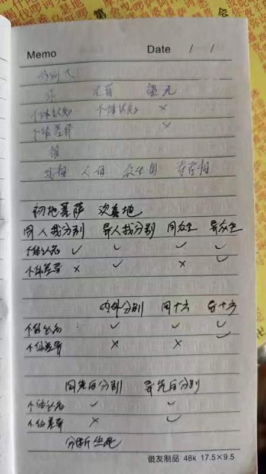

01自性与意识
初始设定1.自性恒常
自性的状态/内容/名称
慧日永明
2024-03-01 13:18
师父，自性和阿赖耶识应该不能完全等同吧？
Taiguanglin
慧日永明，自性和阿赖耶识，这种名词解释我是不知道的。在我看来，自性、阿赖耶识、根本识、第八识，这都是一个意思，就是第八识，最根本意识，我是这么认为的，我不知道你是怎么学的。
多杰扎西2007
2024-04-13 11:35
Tai师父好！
问题1：如来藏和阿赖耶识有什么区别？有一种譬喻说法是：如来藏就像平静的海水，而阿赖耶识就像海面波动的海水。还有一种说法是：阿赖耶识就像海底不动的海水，而如来藏就像整个大海。
Taiguanglin
多杰扎西2007，如来藏和阿赖耶识怎么理解？有什么区别？没什么区别。但是一定要分的话，这个阿赖耶识是自性的另一个名词。自性里有妄想的叫菩萨，没有妄想叫佛。而如来藏是指佛的状态，就是阿赖耶识里没有妄想的状态。
在如来藏的状态下是可以化现出一个世界的，虽然等觉菩萨也可以化现，也可以靠意识、意念来创造一个世界，但是如来藏这个完全的佛的状态，这个能力是更圆满的，比等觉菩萨要更圆满，我是这么理解的。
灵
2024-7-16
2、《心经》里面说“无眼界，乃至无意识界”，记得师父之前说过自性就是意识，这个有点疑惑，是说自性也是虚无不真实的吗？
Taiguanglin
《心经》里面说“无眼界，乃至无意识界”。自性和意识，自性就是意识，你就这么理解就行，不同的名字而已。但是自性是佛经里经常出来，意识是我们现代用语。
自性是真实存在的最底层意识，是不生不灭、一直存在的。它不是什么虚无不真实的，它是一直存在的。但是自性里起了妄想之后，再用这个妄想去认知的话，我们称之为意识界。
没有妄想的状态下，就从个人的角度、从意识层面上，就说是无意识状态，你可以这么说。但自性还是存在的，它只是不起妄想而已。
奇迹
2024-9-9
Tai师您好，想问一下佛和本源有什么区别和联系？或者说是修成佛以后就回归本源了吗？还是说变成本源了。
Taiguanglin
奇迹，佛和本源有什么区别和联系，本源是什么？你得先把这个本源定义一下啊，我不知道你说的本源是什么呢？我讲的法就是非常简单，人有不生不灭的自性，这是最根本、最底层的意识。从这里产生妄想就叫菩萨。如果成佛的话，在这里没有妄想，就是意识里没有妄想，这样就成佛了。
至于你说的本源，我不知道你是怎么定义的，如果说你把自性没有妄想的状态称之为本源的话，那本源的话，那成佛了，就是回归到本源。所以说佛是用“自性里有没有妄想”来判断的，并不是什么其他的，他得到了什么，以这来判断的。对于本源这个词儿，有点太主观了，每个人解释都不一样，所以很不好说的。
总之这个自性是佛经里，只有佛法里讲的啊，根本意识这样的说法也是只有佛法里讲的，西方讲的什么本我、超我，那种说法。实际上如果深入地了解意识的话，并不能把它做到一一对应起来，所以我们不讲这个，我们就讲自性，还有第七识，八识阿赖耶识也叫自性，然后是第七识分别识，然后第六识这样分的。
hffhi
2024-12-10 09:27
1、师父，自性在干什么？它是不是等于坐在电视剧前看我们演电视
Taiguanglin
hffhi，自性在干什么？自性什么都不干，自性就是那么静静的待着，底层意识而已。它是不是等于坐在电视剧前看我们演的电视？你的自性一直在，我只能这么说了，你先把第一本书和第二本书都看完，对佛法有大的框架理解。
自性在干什么？自性里会起妄想，有了妄想之后，最后就成为我们现在这种状态，没有妄想的话就会成为佛。然后在电视剧前看我们演电视？自性可以覆盖整个法界，我们所有的世界、宇宙、法界全是在自性里产生的幻觉，就像我们做梦一样，你做梦的时候你的自性在干什么？你的意识在干什么？不就是在创造那个梦境吗？所以自性在干什么，这个你自己想想。
Jhone
2024-12-12
想请问Tai师父，自性与佛性之间是什么关系？真正的我们是由什么元素组成的呢？我们到底是个什么东西呢？
Taiguanglin
Jhone，自性是最底层意识、根本意识的名字，我们给它起个名字叫自性。我们所说的佛性，是我们所有人本来都是佛，是这个意思。众生皆有佛性，就是说我们本来都是佛，从佛那里起了妄想之后跌落到这个境界，成为凡夫了，我们本来就是佛，所以完全可以靠修行回到佛的状态。佛性指的是这样的意思。
真正的我们是由什么元素组成的呢？没有元素，自性是没有元素的。我们到底是个什么东西呢？给它起名称之为自性或者是个意识，我们称它为意识，我们就是个意识体，这个世界唯有意识，没有物。
自性的不生不灭
DD泰粉丝
2024-02-22 19:30
3、为什么会有自性这东西，是另外有个谁设计的？
泰师父，原谅我问这种与实际修行没有太大关系的问题，但是这些问题经常困扰着我。
Taiguanglin
自性这东西不是设计的，它本来就有，这叫初始设定。自性恒常是初始设定，它本来就这样，这个世界的最基本的底层真相就是这个。
Chenruby
2024-03-03 12:59
师父您在开示中说：“…阿赖耶识就是自性…就那么挂在那里的”…这与六祖开悟证的自性…本自清净、本不生灭、本自具足、本无动摇、能生万法…有什么不同呢？那白净识又是什么啊？色空不二也是对自性描述吗？
Taiguanglin
Chenruby，我说的就是六祖慧能说的意思啊，阿赖耶识、自性、根本识、第八识，都是名字，就是有那么一个意识，最底层的意识，我们就叫它自性。自性一直不生不灭、永恒存在的，本来没有妄想的时候就叫佛，本自具足、本无动摇、能生万法，这都是那个意思嘛。他从什么都没有的佛，然后产生妄想，成了菩萨，产生分别心成了罗汉，产生执着就成人，“能生万法”就是这个意思。
“白净识”是到了中国这边之后才出来的名词，这也是我觉得瞎掰出来的名词，没什么意义。“白净识”也有的说就是第九识，有人都推到第九识。本来的佛教意识里就没有什么第九识的，只到第八识为止。“白净识”，那就是因为里边什么都没有，空空如也，所以叫“白净识”那么个说法。这种名词就不用太在意的。
色空不二也是对自性描述吗？色、空都是从自性里产生出来的，妄想和合而成的。色和空、空间、虚空都是妄想和合而成，都是物质。在我们看来的空间也是物质，色也是物质，都是一样的物质，都是从自性里长出来的那个妄想和合而成的。
悟空
2024-7-17
顶礼Tai师父，既然我们的所有起心动念，记忆等等都会储存到自性之中，为什么说自性不增不减，不变化呢？应该是每时每刻都在变化吧
Taiguanglin
悟空，自性就像一个大荧幕一样，十年前就说过了，就像一个大荧幕一样，它就一直摆在那里，它不生不灭，它一直处在那里，它不会增加也不会减少，而是它里边产生的妄想在变化，也会增加也会减少。但是这个妄想不管怎么变得再多，它也是自性当中产生的妄想，所以他也不可能超越自性。
就像我们现在睡觉了做梦，梦中可以创造整个宇宙出来，梦里也可以在宇宙中翱翔是吧？也可以创造其他的命，人、动物、大环境，什么都可以创造出来，但是梦里创造的这一切的一切都是我们的意识里创造出来的，所以它并没有超越我们身体，就连我们脑子都没超越出来，可以这么理解的吧。自性也是的。
jhone
2024-11-16
有时候觉得众生好苦好无奈，这颗灵魂没有经过我们同意就存在了，然后又堕入轮回无休止的受苦，有没有方法让这颗灵魂从宇宙中消失呢？让宇宙自己一个人去玩吧，我们不陪它玩了
Taiguanglin
jhone，你说消失，这个是外道的一种断常见中的断见，让自己妄想意识彻底消失，意识彻底消失，那问题是消失不了啊，自性本身是永远不消失的，所以把自性里的妄想灭掉，就可以解脱了。
宇宙也是，不是你说的这句话，让宇宙自己一个人去玩，这句话里已经把我和宇宙区分开来了。宇宙是我们心里产生的幻境而已，就像我们做梦的时候，梦里也有宇宙，也有别人，也有动物，这梦里出现的一切一切，一切东西都是我们意识里产生的幻觉而已。
那么我们当下的宇宙也是如此，所以你不能把宇宙和我区分开来看，让宇宙自己玩，我就消失，这是不可能的。你在意识里把宇宙给灭掉就可以了，然后你就可以解脱了。
恒河沙丫
2025-01-17 18:11
顶礼Tai师父！感恩昨天的解惑。遥祝师父春节吉祥！
请问师父：自性是哪里来的？谁创造的？现在有新增的自性吗？新增自性的原理是什么？
Taiguanglin
恒河沙丫，这位朋友好像已经问了很多问题，学了已经不短时间了吧，怎么还会问这样最基础的问题呢，自性是哪里来的？谁创造的？
这不是第二本书里的主题吗？自性恒常，自性本来就存在，不生不灭。不是被人创造出来的，也不是会彻底消失的，他就没有什么新增的这一说。新增自性的原理是什么？没有新增这一说。你好好去看一下第二本书、第一本书。
所有佛法的核心理论就是“自性恒常”，人有不生不灭的自性，不增不减，不垢不净，对吧，《心经》里说的，自性本来就有，它没有被创造出来。如果被创造出来的话，和“十字架”不是一样了吗？你还是把基础理论，大乘经典，要把三个基础，最底层的设定，也是这个世界的最底层真相，好好理解一下。
不要提“自性是哪里来的？”这样的问题，如果你的名字我不熟，是个新人，我第一次看见你的名字，这样提问我还能理解，你都已经问了好几个月了吧，这次讲法你的名字很有印象，怎么会问这样的问题呢。
🌸 发光的🔑
2025-3-10
师父，如恒河沙一样多的众生都是从哪来的？是本来就有的还是通过什么方式创造出来？比如把一个元神分成两个？一开始是不是只有一个元神？是这个元神起了妄想创造出来的另一个元神，然后用这样的方式不断创造出新的？那我们都是被创造出来的吗？
Taiguanglin
🌸 发光的🔑，你可能没有仔细看第一本书和第二本书，也没有仔细理解自性恒常这个初始设定。自性是本来就存在的，它不能被创造、也不能被消灭，它一直在。所以众生的总量应该是有个定数。
只不过还有很多众生，在没有起妄想的状态下，也就是佛的状态，一直安住于那样的话，他就不会出现在这个世界，其他人也不知道。
你所有的问题，都是以人被创造出来的这个前提为假设的。但不是被创造出来的，所以不需要回答所有的问题。
这个世界所有众生的自性都是一直在的，本来就在，也不可能被消灭，也不能被创造出来。
自性的数量
慧觉观自在
2024-02-21 11:58
1、所有阿赖耶识的总量？是佛的计划想分成多少份就多少份？不要说是恒河沙数。妄想是有数的。
Taiguanglin
所有阿赖耶识的总量是无量的，你问的阿赖耶识这自性有多少个？世界有多少众生，多少佛，是这个意思吧？我也不知道，反正很多。
Lanlan岚
2024-02-23 10:19
1、整个世界，尽虚空遍法界的佛/众生总数是一个定数么？就像能量守恒定律，有堕落成凡夫，也有解脱成佛的，总数是恒定还是变化的？ 恒定，是否理论上能把所有堕落过的凡夫都渡尽；如果变化，那又是哪里生出来的新佛/众生呢？
Taiguanglin
Lanlan岚，众生是有一个总数的。因为自性不生不灭，既然不生不灭的话，它既不能消失，又不能产生，那就有一个总数呗。而且，自性都是独立的个体，是可数的，所以它是有一个总数的，但是具体多少我不知道，肯定很多的。
贴吧用户_795DGUS
2024-03-05 16:17
师父，你在最初的故事里面，讲四圣佛度人的故事。我可以理解为，其实一开始就是有固定数量的佛！因为我以前看过密宗，说最初就有固定数量的佛，所有的世界都是他们的妄想产生的！
因为你的这个故事和《圆觉经》中诸佛没有无明相违背，希望你能更详细的说明一下！
Taiguanglin
贴吧用户795d，对啊，我们就认为这个世界众生的数量，佛的数量是固定的。因为自性是不生不灭的，它既不能生，也不能灭，那总数量就有一个定数，它不能多，也不能少，就那么多。
和《圆觉经》没有矛盾，我觉得没有矛盾。本来所有佛都没有妄想，大家都好好的，但是有一些佛产生了无明，就堕落到轮回里，和其他堕落的佛一起，进入了一个无限地狱世界，一直在痛苦当中轮回。没有起妄想的，没有起无明的那些佛来把他们救出来，从里边救出来，就是这么个过程。
小名宁无
2024-03-07 09:50
3、佛的数量是不是等于众生的数量？
Taiguanglin
佛的数量是不是等于众生的数量？你把所有众生都当作佛的话，所有众生，什么佛菩萨、罗汉、凡夫这些全算，都算佛的话，总数是有个量的，总数应该是有个量，因为它不生不灭。自性不生不灭的情况下肯定有个定数，总数有一个数值，但是我不知道。
烁
20-06-2024
顶礼师父，请教：
1、周遍法界众生的总数是固定的吗？从意识遍法界的角度，诸佛意识重叠而彼此透明，众生的总数就是众生都回归自性成佛后意识重叠的层数，说成“层”但其实不累叠，彼此不排斥，不是物质，可以这样理解吗？还是个数也变化，如果变化，是世界形成的时候众生数越来越多吗？
Taiguanglin
周遍法界众生的总数是固定的吗？我认为是固定的，整个法界，一真法界里所有的众生全部加起来肯定有个数，但是具体有多少还不知道。自性——阿赖耶识，它既然是不生不灭的，不能增加也不能减少，所以说众生的总数肯定有个数。
后面说“‘层’但其实不累叠，彼此不排斥，不是物质，可以这样理解吗”？重叠在一起这句话怎么理解呢？就像一张张透明的玻璃重叠在一起，每一个意识都是那样，当一个意识里起妄想的时候，同时其他意识都能感应得到，在佛的境界是这样的。
烈焰水晶
2024-12-02 12:29
最近看了师父讲的义理，有一个感觉，好像佛的总数是一开始就固定的，请问这个数量是由什么决定的？以后还会有变动吗？
Taiguanglin
烈焰水晶，佛的总数是有个固定数的，这是肯定的。因为自性是不生不灭的，所以肯定有个固定数，但是具体有多少不知道，可能得成佛了才能知道吧。
以后会不会变动？我猜以后是不会有变动的。“以后”这样的说法在佛那里都不成立，因为佛是超越时间的存在。好了。
自性的分割/三魂七魄
Lanlan岚
2024-02-23 10:19
2、一个人的自性和一只蚊子的自性是等量的么？还是蚊子这种属于散灵，只算0.1个自性？如果不同的自性，体量不等，那是否形成业的量也有不等？杀一个人和杀一个蚊子的业就不同量？感恩太师父开疑解惑。
Taiguanglin
蚊子的自性……等量的吗？首先蚊子出生就到了受报的状态，他干了坏事，所以在受报。所以说打死一只蚊子和杀死一个人，恶业的程度是不一样的，人肯定是大的。
一些小虫子，它的确有的是一个完整的意识，但是也有的是被打散的意识。打散的意识，这里也有一套逻辑我就不说了。只要是个阳神，到了阳神层面上，阳神也是由光子组成的一个发光的球体。只要它有实体，就可以分解，就可以把阳神光子给分拆开，变成很多小的，分别投胎到不同的地方，变成很多虫子这种小动物，有这种事的。
无名
2月24日 19:34
师父吉祥。元宵节快乐。请问师父:现在很多非正常死亡的人，比如类似东航5735这样的事件，如果神识在如此恐吓中导致了魂飞魄散...意识散掉，没有一个完整的意识了。那么带着这个残缺的意识再去转世...是不是就难了，很难再聚起来甚至去投胎做人或更高等级的生命?只能做一些甚至无数的低等生命啥的啊?
Taiguanglin
任何意识在死亡（时）是不会散掉的，魂飞魄散是有人干预的结果。
晨曦1721
2024-02-26 17:20
师父您好，《现代因果实录》里面说，如果一个人邪淫的话，比如一个人与三个人邪淫，那么他去世以后灵魂或者说意识，就会分成三份，分别与那三个人的意识合在一起，合并以后的意识参与轮回。这种说法有依据吗？我关心的不是邪淫的问题，而是意识是否真的会被分散？
Taiguanglin
和多人邪淫之后意识被分割，这个是错误的，至少这一点是错误的。意识分割是有明确的标准的，不是这样分割的，邪淫不能算是分割。现在那么多人，谁一辈子只和一个人？从一而终的人有几个人在现在这年代？几乎所有人都得分碎了，所以不是这么分的。意识分裂是宇宙中最严重的刑法，是这个法界当中最严重的刑法。
你想想看什么样的人会遭最严重的刑法？怎么样的罪才算是最严重的罪，会承受最严重的刑法？你这种邪淫也好，杀无数人也好，就算哪怕杀1亿人，最多也是在地狱里待很长时间。有过邪淫很多人的性经验，最多也就在地狱里待很长时间。也有抱铜柱的地狱，也有一个地狱是专门生孩子的地狱：只要淫念一起，淫心一起，就会生一个孩子，生孩子肯定很痛苦。
所以，这个不是那么分的，主要靠另一个在法界中最严重的罪来进行，而且分裂之前也有一个明确的流程，不是说分就分的，没关系的。
夏蓝
2024-02-28 17:13
师父，脱离轮回除了成为阿罗汉，是否还有魂飞魄散？魂飞魄散是什么情况呢？
Taiguanglin
夏蓝，魂飞魄散，这个是阳神状态下，阳神被人彻底打散，打散的话就称之为魂飞魄散。但是，每一次新佛出世的时候，整个世界全部格式化，这些被彻底打散的阳神也会重新集结成新的灵魂，开始新的轮回。但是，你要说为什么要打散阳神的话？这也是个问题，我不能用一分钟解释清楚，以后说个长篇的。
冰
2024-04-17 09:31
Tai师父，按照道家说法：死后三魂七魄一魂下地府，一魂去天界，一魂留墓地，请问是哪一个灵魂轮回转世的？如果阳神被打散了，格式化后重新聚集起来的阳神还是原来的阳神吗？还带有被打散以前的记忆吗？
Taiguanglin
冰，道家是道家，和佛家不一样，他们三魂七魄在我看来，简单来说就是错的。他们的说法，三魂和七魄都有各自的名字、形象，甚至都有动物的形象。
就像西方心理学对意识的认知一样，把所谓人的原始欲望——吃、喝、拉、撒、睡、淫欲这些，放到底层，进化出来上边的理性，和我们完全相反。
佛教认为，人在没有情绪的境况下是绝对理性的。有了情绪之后追随欲望，为了满足欲望逐渐出现六根，后面再出现淫欲。所以后面的所有欲望反而是堕落而来的，六根境界也是堕落而来的，而理性才是最根本的，人本来就有绝对的理性。根本的意识层面上表现出来的才是原来该有的状态。
道家说的三魂七魄，类似于西方把意识里的原始欲望当作更深层次的意识，它更趋向于这个，所以在这个问题上，我们不承认三魂七魄，所以你问的问题不成立。
如果阳神被打散了，格式化重新聚集起来，阳神还是原来的样子吗？对，这个是原来的。打散以前的记忆是没有的。
掌南飞
2024-05-17 02:35
Tai师父好！
1、请问犯了什么大罪阳神才会被打散？谁有打散众生阳神的权利？阳神被打散都是被雷劈散的吗？
Taiguanglin
掌南飞，犯了什么大罪，阳神才会被打散，谁有打散阳神的权利？只有佛有打散阳神的权利，但是他会授权一个菩萨去做这个事。
至于什么罪会受到这个惩罚，从我的身份没法说，我说了不合适。如果自认为是那样的人，根据我这句话完全可以推理出来，或者找你后面的那位问问就可以。
作了便放下
2024-9-9
顶礼Tai师_x0001_，有一个问题一直没得到答案。之前看小说，如果人变成鬼在人间做恶，被有能力的法师打散，这个人的灵魂是不是从宇宙彻底消失了？所有的痕迹是不是被彻底磨掉了，就像是此人没有来过一样？
Taiguanglin
做了便放下，小说里说人间作恶的鬼，被法师打散了，灵魂打散了，彻底消失了吗？不会啊。自性是永远不会消失的，但是阳神是会被肢解的，不过在人间作恶是不会被肢解的。
那个有能力的人，最多把他送到鬼道去，或者送到地狱道去，就像小说里说的，弄得永世不得超生啦，这种说法也就是送到鬼道里或者送到地狱而已，他不可能直接把灵魂给拆了。这是只有满足某些特定的条件的时候，才可能受到阳神肢解的这种惩罚，但是一般人是不太可能遇到这种事情的，最多就是在地狱里待的时间长而已，所以你这个问题并不存在。
飞虎队1
2024-12-13 14:05
顶礼Tai师。
1、现在的换内脏，甚至换头都已经在实验阶段，如果换头换内脏成功，哪原本自性和意识跟随头部还是跟随身体内脏？还是也被分割了？
Taiguanglin
飞虎队1，换内脏、换头已经在实验阶段，如果换头换内脏成功，原本自性和意识跟随头部，还是跟随身体内脏，还是被分割了？自性是不动的，自性是如如不动的本体，它没有跟随这一说。意识就是，我们通常认为我们的意识在大脑里，所以如果真的换成功了，肯定是跟着大脑的。
现在这个换内脏倒是已经比较普及的，很方便，谈不上是方便，但是至少像基辛格，都说是换了好几个心脏了，有这种说法，也不知道是不是真的。但是有些人的确是换了不少，某些有钱人。在中国还只能是靠自愿捐赠的方式，在中国还不那么普及。
我觉得意识肯定是跟着大脑的，但是肉体本来就是一个报身，我们称之为报身，就是我们前世的业和我们自己的习气，两者结合在一起形成的，所以把别人的身体拿过来，那就等于把别人的报身拿过来。
这个业是跟随他的，并不是跟随你的，所以就算你们前世有换身体抢身体这种事儿，拿过来之后和你的业还是会有冲突的，和你的意识也不匹配，所以才有这种生理层面上的排异反应，所以就算换了内脏，都得长期服用那个抗排异的药物。
至于换头这个说法，我还在网上看了一下，动物实验是有成功的，但是也没活多久。到目前为止人也没有成功的，就算活了那么一段时间，他也没有完整的像一个正常人一样活的。应该这个短期内是不太可能实现的事情。
你问的自性和意识的问题，自性是如如不动的，所以没有跟谁这一说，自性遍虚空嘛，所有众生的自性都是如此，而且重叠在一起。意识呢，我们形成这个执着心，执着形成注意力，文字妄想，这些是跟着大脑的。但是情绪又是在下边膻中这个地方的，如果说把头割了换到别人身上，这个情绪肯定会跟着过去，下边是跟着过去，和另一个身体会有所冲突，这个是必然的。
看客
2024-12-14
请问师父:
六道轮回中堕落为苍蝇蚊子蚂蚁小爬虫等小生命，它们还有因缘机会修成人身吗？如果修不上来，本期轮回设计结束，它们这些小生命的一点神识是回归自性本体，或是被打碎，再没资格参与生命轮回？
Taiguanglin
看客，小生命也会成佛，未来机缘成熟的时候也会成佛的。修不上去什么的，它们这小生命一旦神识回归自性本体，或是被打碎再也没有成……。
每一次新佛出世的时候，所有被打碎的灵魂都会恢复，重新来过，所以说被打碎了并不可怕，未来总有一天还是会恢复的，然后真正有机会继续修行的。
恒河沙丫
2025-01-16 18:49
顶礼Tai师父！感恩昨天的答疑。
中医和道家都讲人有三魂七魄，小时候被吓掉魂了，家里老人做个仪式把魂给叫回来。请问这里的“三魂七魄”用佛法怎么解释，和“阳神”有关系吗？人有没有可能惊吓过度而得痴呆？
Taiguanglin
恒河沙丫，佛教是不讲三魂七魄的，意识是一个完整的整体。但是小孩他会吓跑阴神。我以前也讲过，阴神是可以出体的，但是会消耗能量。小孩在刚出生到几岁的时候，意识和肉身结合的还不是很紧密，这个时候一旦被吓的话，他这个魂儿就跑出去了。
原理就是身体没跟上他的意识，身体还没走，但是意识已经先跑出去了。但是这个意识跑出去之后，一般情况下他还感知不到，自己的身体还保持，因为在他的感受上好像是带着身体跑了，所以需要拿个什么东西去招魂，叫名字把他喊回来，这是真实存在的事情。
佛经里从来没有提过三魂七魄之说，也不说意识是可以分这个部分和那个部分。佛经里的意识就是讲妄想、分别、执着，心、意、意识，这是一层一层套的，并不是并列关系。
道家讲的三魂七魄应该是并列关系，三魂高于七魄，它是更核心的东西，然后是并列的，并不是先有某个魂，再有某个魂，再有某个魂这样说的，它是并列的。
而且三魂七魄都有它的形象，他们书上讲的都有什么形象，甚至有类似动物的形象。而你学了这样的观念之后，一旦接受了这个理念，你开始打坐的话，说不定就能看到类似的形象，然后就觉得这个说法越来越对。这都是自己想象出来的，所以不知道反而更好。咱们一向就说意识是完整的整体，它正常情况下是没有办法被分割的。
这个和阳神有关系吗？上面刚说了，阳神是一个发光的球体，你没有肉身的状态下就会回到阳神状态，一个发光的球体，像太阳一样。
人有没有可能惊吓过度而得痴呆？这就是那种小孩子被吓了之后，意识跑出去了，然后身体就有点不好使。还有一些是小孩子过度惊吓，或者过度发烧，惊吓和发烧原理上最后都是伤到脑子。过度惊吓会让身体短时间内突然收缩，然后像大小便失禁这种事情都会来，然后大脑里某个血管，突然间导致血压上升，某些血管破裂，脑出血有可能会出现，小孩子的时候。
按理说小孩子本来身体都是很柔软的，所以大脑的血管也很柔软，不轻易出现这种事。但是也有可能过度惊吓会导致脑子受损，然后就变成痴呆。通常都是发烧过度了，然后烧傻了，这种事以前倒是有的。现在医学发达，小孩生病了，马上去医院，还不至于发烧变成傻子。
阿吉倪1986
2025-01-16 10:05
Tai师，网上很多人都讲到分灵。什么造业多了，肉身还没有死，分灵已经去地狱受罚；然后投胎也有说 一部分投了什么 一部分投了什么。我以前看过一个说法就是，普通的人一般就是投一个人胎（肉身），然后能量高的大德可以同时投几个人胎（肉身），也就是同一时间有可能不同的几个人都是同一个灵投胎的，这种说法您怎么认为？
Taiguanglin
阿吉倪1986，分灵这样的说法，这是西方的说法，灵魂本身就是西方来的词儿。如果有人造了很多恶业，不是他一部分先去了地狱受苦，而是他的那些冤亲债主，被他伤害的人已经变成灵魂状态下，或者变成鬼道众生之后，就开始来找他了。所以他没有办法正常好好睡觉，梦里都是那种不好的景象。还有会生病，所以这个时候就会说，可能意识的一部分已经去了地狱，有这样的说法，但实际上不是的。
还有你所造的恶业，别人承受的痛苦，也会反映到你身上。因为诸佛同体的原理，所以也会有这样那样不好的事情在自己身上发生。
什么能量高的人可以分多个投胎。咱们首先说，“能量”这个词我们是不提倡的。佛从来没有提过能量这一说，这也是西方来的词。
意识本身就是，从他们那个视角来看，是能量大啊小啊这样的说法。但是从我们佛法的修行角度来看，就是一个人的执着多或者少，习气大、多或者少，就这个差别。你越清净，欲望越少，修行的境界越高，在他们视角里，看上去应该是能量大吧。
一个人能不能分多个投胎，理论上是可以的，但他不是主动的，因为一旦分多个投胎的话就不能修行。你要打坐修行的话就必须意识是完整的。如果意识有一部分不在你身上，可能被分割出去了，那就肯定打坐不了。所以你说大德可以分几个投胎，这个不是真的，没有这样的事儿。
李凤明 （耀凤）
2025-3-10
我想问师父：共命之鸟是有一个自性，还是两个，蚯蚓截断后两边都会动是一个自性，还是两个。
Taiguanglin
李凤明，共命之鸟是有一个自性，还是两个……，共命之鸟是什么？我第一次听见，你是不是觉得是连体婴儿，那种状态啊？如果是你说的连体婴。一个身体里有两个头，两个不同的意识，那算是两个自性。
还有蚯蚓截断，这个问题好像以前也回答过。它是一个蚯蚓的时候就是一条命、一个自性；但是它被截断了，变成两个，各自成为自己的一条生命的时候，它就会有另一条生命来投胎，相当于算是一种繁殖吧。就像人类生孩子一样，有一个意识进来，成为另一个身体的主人；蚯蚓也一样，被分成两段的时候…，如果有自性的生命是这样。也有不少动物，尤其是小动物，它只是这个世界的客观环境而已，它没有自性，有些是这样的，没有自性的就没什么可谈了。
自性的记忆/阿卡西
青白瓷
2024-03-01 19:51
顶礼Tai师！
我们所有的妄想都存在记忆包里的话，人类文明的历史是真的按剧本发生过，还是只是剧本的一部分而批量的注入我们的记忆包里的？
感恩开示！
另外，我现在好像理解您曾经说的，出定后就像上线打游戏。
Taiguanglin
青白瓷，人类的记忆是可以被篡改的，但是这种篡改的记忆和业不一样。业是储存到自性里的真实的记忆，而且无法篡改，永远存在在那里，无法篡改的。所以这种无法篡改的才算是业，用类似于催眠的方式让你相信什么的，这种修改的记忆，不能称为业。人类的历史都是发生过的，因为都是业的轮转，所以都是发生过的。
果慧
2024-03-01 10:55
2、之前有听说高维的阿卡西这个是邪性的吗？听说是人的意识和它链接，读取阿赖耶识的，可以知道前世的信息。
Taiguanglin
阿卡西记录，如果说它是如来藏的话，那是对的，反正他们是这么叫的。实际上现在所谓的连接阿卡西记录看前世，这个也是有管理员管着的。他允许你看的时候你就能看到，不允许你看，你就看不见。允许的话又允许到什么程度，让你看到什么程度，那也是人家管着的。
不是凡夫自己随随便便修行，就可以连接阿卡西，连接什么如来藏，直接看到重要的信息，那是不太可能的。如果真的有人可以这样连接，看到真实的整个大剧本的话，估计现在早就传出来，但是没有吧。
无明萤火
14-03-2024
赞美师父，问题如下： 1、师父曾经提过宇宙有个档案馆，是不是存储了负责观察众生的阿罗汉记录下来的信息？这个信息非常有价值，可以查阅众生的命运剧本，以及因为造作善恶业而带来的命运更改，请问这个档案馆是否也会遭受火劫、风劫之类的？
Taiguanglin
无明萤火，这个是在佛的意识当中储存的记忆，它没有实体的，所以根本不会被破坏。记忆本身就是一个很神奇的存在，它没有实体，也不会再给人造成任何负担，给佛也好，菩萨也好，造成任何负担，但是它确实存在。
所以直接联系佛菩萨的意识当中可以提取记忆。但是对于凡夫来说，你要提某个记忆，都得由上边允许才行，他让你看，你才能看。看什么也是人家决定的。而且给你看的内容，也是他让你看到，有可能会改变一些，所以不一定是真实的，但是对你肯定是有帮助的。
多杰扎西2007
2024-03-29 09:33
顶礼tai师父
“身心外洎山河虚空大地皆妙明真心中物”，一切都是阿赖耶识幻化出来的。记忆也是阿赖耶识的一部分每个人生命轮回的每一世经历，都在阿赖耶识中留下记录，那么我们看过的所有的经典书籍等都应该会永世不忘，记不起是自己的业障覆盖的缘故。但好像听过有这么一个说法，说佛顶尊胜陀罗尼、妙法莲华经，只要此生读过一次，一经历耳就永世不会忘记而能够记起。如果是这样的，何以故，有何特殊因缘而有此差别？
Taiguanglin
多杰扎西2007，任何经历的事情，看过的书，不光是佛经，只要但凡看过的还有听过的，反正你经历过的事情都会存到记忆里，都会存进去的。所以哪怕是不用成佛，就算是一个普通人状态下，你也可以找催眠师催眠一下，能找回一些这一世的记忆，前世的能找回，但是也有很多是自己想象出来的。
但是这一世的，比如说你出了一个事故，在那个事故之后你想不起来一些事情了，你可以找催眠师问问，大概率能帮你把这个事情给找回来。有些事情是你在专注地干一件事情之后，旁边走过一个人，你没有仔细看，只是瞟了一眼你没有记住，但是这种在记忆当中，催眠当中是可以找回这个人的长相的，因为记忆是可以像定格的画面一样。
薛祖宜
22-04-2024
另外我想再问，就是读过了分别心的文章，我想你再讲解一下记忆跟妄想的关系。最后，多谢你那一次建议我不好去一个战乱的地方，现在战争比那时更加紧张、范围更大。
Taiguanglin
记忆跟妄想的关系。一切所打的妄想都会变成记忆存到自性当中，但是记忆是不给自性产生负担的，它只是存起来，是无形的，而妄想是有形的。虽然我们讲法的时候说妄想无形，但是实际上它可以给人产生负担，妄想越多越烦恼。所以妄想是有形或者有质的，和我们世界的物质相比，它不是什么真实的东西，但是实际上它真实存在。而记忆并不是有形、有质的存在，不是像妄想一样可以给我们产生负担的。所以平时你不去翻找，它就不显现出来，有必要的时候你可以翻找。
出离啊
2024-04-24 20:39
2、师父说自性绝对是意识，说意识里什么都没有的时候叫佛。又说佛的自性里有所有有缘众生的记忆。是不是说佛的意识里除了与有缘人的记忆之外什么都没有？不是什么都没有啰？阿弥陀佛在安排传法团队的时候，有没有意识在起作用？
Taiguanglin
自性绝对是意识，意识里什么都没有的时候叫佛，是在妄想、分别、执着这个层面上说的。记忆不是妄想、分别、执着，不会给人产生负担。而妄想、分别、执着和记忆相比，有真实的东西，它本来是该空的，但是它一旦出现，人的意识会产生负担，所以会层层往下跌落。所以记忆和妄想不是一个性质的东西。
阿弥陀佛在安排传法团队的时候，有没有意识在起作用？当然是用意识来下达命令了。
意识当中什么都没有，佛的意识里除了与有缘人的记忆之外，什么都没有，你说得对。每一个佛的记忆都不一样，他们每个人在轮回中经历的记忆都会存在意识里，但它不是妄想，不会成为负担，所以他能成佛。你要拿这个抠，“不是什么都没有啰？”我只能那样说，佛的意识里还有记忆。
河清海晏
2024-4-24
自己抱着孩子听师父的讲法，讲法的内容会储存到孩子的阿赖耶识里吗？
Taiguanglin
只要孩子听过的经都会存到阿赖耶识，就算听不懂也能记住。在阿赖耶识里存的记忆是没有任何缺陷的。
冰
2024-04-25 17:13
Tai师父，因为记忆可以篡改，所以自己也不能完全相信，对吗？
Taiguanglin
冰，记忆是可以篡改的，我们说凡夫在成为阿罗汉之前，连自己都不要相信，这句话不是因为记忆可以篡改，更重要、更准确的应该是一些真实的记忆可以被覆盖。
这个不是重点，这里指凡夫是根据个人的执着——我前面讲的“见、取、执”来看世界的。《金刚经》也一再强调，不要用“我见”来看世界。所以凡夫的认为——我认为这个怎么怎么样，佛法应该怎么怎么样，以这种观念来看的话，它不是真实的佛法或者你看到的真实现象。
所以凡夫就不要用自己所认知的六根或者情绪的欲望去认知世界，把那些认知到的感受作为真相来理解。这样是错误的。
壹寻
2024-4-26
3、有些文章讲的法界信息是真的吗，师父眼里的法界是怎么样的？例如：①我看其他文章有些说，念孔雀明王心咒，会有孔雀羽毛之类的。②可以看到每个人做了什么事情，功德就会增或减之类。
Taiguanglin
还有法界信息问题，我们称之为“如来藏”，或者网上什么“阿卡西记录”这种说法，其实就是连接到佛的意识当中去读取他的一些记忆，这个是真实的。而且记忆本身不可能成为负担，但是一直存在的东西，所以可以做得到。
这个能看到每个人做的事情，功德就会增或减之类，不知道你说的什么意思。
天才樱木花路
2024-05-19 21:51
顶礼Tai师父！
1、第八识能记录一切事情吗？包括一切真实经历过的，或者没经历过的妄想？ 还是说要在阿赖耶识里种下种子其实是非常有难度的？
Taiguanglin
天才樱木花路，第八识能记录一切事情，记忆是永恒的，而且事无巨细，什么事情都能记，脑子里的一个细小的妄想它也会记下来。这没有什么难度，本来就是这样的，也没有什么原因，记忆就是这样的，脑子里的任何一个妄想它都会记住的。
果慧
21-05-2024
Tai师父好！
1、实不相瞒，弟子去年二月接触佛法，自己没有太多正知正见，不敢乱学，怕被别人带偏。可能也是命运的巧合，在别人指引下认识阿卡西，我就问阿卡西关于佛法的知识，我该怎么做？该学哪些？还有生活上帮我解决一些问题，请问以后是否可以接着问阿卡西呢？ 问多了会对我有什么不好的影响吗？
Taiguanglin
果慧，阿卡西记录是西方现在流行的说法，我以前好像说过，按照我们的理解就是如来藏，佛的记忆。所以如果你要学佛的话，向佛菩萨求就可以了，不要管什么阿卡西这类说法。
你就向佛菩萨求，要求极乐世界的法门就向观音菩萨或者阿弥陀佛求，先做功德，求你想问的问题，这样就可以。
西方的那些阿卡西，海奥华预言这类东西看一看就行，里边没有什么正确的修行法门，它只是个类似故事的东西，你看一看可以，不要把它当作人生的终极目标来做。我们学佛有终极目标，也有努力的方法，有方法论的，他们没有方法论，好不好？
太师父的小粉丝
2024-09-13 15:20
3、诸佛同体的话，那成佛了可以读取别人的记忆么？那过去的黑历史被其他佛知道岂不是很尴尬？
Taiguanglin
还有诸佛同体的话，成佛了可以读取别人的记忆？可以呀。然后黑历史被读取了，有尴尬吗？这没什么尴尬的，因为人人都有黑历史，有些别人黑历史比你黑的很，所有佛都一样，这没什么大不了的，而且都不在意，根本不在意，也管不了那啥。
你现在就已经知道了诸佛同体了，那你现在脑子里想的所有事佛菩萨都知道，你要尴尬的话就现在尴尬，他们都知道，你的那些过去的事他都知道的，现在就知道，所以也不需要什么尴尬不尴尬的，本来就知道。
Pu
2025-2-11
人在昏迷或者植物人的状态下阿赖耶识还会在作用吗？如果阿赖耶识在作用，为什么昏迷的人想不起昏迷时的记忆？
Taiguanglin
Pu，阿赖耶识是一直存在的，这个和昏迷没有什么关系，它一直在。昏迷是你的六识当中，前面五识一直在作用，但是后面的那个六识暂时熄灭了，可以这么看。就是说前面五识搜集的信息，没有办法在第六识里进行加工，把它储存。
但是，如果你修行超越了这个六识阶段，再往七识，往下找回记忆，往下看的话，你还是能找出所有在你昏迷状态下，周围发生的事情，记忆都是可以找回来的，它还是存在的。
昏迷状态只是第六识暂时熄灭，所以没有办法把这个信息，储存到我们能找回记忆的层面上而已，我是这么认为的。所以这个和阿赖耶识没啥关系，你的修行达到七识以上的境界，所有记忆都会回来的。
椰子糕不错
2025-02-14 19:29
3、请问师父，为何菩萨投胎度人不能保留记忆呢，有记忆的话不是更方便吗？
Taiguanglin
第三个问题，菩萨再来，因为带着业，有业的话记忆就被自己的业给覆盖；记忆还在，但是外边有一层业盖住了，所以一时想不起来；但是没有关系，你的修为到了一定程度自然会想起来的。
如果带着记忆来——所谓的化身，就不能消业了。带着记忆的话，拿化身显现在这个世界，就不能消业。带着业来的话，记忆就有了障碍。所以菩萨都是两个人做搭档，因为在没有记忆的时候是最危险的，需要有人在后边引导。
小小猫可
2025-02-15 11:56
Tai师父好，有个问题想请教一下，按照轮回的理论，现在的我并不知道我上辈子是谁，我的主观意识还是这辈子的我自己，那和上一辈子的主观意识是一个主观意识么？如果修行到一定程度，会记起上辈子的事，那会是两个主观意识的合并么？还是说像头部外伤失忆的病人，生活一段时间之后，失忆治好了，又恢复之前的记忆？
Taiguanglin
小小猫可，你就当做失忆的人又找回记忆了，这么看就可以了。没有什么主观意识合并这样的说法，前世的事你只是想不起来而已。想不起来这个事并不一定就不需要负责，因为被你伤害的那些众生是不放过你的，他们记得，你想不起来有什么用。
你在外边杀了人了，然后说想不起来了，警察就不抓你了吗？还不是照样抓，该怎么判就得怎么判。虽然法律上说精神病患者杀人，是不判死刑什么，但是还得关精神病院吧。所以，你就当做失忆的病人找回记忆那个状态来看，就可以了。
众生无尽愿无尽
2025-03-10 13:40
3、《华严经》就算我不懂，读一遍，也能先存起来对吗？唯识里讲阿赖耶识是被动的大仓库。
Taiguanglin
下一个问题，对，你说的都对。你理解不了，你只要信受、相信是这样的；我虽然不能完全理解，但是我相信他说的是对的——这样想就更容易装到你的阿赖耶识。当然你不信，它还是能装进来，但是不信的东西你要把它改成信，要展现出来，这个时间更长。但是你如此信受的话，后面让你在修行方面进步会更容易一些，很快的。
有些内容当下无法理解，没有关系。先听一遍留在自己的意识里就够了。光是这一点，就证明你已经是个懂得真相的人。
哪怕不信，听过了就是知道真相，但是不信，也有这样的人，不光是听了之后一定要信受的。
无明萤火
2025-3-10
感恩师父，_x0001_师父说过修行到一定程度就可以看到其他众生的记忆，请问这个“看到”其他众生的记忆是以上帝的视角还是以当事人的视角？ 按弟子粗浅的理解进行推理：个体的记忆是妄想、分别、执着后产生的，在阿赖耶识中应该是以个体的视角来存储，那么当我们可以查看其他众生记忆的时候，就应该会有种代入了对方视角的感觉，不知道这么猜测是否正确？
Taiguanglin
无明萤火，你说的对，读其他众生的记忆，就是以他的视角来看。
还有，更高维的就是直接连通佛菩萨的记忆。佛菩萨记忆里又保存了他所看到的所有众生记忆。因为佛菩萨，在他的意识遍虚空的状态下，一直维持着这个世界，也就等于是观察这个世界，所以他也会一直保留所有众生的记忆在那里。
你连接他的视角看的话，就是以上帝视角在看；如果你是连接某个凡夫个体的话，那就是他的视角，活人的视角来看。
初始设定2.初妄无因
掌南飞
2024-03-23 17:56
Tai师父好，1、现在科技越来越发达，机器人也越来越高级，请问以后的机器人会有自己的灵魂和思想吗？
Taiguanglin
掌南飞，机器人是不会有灵魂的，前面好像讲过。意识，自性，它之所以是意识，因为它可以起初妄——最初的妄想，所以它才叫意识。如果它起不了最初的妄想，它不是意识。
机器人的思维全是人先给了它一个最初的妄想，用编程的方式，让它启动了，所以后面才有。所以没有启动它就不可能有，它就是个死的机器。再说了断电不就是直接机器给关了吗？
无无
21-06-2024
2、这个初妄有具体内容吗？或者说第一个妄想是什么？
Taiguanglin
你要说内容的话，他已经堕入了执着的程度，初妄应该是没有内容的，但是很难说，用我们的语言很难解释初妄是什么样的妄想，它可以说是没有内容的妄想。
初始设定3.诸佛同体
自性重叠
灵光台
2024-2-18
第2114问: 师父最近说到了“重叠”一词，真让人豁然开朗啊~下面的话有点多，但都是挑的重点来说，还望师父慈悲解我疑惑。
我抬头看着蓝宝石铺成的天空，但肉眼无法看到忉利天相关的任何东西。可是突然灵光一现，想到了师父说的“重叠”！
于是，我马上观想欲界三十三天出现在“蓝天”之上，再观想夜摩天在忉利天之上。以此类推，欲界五天都观想出来了——还把它们都“重叠”在现实世界中的蓝天之上。
就在重叠的那一刹那，灵光出现——“佛法不离世间觉”！
天啦噜，突然对这句平常得不能再平常的话有了从未出现过的感悟。顿时醒悟，佛法就在“身边”，根本不遥远啊——佛法和现实世界“重叠”在了一起！
不像以前那样，觉得佛说的内容离现实世界很远。好像处在游戏里的世界，人间和天堂的距离是可以“感受”得到的。
灵光普照似的，还感受到了自己在宇宙中的“坐标”——如同VR游戏世界里的坐标，让我知道我在哪，也清楚要到哪儿去！
又火速打开攻略（师父2014年的讲法）看看看，把攻略也重叠又重叠地重叠在现实中。
突然，我滴妈啊，那种感觉好神奇啊！是一种清清楚楚，明明白白的体验——佛菩萨真的与我们同在；佛菩萨不在身外，也不在心里，更不在六根中；佛菩萨是和我们“重叠”在一起的啊！
哎呀我滴妈呀，真的好感动啊，真真感恩师父昨天的开示啊！
还有“西方净土到底在哪啊”的虚无缥缈感，也不见了——在这种“坐标系”里，感觉人间和净土的距离也是很容易度量的；遥不可及的距离感就这么突然消失了。
师父啊，您以前用电影屏幕比喻自性，教我们理解佛理，我们懂是懂了，用笔答题也肯定满分，但好像还是没有“吸收”一样；就是脑袋懂了，在现实中还是懵懂找不到南北的样子——没有那种“重叠”感。
请问师父，能否用“VR头盔和VR游戏”来做一次终极的比喻？
感觉VR头盔能比电影屏幕更容易的把佛理“重叠”在现实中。若是如此，未来众初学一定能更好地吸收师父讲的佛理吧。
我这个愚痴初学，看师父的讲法十年了，还懵懵懂懂，直到昨天听到了“重叠”一词，才突然豁然开朗，一通百通似的。
Taiguanglin
这里没有提问题啊，我没玩过vr，要不让她告诉我怎么说吧，比喻而已，你能明白就行。
灵光台
2024-2-18
我以报告的姿态给师父做个报告吧，这我就比较敢。有错之处还请师父指出。
《报告主题: 重叠的力量》
Tai书中的“师父”在我们心里一直是一种缥缈感的存在，但最近师父的回来，缥缈感就不见了。我想这就是“重叠”的力量吧——书中的师父重叠在了现实世界中，缥缈感消失，自信心也提升了，有些人还感觉身价都涨了。
我就想，自性或佛的意识既看不见，也摸不着，听不到——缥缈感就更强烈了，特别是我等初学八戒，更是摸不着头脑，在现实世界里疯狂找自性。
我又想，有没有一种方法，能让“自性”重叠在现实中？就像书中的师父重叠在现实的贴吧世界中一样。
这样自性相关的佛理就不缥缈了呀。没了缥缈感，就不会到处找自性了——好似师父重叠在贴吧里，我们就不会到处找师父了。
我再想，就想到了VR头盔，把它戴头上，头盔不就和自己重叠在一起了吗？！
［我假设VR头盔就是自性，那自性就和自己重叠在一起了！！！“自性”在自己“身上”，还去哪里找，根本不用找，本来就在“身上”］
于是乎，我坐在椅子上，戴上VR头盔。
我在头盔生出的世界里动来动去——但VR头盔如如不动。
我在各种杀盗淫妄酒——但头盔如如不动。
我做了很多任务，达到了一个成就，这个成就允许我发出一个指令（祈愿），我就祈愿治好病；头盔收到这个指令后，加持我恢复了健康——但头盔如如不动。
我继续在这个世界里各种生活，学习，工作，还挺开心——这个头盔依然如如不动。
我在这个头盔创造的世界里开始累了: 能量显示快没了。我给头盔发出了一个指令（疑问），因为攻略说发出这个疑问指令，到后面就能恢复能量。
我发出了指令: 这个世界是谁创造的，我从哪儿来，要到哪儿去？
这时头盔创造了一位圣人，说: 世界是头盔创造的，你从头盔那来，要到头盔那去。
我就按照这个新的游戏指引，在头盔创造的世界里疯狂的找头盔，“希望”能回到头盔那里去。
找着找着，发现了一座山，这山叫镜子山，是一面非常大的山型镜子；山下红尘全然映在这座镜子里。
圣人又出现说，头盔就像这座镜子山，不仅如如不动，红尘世界还都重叠在这座镜子里。
［这个头盔里的游戏玩到这的时候，我猛然摘下头盔，哎呀我滴妈，这不就是游戏里我要找的头盔吗？它就在我“手里”呀！］
哎哟我滴观世音菩萨呀，我感觉我瞬间理悟了，我也不知这算不算理悟，更不知能不能用理悟这个词。
［就是突然理解了摩尼珠，而且深信不疑每个人手里都有“个”摩尼珠——VR头盔］
幡然醒悟——肉身，楼房，山河大地，蓝天白云，Tai书，甚至最近出现的师父，以及情绪，注意力，文字妄想，全都在自性中，全都是和自性重叠在一起的。
总结报告:
头盔里的一切物质，一切意识，一切佛菩萨和众生，一切时间和空间，都是和头盔重叠在一起的。
因为没有了缥缈感，我深信不疑佛菩萨的加持是真实存在的，就像现在深信不疑师父回来了一样。
还深信佛菩萨的加持能达到秒加持，随时随地的叠buff，没时间空间的限制——像那VR头盔，都是毫秒级反应（加持）的，且没时空限制。
也深信了极乐世界里凭空出现东西的现象；也深信了六祖大师说的，头盔本就清净，头盔本不生灭，头盔本就具足，头盔本无动摇，头盔能生万法。
以上就是所有的重要报告了，无敌感恩师父。
《以下是次要报告》
1、师父，我发这些不像问题的问题给您，我好紧张啊。总感觉好像有一只看不见的手再推着我，要我一定把这个VR的事跟您报告一下。
（也不知是我的执念，还是大师伯在推着我，反正就是好紧张呀）
虽然十年前就成了您的忠实粉丝，可是现在的修为还相当低，所以好紧张啊，我何德何能有啥资格发报告给您呀，还发了那么多字。
2、师父，理悟的标准是什么？不仅要明心见性，还要把修行的逻辑原理都搞通，才算理悟了吗？
（我觉得VR头盔对理悟的作用超级大，感觉找到自性头盔算一点理悟的话，再看昨晚师父的开示，毫无压力，深信不疑——这个想法的对错，只能跪等师父帮我印证了）
3、如果真是这样的话，我发现这十年里连灭文字妄想的原理，八戒我等好多人都没搞通，直到最近师父这几天的重新开示，让我们都豁然开朗，好开心啊。然后大家又充满信心地建了新的灭文字妄想的功课群。
4、最近听师父您的语音睡着了，发现居然能早起，哈哈，是不是听语音也有加持作用啊？
5、昨天梦见师父您啦。我从很高的空中往下看，看到非常茂密的树叶，然后我就一直往下跳，也不知算不算跳，接着就飞到地上了，然后看到了师父您。
6、昨晚师父说，所有的意识在自性阿赖耶识这个层面上全部重叠在一起。我看到这句话的时候，好开心，因为我感觉我能“实证”这个境界——哈哈，就是VR头盔比喻法:
所有的意识在自性头盔这个层面上全部重叠在一起。
还有师父说的创造一个新世界什么什么的，都能秒懂——在自性头盔那按个按钮，一个3D立体的（佛）世界就创造出来了。
所有报告完毕。再次感恩师父花时间解答我的疑惑，意念撒花供养师父。
当然还有意念VR头盔供养师父，哈哈，感恩感恩再次感恩师父，最近真的好多豁然开朗，疯狂跪拜感恩ing。
Taiguanglin
他能信受诸佛同体，这是大智慧，随喜赞叹。而且还能用自己的语言和比喻描述出来，说明真懂了，加油。
青鸾鲲
2024-02-20 19:59
3、诸佛同体，重叠在一起，请问师父讲的佛教世界观是什么呢？
Taiguanglin
诸佛同体就是所有众生的意识——佛、菩萨、罗汉、凡夫，在自性这个层面上全部重叠在一起。我用汉语这么说你（都）听不懂，那我怎么解释啊？这就是佛教的世界观。前面还有一个是自性恒常：自性是不生不灭的，一直存在的。还有是初妄无因：第一个妄想是没有原因的，这是佛教的世界观的基本设定。我们信佛的人认为这就是真相，最底层的真相。
自性的异同分别
Skywatch
2024-03-14 18:28
自性恒常，但堕落成凡夫是多种多样的，自性与自性之间是否有区别？
Taiguanglin
Skywatch，自性和自性是一样的，没有区别的。但是堕落的时候根据不同的执着造不同的业，然后就会成为不同的众生。就算同样是人也分男女，又分出各种性格，但是所有人自性本身都是一样的。如果成佛了，佛都是一样的。但是佛一旦开始做事，就会显现出曾经在轮回当中的习气，那个思维模式就会显现出来。所以菩萨也好，罗汉也好，重新进入轮回的时候，他做事思维模式也会带着以前的那些习气。所以有些职业只能从凡夫开始修炼，一旦成佛之后，上去之后再换个职业有点难度，是这么个理由。
壹寻
2024-3-16
师父，弟子愚钝。1.之前讲每个人都有自己的自性，讲分别心时，无我相与人相的分别，那自性与自性又为什么会有分别？
Taiguanglin
自性与自性又为什么会有分别？因为你成了阿罗汉，是你自己认为他有分别，所以才有了分别。你如果成了菩萨，他就没有分别，自性与自性都是一样的。
烈焰水晶
2024-12-29 13:59
1、师父说自性里什么都没有，但又有数量，我想不明白既然什么都没有，那是靠什么来分辨“这是一个自性，这是另一个自性”呢？
Taiguanglin
烈焰水晶，自性里什么都没有，但又有数量。我想不明白既然什么都没有，那是靠什么来分辨“这是一个自性，这是另一个自性？”就是靠妄想，没有任何妄想的佛是没有办法被感知到的。除非这个佛曾经有过的妄想成为你的记忆，你知道曾经有这么一个人，这个人消失了，但是你还知道他曾经有过，所以知道还有这么一个自性，有一个主体的自性。
如果一个佛从来没有出现过，从来没有产生过妄想，从来没有投胎到人间，或者根本就没有起过妄想，其他众生是没有办法感知到他的。只要他产生了妄想，其他佛就感知这个妄想，从而知道还有一个自性。等这个妄想消失了，就以这个佛的记忆来感知，曾经有这么一个妄想。自性不会消失的，所以还是有这个佛，是这么判断的。
所以说这个世界自性的数量肯定是有数的。因为它不生不灭，但是具体有多少不知道，不知道的原因是：有些自性还没有产生过妄想，所以没有办法被感知到。你能理解这个意思吧？
还有你问，分辨这个自性、那个自性，如果从一个菩萨或者佛的角度来看，当你想着要分辨的时候，就已经自己就会往下堕落了。所以佛是不会试图去分辨这个自性或那个自性，我们不能以这个方式来解释，但是逻辑上就是这样的。
自性相独立/非一体
神门
2024-02-20 11:14
感恩师父的慈悲开示，听了这几天的开示，弟子还有两个小问题想请教下师父：
1、既然诸佛是同体的，您说意识重叠，那不意味着一切自性都是一体的吗？我的理解就是你中有我，我中有你、不分你我了，为什么会还存在有没有缘（绳子）以及“中间人”的问题呢？
Taiguanglin
神门，诸佛同体意识重叠在一起，但是都是独立的个体。就像太阳光和手电筒的光可以重叠在一起一样，重叠了，但是独立的个体，每个人可以自由的起妄想。不能说是你中有我，我中有你，这是在自性这个层面上重叠在一起，但不会变成同一个。不会出现这种情况。所以才会层层传递加持力。
Kiv
2024-4-22
师父，众生共用一个自性，还是不同自性重叠一起？前几日群里因此而讨论不停，也有引用《华严经》：佛子！一切诸佛同一法身、境界无量身、功德无边身、世间无尽身、三界不染身、随念示现身……表示只有一个法身、一个自性，大家共用的。
Taiguanglin
Kiv，自性重叠在一起。所有的众生，都有自己独立的自性，但是它们的存在方式是重叠在一起，而不是所有的自性是一个自性。
你要这么说的话，我们这些众生都是一个自性当中产生出来的，像人格分裂症患者一样，那样就不需要我们每个人都修行。人格分裂症是怎么治疗的？把不同的人格都给杀掉，最后留一个正常人格——中心人格。那么我们还需要修行吗？就互相杀来杀去，最后杀到剩一个人就可以了。
所以每一个自性都是独立的个体，不可能生也不可能死。自性本身是恒常的，所以才有业的轮转，只是它存在的方式重叠在一起而已。
你说的《华严经》里“一切诸佛同一法身”，你就是从这句话里认为自性可能只有一个吧？有些佛经为了在翻译的时候让语言更加通顺，可能把中间的一些重要的字给拔掉了。“诸佛同一法身”，就是法身这个层面上，它的性质是一样的。所有佛一旦成佛了，他的法身境界的性质是一样的，并不是只有一个法身。
每一个人，每一个佛都有独立的一个法身，都有独立的妄想可以做——他要起妄想的话可以起，所以后边这句话都是对的。但是唯独“诸佛同一法身”会让人产生误解，以为所有众生都是从一个意识里分裂出来的，那就没法解释度人、业的轮转。
所以这个世界的真相是每个人都有独立的自性，只不过他们的存在方式是重叠在一起。每一个佛都有他的一个独立的法身，但是他们一旦成佛，他们的性质都会变得一样。菩萨还有一个妄想，所以在这个妄想上，每一个菩萨都有一点点区别。但是佛在没有妄想的情况下法身状态完全一样。
严晨晨
2024-9-14
1、请教师父：自性恒常、初妄无因、诸佛同体。 在初妄产生前自性是一个整体吗？是否因为初妄所以就跌落成了等觉菩萨，每个初妄分别跌落成一个等觉菩萨，所以每个等觉菩萨都是最初大自性跌落后的一个部分？还是说初妄前已经有很多初始佛，不同初始佛各自开始产生第一个妄想，各自跌落成等觉菩萨？初妄前是一个佛还是多个佛？自性是同一个还是不同一个？
Taiguanglin
严晨晨，在初妄产生前自性是一个整体吗？你说的应该是很多个自性，它是不是一个整体，是这个意思吧？不能说是整体，准确的说是所有自性重叠在一起的，就像你在空气里吐一口烟，抽根烟，然后吐一口出来，烟融入到空气里是不是重叠到一起了？同样的原理，自性也是，所有自性全部重叠在一起了。
所以每一个等觉菩萨都是最初大自性跌落后的一个部分？不是，等觉菩萨产生第一个妄想的时候，这个妄想也同样是遍自性的，可以称为遍法界的，同样是全部重叠在一起的，第一个妄想也是重叠在一起的。所以它不能说是一个部分，你这么说一个部分已经在空间上有了分别，这个部分那么，那个部分这么，区分的，但是它还是重叠在一起的，所以没有部分之说。
还是说初妄前已经有很多初始佛，不同初始佛各自开始产生第一个妄想，各自跌落成等觉菩萨……，的确是各自跌落成等觉菩萨，但是等觉菩萨状态下还是重叠在一起的。
初妄前是一个佛，还是多个佛？应该是多个佛，无数个佛。自性同一个还是不同一个？每个人都有独立的自性，所以全是不同的，客观上讲自性肯定有个定数，但是具体有多少个不知道，反正就很多吧。
行云流水
2024-11-13
顶礼Tai师父-
问题1、目前众多宗教里，佛教的理论是比较接近于宇宙实相的，我仍然想问-是否宇宙存在一个超灵，它为了体验它自身的存在，来泛化出无量的意识个体来完整它的感受和体验，这些个体比较强大的就是佛或者其他外道里比较顶尖的存在，我想问是否真的存在这样一个超体存在或者叫它神，这是真的吗？感谢师父
Taiguanglin
行云流水，你说的什么大圣灵，现在网上说的，我也看过，网上看那个老高的视频，当然他不是创造那种的人，他是把别人的东西给你讲出来的人。他讲了有一个理论是，一个宇宙有一个大圣灵，分身无数个小灵魂来扮演各种的人，来收集人生阅历、人生经历，就是来体验人生的，最后都会回到大圣灵身上，这个在佛法里称之为外道，一种外道，就是会让人陷入无我怖的外道。
无我怖就是没有我，因为你是一个超大圣灵的分灵，那你死了就得回到大圣灵里面，那就变成了他的部分，你自己的独立人格就消失了，这会让人产生恐怖。人都怕死的，意识层面上，变成了其他一个超大圣灵里的一小部分的话，那等于自己作为独立的个体死亡了。所以这个在佛法里属于外道，是不正确的，邪见。
在我们这个体系里，每一个自性都是独立的个体，不是什么大意识里分裂出来的小意识，不是这样看的。我们每一个人都是完整独立的个体。你先建立一个正确的佛教观念之后，再看其他的说法，就看明白他们的理论体系了。
有些看上去有道理，但是深层次挖的话，不仅逻辑上有漏洞，而且对人类没什么好的帮助，对人也没有什么正确的引导。
至少我是不信十字架，因为周边也有人信十字架，我也被人拖着去过教会，也听过他们的话，我是从内心深处不能接受，我是被人创造出来的这个说法。当时没有理论体系，没有逻辑，小孩子嘛，但是我就是不愿意接受，没法接受我是被人创造出来的。当然现在你这个问题里，我也不能接受我是一个超大圣灵里分裂出来的一个小碎片，这种说法我是不能接受的。
现在是逻辑啊，佛法啊，全部理论整体上已经很充足了，逻辑完整了，所以我可以从逻辑上说明这个是错误的。但是过去是单纯的我个人朴素的观念，我不能接受是被人创造出来的，也不愿意接受我是别人的碎片这种说法，你怎么看，你自己想想。
太师父的小粉丝
2024-11-15 18:19
3、还有西方的灵性圈的一种说法，就说宇宙是有好多维度的，从三维到十一维，高一级的维度会在低维度分成好多灵魂碎片修行，每低一级继续分，高级维度（称为高灵），每天的工作就是给小我编写剧本，要把该体验的全体验了才能升维。您昨天答疑否定了这个理论。但我在想，从诸佛同体，以及编辑菩萨编写剧本的这个设定来看，好像也有点合理耶。
Taiguanglin
第二个问题，什么灵魂高维分灵啊这个说法，我是否定的。每一个人自性都是独立的个体，并不是其他众生什么分裂出来的小碎片。这样说的话，就是上次说的，人们会陷入无我怖当中，把自己合并到其他大灵魂里，那自己不就消失了吗，是不是这样？
而且每一个佛菩萨，他只要下来做事，他就有性格，都不一样的，每个人他都有自己做事的性格。说明他们每个人都是独立的个体，如果是什么分灵的话，可能要么就性格全部一样，要么是性格很偏激的那种。就像影视剧里一个灵分成两个，一个善一个恶，坏的是彻底的坏的，好的是彻底的好的，有这样的分法。所以我觉得分灵这个说法肯定是不对的。
妄想分别执着
意识的结构/万物唯心造
慧觉观自在
2024-02-17 12:36
Tai师父好，您的圣经弟子这几天又突击了两遍，有一些理论问题，不彻底搞明白我拿不准如何实修。
【概念问题】就是几个词汇：思考、意识、意根、注意力、文字妄想、情绪与八识的对应关系。
您书中说"我执是无内容的情绪"（第一章2.1节）"此情绪没有内容，是一种自我意识的凝聚体”（第三章第5节）；后面又说“意识：最里面是没有内容的情绪→喜情→苦情→注意力→文字妄想”。那无内容的情绪是属于第七识还是意根呀？我知道文字妄想、注意力、有内容的情绪都属于意根。您这个细分排序太强了！属于全球独创。
但2月15日开示中您说“思考是意根”，“文字妄想不是思考”，“思考是针对于六根的想象”。
我有点晕。可否请您再梳理一下。
【概念涉及的实修问题】
关于参思情时观想阿弥陀佛（这几日开示）。您说过"眼根就是注意力"（第一章2.3节）。实证上我也是这么感觉的。但您说注意力属于意根。本来都灭了文字妄想了，这下又把前面的眼根加入了？不是说参思情可以到四禅，要断眼根才能突破二禅么？还是说这里的眼根不是真眼根，仍然属于意根。还是说这是阳神的“眼根”。
Taiguanglin
慧觉观自在，意识最根本的叫阿赖耶识，最底层的意识叫阿赖耶识。阿赖耶识里长出妄想的话，就会堕落为菩萨，这个妄想普通人是感受不到的，所以我不打算多讲。之后妄想多了，就会出现分别心，有了分别心就是阿罗汉。分别心是能感受到的，一般人难以感受，但是有一定的修行之后，你可以观察到自己打文字妄想，做什么事的时候，后边都有一个意识在观察自己，你能感受到，有这样观察自己的意识。用这种观察的方式来修行的，叫四念处，小乘的四念处修法，其实那是很高级的修法。
这个分别心，以后会仔细的讲，分别心有时间的分别，产生时间的分别心，然后在这个产生时间的分别心之上，产生执着的，叫分段生死。然后就出现无色界定中最上边那个非想非非想处妄想，就是没有内容的一种执着心，然后往下就无色界定的其他三个，这个我就不细讲了。
到了四禅，上段是没有黑暗的，四禅下段是有黑暗的。从四禅下段就多出了对黑暗的执着，这么说吧。然后到三禅是情绪。对于普通人来说，这个对黑暗的执着，对虚空的执着，这些是难以感受到的。但是从三禅天开始，这个情绪是可以感受到的，情绪在膻中穴，tan中还是shan中啊，反正我师父就是一直说tan中tan中，我就这么学来的。就胸口这个位置，这是情绪所在的位置。情绪之外就是注意力。
但是你得先把这个理论给搞清楚，情绪会先产生不好的情绪，从不安开始，一点一点，不好的情绪会产生。当这个情绪产生的时候，同时会产生欲望，这个欲望是什么，就是把这个不好的情绪要消灭掉的欲望。有了这个欲望之后，开始动用六根，也就产生了六根，六根就是眼耳鼻舌身嘛，一个一个产生。
六根就是注意力，当每一根产生的时候，它后面同时会产生相应的意根。眼根产生的时候，与眼根对应的会产生眼识，我们叫眼识。十八界当中的一个，外面是六尘，中间是六根，里边是六识，应该是这样吧。然后这个意根，就是拿眼根思考的一种思考能力吧。每一根后面都有一个，这样解释能理解吧。每个注意力后面都有一个可以拿这个注意力来进行思考的，用这个根器来进行思考的能力，这个叫意根，然后才到了文字妄想、淫欲，这样。
我说情绪里面先有喜情后苦情，这个是相对于苦情来说，前面是喜情，那实际上根本就不是什么情绪。只是一种没有情绪的状态下，和有情绪的时候相比，就感受到清净，你也可以说是喜情，但其实不是喜情。那苦情从不安开始，到中间会出现一个欢喜心，满足感，幸福感，只有中间这么一个好的情绪，然后下面又全是不好的情绪。这个就不细讲了，你去看前面的书就可以。
眼根产生的时候，会同时产生与眼根对应的用眼根可以思考的那个能力，可以叫意根，也就是你可以在脑子里画画的这个能力，在你眼根产生的时候就会同时产生。所以你灭了注意力的话它也一起会灭掉，你就不用管这个了。然后你就参思情，直接就可以参到四禅。前面的六根就不用管，它也可以自行脱落，六根脱落嘛。
灵光台
2024-02-18 18:57
第2113问: “意识”有哪些分类？
1，“美女的画面反应到“意识”叫眼识”，这个意识指的是啥？
Taiguanglin
灵光台，你问的都很刁钻啊，感觉像是来踢馆的意思吧。哈哈。我今天早晨说这个叫思考能力，你看今天发的那个音频吧。
灵光台
2024-02-18 18:57
2、我们的世界不需要语言，直接可以用“意识”交流，这个意识又指的是啥？
Taiguanglin
因为诸佛同体，所有意识可以重叠在一起，一重叠就可以直接读取对方的意识、对方的想法。
灵光台
2024-02-18 18:57
3，这个“意识”离开前给我的几句话犹如醍醐灌顶，这个意识怎么理解？
Taiguanglin
因为诸佛同体，所有意识重叠在一起，有一个意识向我的意识里发了一个信息，我收到了，就是这个意思。
灵光台
2024-02-18 18:57
4，你要觉醒…守住“意识”，这个意识指的是什么？
Taiguanglin
“你要觉醒…守住意识，这个意识指什么”，这句话我不太理解，要是你说的是我说过的话，你把前后给说一下，我自己都忘了。
灵光台
2024-02-18 18:57
5、不但清醒还很清爽，就是“意识”非常舒服，这个意识指的是什么？
Tai书中还有很多类似的句子，感觉每个“意识”都是不同的含义，不大容易想明白，具体指的是哪个意识。
Taiguanglin
“不但清醒还很清爽”，就是打坐入定的时候，你脑子非常的清爽，非常的轻，感觉就轻飘飘的感觉，这个意识就是你脑袋状态而已，就是意识状态吧，只能这么说了。
无间渊落
2024-02-19 16:19
昨晚读了师父对命运的开示以及三个初始设定的讲解，弟子醍醐灌顶，终于把多年苦思冥想得来的碎片领悟拼凑成一副完整的画面！我对于命运疑惑已久，也认识不少搞玄学术数的人，深刻的明白玄学是无法解释为什么同八字的人命运却不尽相同的原因。唯有佛法洞彻真理奥妙、理论圆融、系统完整，值得我们用今生乃至无数生去学习，在此再次感恩师父。
今天阅读了《六根思考》篇的内容，弟子有个疑惑，恳请师父开示：《坐禅》中说"外有尘、中有根、内有识"，用眼根来举例子就是外有色尘，中有眼根，内有眼识。《六根思考》中说"所以打坐的时候把注意力，放到眼根思考上，在脑子里画画”是指动用眼识，还是动用意识？做梦的时候，前五根五识（注意力）都休息了（意识的情况不确定），但是我们却在梦中看到了画面、听到声音甚至吃东西的时候有味觉，那是意识在起作用吗？在这样的情况下，梦到过去世或者预知未来，是意识本有的“神通”在起作用吗？
Taiguanglin
无间渊落！我们普通人能感受到的只有三个：情绪、注意力、文字妄想，只有这三个是我们普通人平时能感受到的。这个能觉照的，后面能观察自己做什么的时候打的妄想、做的动作，叫分别心。
这个是需要一定修行才能感受到，有这么一个观察自己所有行为的意识，这是分别心。咱们现在普通人所能感受到的就是这个简单的，情绪从胸口升起。还有脑子里，是注意力和文字妄想，那个注意力创造出了六根和六识。
我现在说它是六根思考，这个六根就是一个观察外边世界的，获取信息用的一个死物、机器。而六识——后边的六根思考，是可以针对于外边观察进来的信息进行反应的一个机器，你可以控制它做一个相对某根的妄想，也可以不做。但是你做了的话，他就动。做的是什么，就拿注意力来做。注意力是个驾驶员，前面有12台机器，它可以控制，同时控制两三个也行、同时控制一个也行，这么理解就可以了。
那做梦的时候动的什么？做梦的时候你的注意力已经休息了，它还怎么动呢？你白天一直用的注意力操控这12台机器，现在晚上睡觉的时候休息了，但是这个12台机器还没慢下来，还没全部熄火。虽然你已经关机了，你已经把它暂时熄火，离开了，注意力休息去了，但是它还在微微的发热，它还在按照原来的惯性稍微稍微移动的，有可能这样情况吧。
那你在做梦的时候反映出来就是，后面六根思考来反应的。前面的六根也会出现残像，以前说过六根残像这个概念啊。你看太阳一会儿，然后扭过头去看别的地方，眼睛里还是有太阳的光芒，那就是眼根上产生的残像，就是外边的眼根啊。
但是做梦的时候残像，是在眼识里，后面的眼根思考上产生的，这是它一直产生啊。比如驾驶员注意力休息了，他也有可能产生，就是那个机器它还会继续动。
打个比方啊，比如说一个人活了半辈子，都活到40岁了，他做了梦，梦里肯定有他能看到东西吧，这个时候就是这个眼根思考在动。在40岁的时候，他出了事故，两眼变成瞎子了，后面全是黑暗的世界，都是以瞎子的状态活的，但是他还会做梦是吧？梦里他还是有眼睛的，还是能看到东西的，是吧？应该是这样的吧。这个时候他的眼根意识的残像还是存在，这个眼根思考的残像还在起作用，可以这么理解吧。
你说的梦到去世的人啊，这个有可能他们是来托梦的啊，也有可能是你的眼根思考上的残相，你想多了也会出现这个。预知未来前面说过了。有些人有那么一点小小的特权，在出生前可以去看一下他的命运剧本啊，他是可以在梦里可以展现出来的，这个不是什么神通，如果说是神通的话，是自由自在的控制，它才能称的上是神通。
念佛方能消宿业
2024-03-06 21:06
第六识，第七识，第八识是什么。师父可否通俗深刻地讲一下。
Taiguanglin
念佛方能消宿业，第六识第七识第八识是什么？十年前的书里都说了，第八识就叫阿赖耶识，自性、根本识都这么叫着。第八识里没有妄想的时候叫佛，有了妄想叫做菩萨，有了十一个妄想之后出现分别心，分别心开始叫第七识、末那识，九个分别心都讲过了，然后是第六识，也是九个禅定境界，有针对不同的执着，这个也都讲过了，妄想、分别、执着——八、七、六，这么对应的。
王立坤
2024-3-18
顶礼tai师！问两个问题：1、能不能讲一下唯识？什么是第六识、第七识、第八识？各有什么特点？三者之间有什么联系？这“三识”在禅修过程中有什么作用？
Taiguanglin
王立坤，你问的什么六识、七识、八识，这个都是长篇义理里全部讲过的。执着、六识是十年前的书里有，这回是长篇义理里有分别心，前面也讲了八识、妄想，你去看那个。
天才樱木花路
2024-03-19 10:39
顶礼太师父！问题一： 太师父说第七识是分别心，但看玄奘法师的八识规矩颂好像是说第七识是执着，执第八识为我，不知这里有啥说法没？（第七识颂：带质有覆通情本，随缘执我量为非，八大遍行别境慧，贪痴我见慢相随。恒审思量我相随，有情日夜镇昏迷，四惑八大相应起，六转呼为染净依。）
Taiguanglin
天才樱木花路，你问的这个第一个问题，我前面讲的，第八识是阿赖耶识，第七识是末那识，然后是执着——第六识，我是这么讲的。但是还有一种说法是有九识的，在他的那个说法里，第六识是六根，文字妄想，注意力，到这里是第六识。然后文字妄想后面的情绪到四禅，无色界定这个部分叫第七识，然后分别心叫第八识，然后起妄想的那个最后一个心叫第九识，第九识叫阿摩罗识，我记得是这样的。阿摩罗识，前面叫阿赖耶识，再前面叫末那识有这个说法。
所以玄奘法师译的书——法相宗、唯识宗这些书，我个人认为是故意把简单问题复杂化，把意识讲得很乱、很复杂，显得这样就比较厉害似的，他们自己比较厉害，我个人是不赞成这种做法的。你越简单越好，你要传法，你越简单，让人听起来一听就懂多好。
我现在教大家的是上边的就不用管，就拿最下边三个，一个是文字妄想，其次注意力，然后情绪。你把这三个都明白了，情绪在膻中开始，然后文字妄想和注意力是脑子里的，你把这三个弄明白了就可以了，你这一生的修行都没什么问题。
逍遥梦见沧海
2024-05-19 17:21
“一切法从心想生”适用于什么境界，适用于凡夫吗？
Taiguanglin
逍遥梦见沧海，“一切法从心想生”适用于什么境界？这算是文字游戏还是什么？我们不是说了吗？一切唯心造。世间一切都是由心理意识层面产生的，就是恒常不变的自性中产生的妄想和合而成。这里没有什么境界不境界的问题，境界低和高都是这样的。
想小鹿了
2024-04-28 20:26
2、既然自性本质是意识，那么佛、菩萨、阿罗汉是否本质上就是一个意识存在的状态，而凡夫本质上也是意识存在的状态，只是凡夫多了一个沉重的肉体？
Taiguanglin
下面这个问题，你是不是没有看十年前的《坐禅》那本书？你去看看那本书，好好看看妄想、分别、执着这一部分。
薛祖宜
22-05-2024
师父，假如听到你说《金刚经》，“如来于燃灯佛处实无法可得”一刻全部明明白白，可流泪没流泪，激动没激动，似花开落在地上，那是(我)的业力，记忆、妄想、分别等五、六、七、八识在有火花地没按日常转动，而没有你的意识参与，而（你）只是一面镜似的作用，这样论述形容对吗？或许这是更复杂，中间有你愿力参与？
Taiguanglin
薛祖宜，你说的话我有点听不明白，你说的是我们外面一切行为和根本自性有没有联系？就是最根本意识和我们现在的所作所为到底有没有联系？是这个意思吗？
我们现在的一切行为都是我们的欲望所驱动。欲望是执着，执着是从分别心产生的，分别心是从妄想产生的，妄想是在自性中产生的，都是一连串出来的。所以我们的一切行为最终都是以自性为根本产生的，自性肯定对我们的整个行为，轮回、业都有影响，它是产生根本作用的。
空空无我
19-06-2024
意识产生记忆和妄想，妄想产生情绪，情绪产生欲望，欲望产生注意力，注意力产生六根和六根对应的思考能力，师父，这么理解对吗？
Taiguanglin
空空无我，意识产生记忆，咱们就按照佛经里说，自性产生记忆和妄想，妄想产生情绪，这中间怎么跳过了分别心还有执着？就是前面的四空定啊、四禅天的，这个都跳过了，直接产生情绪。然后后边都是对的。
从凡夫的角度来看，咱们真的只能感受到情绪、欲望、还有注意力、文字妄想。在我们能感知到的方面里，你说的都对。后面的四禅以上的执着啊、还有分别心的部分，普通人是很难感受到的。所以你下边的理解都是对的。
木恩达卡
21-06-2024
2、有关阿赖耶识产生和转为大圆镜智的问题能都帮着解答一下，感谢。一念妄动全体变成阿赖耶识——真如起用有真妄想之分，真用是否智，妄用为识。
Taiguanglin
木恩达卡，我讲经、讲法都在用我们的现代语言来说，你问的问题如果是书上的，最好把前后的内容都写上，你这样随便截取一段来问，我都不知道到底要说的是什么，我就试着解答。
第一个“有关阿赖耶识产生”，阿赖耶识本身不能产生也不能消失，你这个词是有问题的。
“转为大圆镜智”，大圆镜智就是菩萨的智慧，只有妄想的情况下就叫大圆镜智，所以没有什么转不转的问题。
“一念妄动全体变成阿赖耶识”，阿赖耶识是不能变的，它本来就那样存在，不生不灭不增不减，没有什么变成的问题。在阿赖耶识上会产生妄想，对于这个妄想而言，真用为智，妄用为识，我认为应该是这样的。“否智”这个好像是错的，什么叫“否智”？我不知道。
“真如起用有真妄想之分”就是说在阿赖耶识里起妄想的时候，你知道自己在起妄想叫智，你不知道的情况下叫识，不知道的话它会一直往下发展，就会变成妄想、分别、执着。你只要知道它在起妄想，那马上就能停止，可以控制那叫智，你能理解这个意思吗？
我们凡夫大部分不修行的人，他不知道脑子里在起妄想，自己在起情绪，他都不知道情绪从哪里起，注意力乱转的时候，他都不知道注意力怎么来的，他就沉浸在注意力里。
当你生气的时候，你不知道的话，你会沉浸到生气里，你自己就变成生气，但是如果你知道了，就可以马上停止。你升起愤怒的情绪的时候，你马上能感觉到我正在升起愤怒的情绪，有这个感知的话，你知道的话，至少一半程度上你已经可以控制了，你可以选择离开、压住，或者用各种方式来阻止这个事。这叫智，有智慧。
如果你不能感知自己在升起愤怒，愤怒会快速增长，你会沉浸到这个愤怒当中，你自己就变成了愤怒，可以这么说吧。这叫识，这叫愚痴，这叫愚蠢。所以你先知道自己在干嘛，这是智的启用。在菩萨这里也是，他知道自己在起妄想的时候，他就算有智，不知道的话就叫识。
木恩达卡
21-06-2024
3、出现见分相分，能所出现，那么一念妄动没有也就是根本无明消失的时候，归于平静，那么是不是阿赖耶识转为大圆镜智的时候，此刻应该能所双亡了？
Taiguanglin
“出现见分相分、能所出现”，“见”是“我见”——“我认为”，执着当中的最高级的执着，前面讲过，见、取、执三个层次的执着，“见”是最高级的。
“相”是分别心上的，有分别心。“见分相分”就是有分别心，有执着当中最高级的“我认为”这个执着产生，那样的话就“能所出现”，“能”就是我相——主体，“所”是对象，可以这么解释，主体和客体产生。
如果一念妄动，无明消失，妄想消失，那就成佛了，就不是什么“阿赖耶识转为大圆镜智”了。
再次强调，阿赖耶识不能转，它就一直存在在那里，不能变，不能生不能死，不能增不能减，是一直存在的东西。以前比喻它就像电影屏幕一样一直存在，上面画面会一直变，这个画面是妄想，阿赖耶识是不能变的。上面产生妄想，只有妄想的时候，就是菩萨，菩萨的智慧就叫大圆镜智，所以它不是转的，它本来就那样。
“此刻应该能所伤亡了吗？”成为菩萨的话，我相消失了，客体也会消失，这叫“能所伤亡”。
哈哈哈哈火真多摩尼
2024-08-09 20:27
顶礼师父。
1、请问师父自性与妄想的关系和水与冰的关系相似吗？
Taiguanglin
哈哈哈火真多摩尼，自性和妄想，自性是体，妄想是体里产生出来的一个知，可以这么解释吧。
以前十年前的书里也讲过，自性是大银幕，上面的画面是妄想，这个画面是可以随时变的，人们误认为这个画面是自己，所以深陷这个画面当中无法自拔。实际上这个画面都是从没有当中变出来的，所以它会回到没有的状态，最后只剩这个银幕，有大银幕才有上面的画面，先有大银幕，然后才有画面，也就是说先有自性，然后自性当中才能生长出妄想。
但是光有妄想，没有自性，没有这样的状态的，先有自性，然后有妄想，不可能把这个倒过来。自性它可以什么都没有的状态下一直存在，自性里没有妄想状态就叫佛，自性里有了妄想叫菩萨，有了分别心叫罗汉，有了执着叫凡夫。这个理论已经说了无数遍了啊，所以妄想是从自性的载体里生长出来的东西，你可以这么看就行了，这个和水和冰不是这样的类似的关系。
依一
2024-9-11
顶礼师父！如何理解神识和自性的关系？感恩师父！
Taiguanglin
依一，如何理解神识和自性的关系？神识在咱们佛教里是叫意识，意识和自性，自性是底层，意识中的最底层的根本意识。而上面的我们所说的意识，是长出来的分别心和执着，最多也是这个程度。
如果从物理层面上讲，就是阳神，阳神是有实体物质的，有发光的那个阳神，就是光子它们组合成的，所以你说的是阳神还是意识，你自己理解吧。
但是这一切都是在自性这个最底层意识上长出来的妄想分别执着，又合和而成的，它们本来是不存在的，所以我们修行就是把这些不存在的都给灭掉，回到意识当中，自性当中没有一切妄想分别执着的状态，往这个方向努力的修行就是。
好了下一个问题。
严晨晨
2024-9-14
3、请教师父：现在流行的吸引力法则认为：如果想获得一个东西，每天进行观想训练，去想象获得这个东西的所有的细节，包括获得的过程、获得的场景、获得后自己的心理的情绪感受，把自己内在训练调频成已经获得这个东西的状态，观想的越细节，越有效果。很多人长期训练后表示很有效，甚至自己的人生的很多东西都是这样显化出来的，请问是不是真的有效？如何从佛法的角度理解这个逻辑？
Taiguanglin
吸引力法则，这个也是有效果，的确有效果，但前提是你有没有这个福报，有福报的话就可以，没有福报就很难说。
还有和别人，你的愿望和其他人很多人相关的时候，要求就更高一些，如果你现在正在承受和其他人相关的某一个业的话，你想用这种想象的方法改变什么境况应该很难，但是和别人不相干的纯靠你自己的，那就看你的福报了，你的福报大的话，大部分都可以实现。
用佛法怎么解释？就是万物唯心造。我们修行方面也有这种说法，叫冥想成真。你打坐的时候你就专注的想啊，想啊，想象的越细致，它就可以显化到外边，不一定百分之百都行，不是每个人都可以，但是有些人就可以做到这些。
sunny投资小伙
2024-10-13 15:11
看到坐禅里书中写第七识是分别心，第六识是执着，我理解的第七识是执着，第六识是分别心？有点看不懂。
Taiguanglin
下一个问题，sunny投资小伙儿，这个是佛说的，不是我说的。佛说第八识是阿赖耶识，也叫自性，也叫根本识，是最底层的意识，他称之为第八识，都已经给你写好了，叫第八识。
然后再往下是第七识分别心，再往下是第六识执着心，再往下是五识，眼耳鼻舌身，眼识、耳识、鼻识、舌识、身识这样，总共是八识。都给你写好了，不是你看懂不懂的问题，你按照这个说法来看就可以了。
还有现在讲的经里，《楞伽经》里叫八识、七识、六识叫心意意识。都不同的说法，那还是那个意思啊。所以这个名字你不用管，你只要知道分别心是什么，什么状态，怎么起作用，还有执着心是什么状态，理论上通了就可以了。
不用纠结于第七识还是第六识，哪个是哪个，不管是左手还是右手，你把它调过来，把左手称为右手，右手称为左手，它对你这个手有什么影响吗？应该没有什么影响吧，但是你跟别人交流的时候还是有影响的是吧。所以佛既然这么说了，那我们就按照这个说法来讲就可以了。
妄想可数与总量
呵难
2024-02-22 19:39
顶礼师父！妄想为啥是可数的？难道不是随机生起来的吗。为啥有的人似乎生来就妄想少，有的人妄想多？
如果是可数的一个定量，那不念咒，使劲打妄想是不是也和念咒一样，妄想会越来越少？作家所谓的江郎才尽是不是也是因为这个妄想减少的原因？
Taiguanglin
妄想是可数的，你不能用这种逻辑来问，因为这是初始设定，这也算是初始设定，初妄无因。一个两个（妄想）这么多出来。
你要反过来看，如果妄想不是可数的，那只有两种情况，要么有妄想，要么没有妄想，是这样吧？那这个世界上就没有渐悟这一说了，只能是一下变成佛，一下变成人，这么来回切换的，就没有修行这么一回事了，是不是这个逻辑？
然后有些人妄想少，可能是前世修的多了还是怎么样，毕竟不是人一世来着的。你问的是使劲打妄想是不是也和念咒一样，也有这个效果，因为佛在世的时候有一个扫地僧他什么也记不住，佛就让他一直念扫地，他最后也悟了。所以说你盯着一个使劲念也可以。
其他地方收集的问题
1、人生总量定律：比如这辈子要受到自卑、恐惧、担忧、焦虑等多种情绪之苦，每个细分苦情也有总量吗？还是说都属于总的苦情，没有分那么细？
Taiguanglin
人生总量里不包括情绪的量，“情绪”和“业”相连的时候，业的量来决定你的情绪。
怎么说呢？有业障来了，有人来伤害你，让你产生恐惧，是以这种“业”的方式来算。恐惧在你身上产生的程度，就是靠你的修行来决定。你修为越高，人家来伤害你时，你不会起恐惧心；但是你的修为越低，恐惧就会越大。
从修行的角度来看，你的情绪总量是有的，一点一点灭，它有个过程，是可以用数字量化算出来的。但是咱们普通人是感受不到，只不过当情绪起来的时候，你就知道我原来还有这样的情绪。
恒河沙丫
2024-11-14
顶礼Tai师父！看了您的书，有义理方面的问题：
1、妄想可数。这个“妄想”是随便什么妄想吗？我在不同的地方，每天经历不同的事情，在读经的时候就会打各种妄想，这个妄想也是在总量当中吗？还是这是新的妄想，意识里的原有妄想还在？
Taiguanglin
下一个问题，妄想可数，在这里妄想指的是妄想最根本的底层的元素，最细微最底层的妄想，初妄无因里的初妄。从这个妄想开始越来越多，所有的妄想都是这个最细微的妄想，也可以说是这个妄想的最底层的元素，根本元素和合而成的，并不是我们现在状态能看到想到的，我们看到想到的妄想和那个相比已经粗重的很多很多。
我们看到的整个物质世界，这个手机，这个桌子，我看到的一切的一切都是我的妄想和合而成，同时和其他众生的妄想一起相互影响之下和合而成的。我看到手机，别人也会看到手机，大家都认为这是个手机，这样想的情况下它才会出现。只有我一个人认为它是手机，所有人都不认为这是个手机，或者就认为它是虚空的话，这个东西就不是我们现在能看到的这个状态了。
还有读经的时候会打妄想，这个妄想也是总量当中吗？可以这么认为的。一个人一辈子做什么事儿都有个量，打妄想也有个量，所以一开始念佛念经的时候会有大量的妄想升起，这就对了，这就说明你修的对了，方向对了，它才可能这样，要不然就不会有这种事。
所以这个不能说是什么新的妄想，意识里原有妄想这样的说法。因为我们一直处在有妄想的状态里，在这个有妄想的状态里，现在从我们凡夫的境界升起妄想，那等于是在有妄想的状态里稍微有了一个起伏而已，就是波浪的起伏一样，稍微有了一个起伏而已。
它整体上还是妄想，也不能说它是新的妄想。因为这个起伏，你认为现在所做的这个妄想（是）新生出来的妄想，但是它是根据已有的，过往的妄想和现在对这个世界构成的妄想，都是作为基石来升起的，所以你不能说它完全是新的，但是又是新的。逻辑上是这样的，这有点像佛经里说的，既是这样也不是那样，或说不是那样。
意识里的原有妄想还在？是啊，意识里原有的妄想一直都在，我们对物质世界的认知一直在，认知也是妄想，我们有这样坚定的认知，这个世界才会坚固的存在。
Fun09
2025-03-15 20:10
师父， 请问一下， 一个人的情绪跟欲望也是有限度的、可数的吗？
Taiguanglin
Fun09， 一个人的情绪跟欲望也是有限度的、 可数的吗？ 这个世界的一切， 都是由最细微的那个妄想和合而成， 最初的那个小的妄想和合而成的。
所以从菩萨或者佛的视角往下看凡夫， 凡夫的一切都是妄想和合而成， 他的情绪跟欲望也是妄想和合而成的。 所以， 多少个妄想合成的某个执着， 从菩萨或者佛的境界往下看， 是能看得到的。
所以一个人修行， 比如说他这次念了一个小时咒， 他的执着总体上减少了多少， 从佛菩萨的视角是能看得到的， 所以说一切都是可数的。 就因为它是可数的， 所以我们要慢慢修行把它给灭掉， 一点一点灭。 如果它不是可数的， 就是一个整体， 它一下出现或者一下消失，这个世界就没有慢慢修行这一说的， 是吧， 理论上是这样的。
flphm
2025-03-15 16:18
师父的书上说： “ 有一种定律叫人生总量定律， 一辈子吃的饭有个总量。 你顿顿大鱼大肉， 暴饮暴食， 把一辈子吃的饭都吃没了就该死了……饭也好、 业也好， 都是妄想和合而成， 那人脑子里的妄想肯定也有总量， 你打完了所有妄想就能入定了。”
请问师父： 妄想不是越打越多吗？ 为什么说有总量， 还能打完呢？
Taiguanglin
flphm， 妄想不是越打越多吗？ 为什么说有总量， 还能打完呢？
这个问题挺好的。这是针对于什么人？ 你对妄想的认知是什么？你对业的认知、 还有对你脑子里的妄想、 还有你的行为的认知是什么？ 如果你是有正确认知、 有正知正见的人， 比如说你看过我的书，两本书都看了， 对佛法有了正知正见， 你打妄想时就知道， 这个妄想是不好的， 我应该要灭掉它。
咱们就不管什么好不好的问题， 总之我要成佛的话， 这些妄想我得灭掉。 有这样认知的情况下， 你打妄想到一定程度， 就自然会减少，然后就会升起比较疲劳的那种状态。 打妄想多了就疲劳， 就想歇歇，想休息， 不想再打了， 有这样的状态会出现， 这就是有正知正见的人。
但是呢， 普通人没有这样的正知正见， 他认为打妄想是正常的。一旦有这样的认知， 一辈子给了你这么多的妄想， 然后打得差不多了，可以休息的时候， 他又会觉得无聊， 没有妄想可打就无聊， 是不是啊。
这个世界的人， 不就是在无聊和兴奋当中来回跳嘛。 无聊的时候就找点兴奋的事、 开心的事做， 做到一定程度又开始无聊， 然后再找新的事。 因为他们没有正知正见， 认为人就应该这样活着， 应该这样追求快乐地活着， 所以他会觉得无聊， 然后再去…。
可以不做， 在命运里没有写这段时间你该去干嘛了， 你这段时间就可以睡觉， 十点到第二天六点你可以睡觉。 前面两个小时你也可以在家看电视， 这个是休息时间， 也没有人来找你， 也没有加班， 就这么一段休息的时间给了你了。 因为你觉得无聊， 所以你自己跑出去喝酒， 然后还在烧烤摊跟人打架了， 这就是造了新的业。
所以说你对妄想认知是什么？ 如果你是正知正见的情况下， 妄想会减少， 然后感到疲劳的时候， 自己就会把它放下。 你认为这个是境界提高的状态， 这样想就对了。 如果不是的话， 就开始出现无聊的那种情绪， 然后又开始造作了， 好吧。 这样说你能理解吗。
自性遍虚空与妄想的局限
诵严
2024-02-17 14:16
tai师好：佛的意识遍虚空，这个“意识”的内存含义能详细说说吗？“意识”这个词，一般大众的理解是与大脑的作用有关。
Taiguanglin
诵严啊，佛的意识遍虚空，这指的就是自性遍虚空，自性就是什么都遍，直接什么都覆盖了，就是没有空间和时间的概念。自性也叫阿赖耶识，也叫根本识，这佛经里说法多。反正我们就简单的用我们的语言来说，就简单的叫意识，也可以叫第八识阿赖耶识，这么说也行。
烁
26-03-2024
FPS意识遍虚空，凡夫的意识是被我执禁锢的吗？通过修行开始扩散是逐步的吗？
Taiguanglin
烁，对凡夫来说，凡夫的自性也是遍虚空的，但是我们执着于当下的这个肉身和当下的这个感受、当下的这个业，可以说就是高度的凝聚在了一点，只要把这个凝聚的化开，就可以回到……不能说是化开吧，就是慢慢消灭掉。消灭的过程意识也会膨胀一点点，阳神层面上是这样膨胀的，但是超越了阳神层面，那就没有什么东西可以膨胀了，膨胀本身也是你说的扩散，这个也是物质层面的用词。等到了纯意识形态，没有物质的时候，就谈不上扩散这个词。
所以说在阳神层面上是可以说你说得对，用一点一点扩散，从三禅开始扩散的，二禅开始也是扩散，三禅开始扩散得比较快。
躺平少年
2024-7-19
1、师父说过，自性是遍虚空的，请问，我的自性和阿弥陀佛的自性是重叠在一起的吗？
2、但是我因为妄想分别执着，堕落成人，请问我的《自性》会缩小到1.7米的肉身里吗？
Taiguanglin
躺平少年，你的问题下边已经有人回答了，自性他不会扩大或者缩小，它就是底层意识，它不会变成什么一米七的状态，然后塞进你的身体里。你的身体反而是在自性当中展现的一个小点，自性当中化现的以报身形态，这个报身不光是你自己的妄想、分别、执着和习气形成，还同时业当中在别人的那里和你有缘的众生当中，他们对你的执着也会影响你，才会形成这个报身。
自性一直是存在在上面的。如果自性是一个大银幕的话，你的肉身只是在大银幕上的一个小点而已，它不是重叠缩小到里边的，下面这个是对的，自性和阿弥陀佛自性重叠在一起，所以才能得到他们的加持。
我在树下
2024-11-11
Tai师父好。自性是遍布虚空的，那么单独某个个体的意识是如何被带进一个特定的世界里面的？ 既然遍布虚空，当下某个人的意识或者自性，同时在极乐世界和娑婆世界，以及其他世界吗？
Taiguanglin
我在树下，自性遍虚空，某个个体的意识是如何被带进一个特定的世界里？不是意识被带进去，而是意识里创造了一个幻境而已，这样想就可以了。比如说你做梦，是你被带进了梦境里吗？
你可以这么说，也可以说是你的意识里创造了一个梦境，你的梦境里有你有别人，还有狗啊猫啊，还有大山大河大海，什么都有吧，梦里也有虚空，也有大环境，也有山河大地，也有人，也有狗，这些全是在你梦境里化现出来的，梦里别的生命体，别的人也是你的意识里创造出来的是吧。这个没有什么疑问吧，不会有人否定这样说法吧。
你的梦里你看到别的人，说是别人给你弄进去的，不可能吧，大部分情况下都是你自己创造的，是你自己创造了这个大的梦境而已。所以我们投胎到这个世界，从自性那个层面上看的话，就是我们自己创造了这样的幻境，进入到这样的世界里。
当下某个人的意识或者自性同时在极乐世界和娑婆世界吗？所有的自性都是遍虚空的，准确地说，虚空是自性里被创造出来的幻境。
我们是以虚空已经存在的这样认知下，我们说自性是遍虚空的，但是从自性的角度来往下看的话，整个虚空都是自性里创造出来的。
所以极乐世界也是自性里创造出来的，娑婆世界也是自性里创造出来的。而这所有事情全部重叠在一起，所以理论上极乐世界和娑婆世界也是重叠在一起的。
你只要改变你的意识频率，或者说你的意识，你的妄想组合方式，你只要改变一下，就可以进入到其他世界，或者说和那个世界同频了，那就可以去到其他世界了。可以说你没有去其他世界，而是你把频道换了，就接收到其他世界的信号了，也可以这么说。
JYQ
2024-11-15
师父好，佛的意识遍虚空，变成凡夫后，遍虚空的意识有什么变化？是被障碍后而被″局限"了吗？为什么会感觉遍虚空的自性有一个“意识点″？
Taiguanglin
JYQ，意识遍虚空情况下，我们变成凡夫了，遍虚空的意识有什么变化？自性本身是没有任何变化的，所以他才叫自性，就不生不灭不增不减，他是一直处在那样的状态，没有变化。只是我们有了妄想分别执着后，它被固定局限到妄想上，从而形成了一个实体的点，当然实体它也是没有本体的，它也是妄想，但是这个妄想本身成为了我们认为自己的“我”，所以被局限在这里。
为什么会感觉遍虚空的自性有一个“意识点″？因为这个意识点就是妄想，我们有了妄想，它就等于是有了意识点，所以我们修行就是把这个意识点给灭掉，灭的程度越大，我们遍虚空的程度也就越大。
所以一开始哪怕是修到二禅，出阳神了，虽然遍虚空做不到，他还是在虚空内，但是在虚空内至少能像一个发光的球体一样，放的比较大，更大一些，等阳神都灭掉了，像阿罗汉一样，在一个小世界内是可以自由的。
应该说阿罗汉的话是一个大世界，就是一个娑婆世界的阿罗汉，他在阿罗汉的境界里，是这个娑婆世界内是几乎都能感知到的。如果成为菩萨的话，他就可以超越这个世界的局限，佛世界的局限，可以感知到其他世界，所以就是说你的妄想越多，你的局限就越大，会把你锁定的范围上越小。
JYQ
2024-11-16
师父好，遍虚空的意识产生妄想后，产生了被″局限″的意识点，妄想在意识中产生，意识遍虚空，那妄想是否也是遍虚空？如果妄想也遍虚空，怎么形成被"局限″的意识点？
Taiguanglin
JYQ，妄想在菩萨的境界里，最高境界的妄想，等觉菩萨、法云地菩萨、善慧地菩萨、不动地菩萨这个程度，八地菩萨，八、九、十地、等觉地，这个时候的妄想是遍虚空的。但是再往下，七地算是过渡的，然后六地开始遍虚空的程度会越来越弱，它只能是虚空当中，关注点会出现在某个众生的意识上，这个时候。你听这次讲的《楞伽经》，《楞伽经》里专门讲自相共相，这个好好听一听看看吧。
你说的这个妄想在意识中产生，意识遍虚空，那么妄想是否也遍虚空？这刚才说了啊。
然后怎么形成被"局限″的意识点？就是妄想越来越多的话，就会形成局限，它的局限程度会越来越大，妄想越多就越，可以说遍虚空的意识会越来越浓缩，浓缩成最后，最后成我们现在这种状态了。
菩萨的妄想
一页纸鸢、千念花
27-03-2024
师父，菩萨的十一个妄想是什么？
Taiguanglin
一叶纸鸢、千念花，菩萨的十一个妄想是什么？你让我怎么回答，给十一个妄想取名字吗？这个好像有个长音频里讲过的，从最上边什么法云地、善慧地、不动地、远行地这样，它是按照这个地来名记的，最上面是等觉地，再往上佛叫妙觉。妄想，你给它取名相，本身也是妄想。在我们现在这个程度聊妄想，聊的太远了。现在咱们就是文字妄想、淫欲、注意力、情绪这几个你搞明白了，能把它们都给灭掉，这一辈子事全能处理好就可以了。
彼岸
29-03-2024
修行两端的对象都是妄想，入门的文字妄想和成佛前的菩萨妄想。
1、用了同一个名词，低端的文字妄想应该是因为我执在头脑中产生的繁杂念头，除了都是假相，都是修行中要破除的对象，它和高端的菩萨妄想还有什么异同？
Taiguanglin
彼岸，文字妄想是凡夫最后最末端的妄想，跟上面的菩萨的妄想完全不是一个概念，这没法比的。
菩萨的妄想，我们凡夫是感受都感受不到的，可以这么理解，你用电脑来比喻的话，菩萨的妄想是0和1，电脑逻辑里的最底层的那种参数0和1，我也想这样比较还是可以。先有了0和1，然后后面全是由0和1拼接而成的，所以我们文字妄想就不是0和1，那就是0和1拼出来的也就很复杂的数字了。
彼岸
29-03-2024
2、菩萨妄想是不是菩萨创建世界拯救有缘众生的消业愿望？是不是初期堕落的佛越来越多，导致世界参数和设定越来越庞大，菩萨间的合作方式越来越复杂，做的事越来越具体，所以妄想越来越多？到后期弄差不多后，事情越来越简单，所以妄想越来越少？带出最后一个阿罗汉，妄想就算破灭，回收站清空，进入空性成佛，所以我们修行也算是降低tai师带货难度是吧？
Taiguanglin
还有你下边好像说的也算是，对，带出最后一个阿罗汉之后，整个下边没有人再吸引就可以成佛。
菩萨妄想是不是菩萨创建世界拯救有缘众生的消业愿望？这个愿，到菩萨级别的愿不是妄想，愿不是妄想。佛也有愿，佛一直提供加持力，这也是一种愿的行为，他可以提供也可以不提供的，他可以静静待着的。但是他愿意提供，这就是一种愿的行为，但是他不是妄想。他变成等觉菩萨之后，他就有了妄想。所以说怎么说呢？菩萨妄想是不是菩萨创建世界拯救有缘众生消业愿望？不是。
然后下边的问题，不是为了度人而变得越来越多，而是本来就已经很多了。凡夫的愿望已经非常的多了，所以菩萨要度他们反而是以愿望少的方向发展。
对于个体来说，菩萨他每消一段业把自己和有缘的众生带出轮回的话，他本身的妄想就可以减少一段，这个是跟他的业力相关的——就是下边有人吸引他，在轮回里有人发出牵引之力的话，他这个妄想就一直在的。怎么说呢？你要保持菩萨状态，但是有人在下边拉你，你是不是同样得拿出某种力来对抗这个力，是不是？你可以这么理解。但是下边拉的人，你把他带出来了，没有拉力了，你这个妄想就可以减少一点，这样一层一层往上修的。
所以对我来说，你问我们修行也算是降低Tai师带货难度是吧？肯定是。对我来说你就算和我结缘了，你只要去极乐世界，你就不影响我成佛，因为去了极乐世界你就可以成为阿罗汉，就时间漫长一点，但是反正我还有时间，我有的是时间，我前面还排着那么多人，所以我不急着成佛，大家慢慢都成阿罗汉，这对我不影响。
但是就怕结了缘之后，有些人他变卦了，他不去极乐世界，或者甚至对我产生了恶念，对我的某些行为或者看不上了，甚至是来攻击我，那有点就麻烦了，所以尽量少结缘这个意思。
潘宏铭
2024-7-16
顶礼师父！ 请问菩萨十地的名字具体代表什么意思呢？师父之前讲了八地九地十地的名字含义。能不能再讲一讲剩下的七个菩萨地：欢喜地、离垢地、发光地、焰慧地、极难胜地、现前地、远行地。看了经书上的解释，还是一头雾水。
Taiguanglin
潘宏铭，前面的七地菩萨，这个以后讲经的时候，真讲到了咱们再继续讲吧，在这里就不要把讲经的顺序打乱了。咱们就以后到了缘分就讲。你现在这么问，我还得找，我也得去好好看看书。胡说八道是不可以的，讲法按理说，按照书上正确的讲。
随便讲，到时候再讲的时候又得回去往回看。以前我讲错了，还得重新修改。像十年前我把“菩萨有我相”这么一讲，到十年后我专门重新写的时候就重新改一下，对于那些说错的内容要表达一下歉意，我说错了，重新再说，是吧。所以这个佛经的内容我也按照书上正确的讲。
空空无我
2024-8-15
消除妄想，是靠消业度人消灭所有妄想吗？另外师父能不能简单讲讲菩萨的十一种妄想？
Taiguanglin
空空无我，下面已经有人回答了，你先看菩萨的境界十一种妄想，然后菩萨有三种修行方法，奢摩他、三摩钵提、禅那，你去看看听听我讲的《圆觉经》，你就知道菩萨是怎么修行的。一种是奢摩他，就是灭自己的妄想的；三摩钵提是度人，把别人对我的妄想，别人对我的执着，其他众生对我的执着给灭掉，这是度人；最后一种提供加持的方法就是禅那。
菩萨是三种方式，这三种方式不断切换过程中，这个境界会不断提高的。
薛祖宜
2024-12-14
1、师父午安！昨日你演绎的这一段转识或顿生，譬如明镜现众色像；或渐生。转识，就是妄想生起。它是顿生或渐生，有两种生法。顿生的比喻是，譬如明镜现众色像，一下子出现很多。在最初佛的状态里升起妄想的时候，它不可能同时出现很多的，只能是一个先出现，然后逐渐增加。因为在两年前一次静坐感知的内容有关的，什么也没有的出现一个然后一个（转）两个，那感知是分别心出现，你这句是解开了我这疑惑，只要一个妄想出现（不用出现多一个）已经可产生无数法界是吧？
Taiguanglin
薛祖宜，只要一个妄想出现，已经可产生无数法界是吧？有妄想的话，菩萨是用妄想来认知世界的，不是产生法界，而是认知整个法界，用一个妄想来认知整个法界。佛是没有妄想的，在佛的状态里，法界的所有状态他都知道的，他和法界是融为一体的，但是有了妄想的话，他就得用这个妄想去认知。
薛祖宜
2024-12-14
2、因为中间这段时间，自己有多少有执著这种识的(转），必定要像有什么外在刺激或像什么粒子碰撞的什么业力似的互相才产生。
Taiguanglin
下一个问题，所以说菩萨产生妄想有两种原因，一种是自己无明缘行这样产生的；还有一种是因为和你有缘的其他众生之妄想，他对你有执着，试图把你往这轮回世界牵引，所以你得有妄想来对抗这个牵引，这也是一种升起妄想的原因。后面《愣伽经》继续听，大概都有解释的。
烈焰水晶
2024-12-29 13:59
2、关于菩萨的妄想，我从理论上推想，从什么都没有的自性中突然出来十一个妄想，当时应该是没有宇宙世界，没有众生……那这些妄想到底想的是什么内容呢？恳请师父讲讲这个问题。
Taiguanglin
下一个问题，你问的是菩萨的十一个妄想，菩萨的妄想境界是没办法用我们的语言来一一解释。《楞伽经》也是，妄想以七地作为过渡，八地以上，八地以下，大概分这两个阶段。上边就可以称之为轻的妄想，下边是重的妄想。还有三、四、五地，还可以再分一点。
你有空的话去看一下《楞伽经》，先看原文也好，再看讲解也好，你看了大概知道。但是他也没有说这中间的差异是什么，所以这个中间的差异就看《华严经》十地品，每一个菩萨的境界都怎么样。只能这么说了，没有办法说那个妄想内容的是什么。
我们从凡夫的角度来看，凡夫的第一个执着也是对妄想本身的执着，基本上不能说它有内容，而是起了妄想之后，他就想把这个妄想守住，有这样的执念。在这里就没有什么准确的内容，只能这么说了，菩萨的妄想也是如此。
你到菩萨境界之后呢，要再往上走，应该灭到什么程度，这个你是可以感知到的。但是在我们凡夫阶段来说，就没有办法用语言来很明确的告诉你，第一个妄想是什么，第二个妄想是什么，他到底想的什么，这个没有办法以这样的方式来解释。
偶米大
2025-01-14 16:48
顶礼师父！关于《楞伽经》，通过师父的解读逐渐懂了一些，不然如同天书根本读不懂。《楞伽经》主要讲菩萨的妄想，佛的境界，但也没有具体讲到十一种菩萨的不同妄想。
我们凡夫到底怎么去理解？请师父开示
Taiguanglin
偶米大，菩萨的妄想，这对普通人真的没有办法再深入地解释。按《楞伽经》或者《华严经》的十地品这些解释的话，就是以八地、七地作为过渡阶段，八地以上是一个妄想阶段，上边是“人无我，法无我”。下边七地以下是“人无我，法有我”。
佛经上的说法是这样的。再细分的话就三、四、五、六地，一、二地，这样还可以再分点。但是这个都不重要了，对于我们来说并不那么重要。你只要知道这个大概的框架就行。
我专门细讲了“自相共相”，好好理解一下“自相共相”，就是菩萨的境界里感受到众生之妄想的这种感觉。就像我们坐在这里，感受全身的感觉的时候，你没有妄想、没有注意力的话，全身所有的感觉都能觉得很清楚。
但是一旦起了妄想的话，你可能感受不到身体的某些感觉，你就专注地打文字妄想，专注地想的话，身体哪里痛你都感知不到，或者把注意力放到身体某一处的话，其他地方又感受不到。
这就是因为你起了注意力，或者起了文字妄想，在菩萨境界里也一样。八地以上是妄想少、轻度妄想，这个时候所有众生之妄想、和自己有缘的众生之妄想都能感知得到，但是一旦起妄想多了，你只能感知得到部分众生之妄想，其他众生的妄想感知不到，这样往下层层跌落，大概也只能这么说了。
薛祖宜
2025-1-16
师父晚安！昨日你讲的《楞枷经》，感知众生的妄想，这个感知也是妄想，那就像前天所问的感知妄想那个问题，那感知（妄想）可否详细说一下？例如这种妄想（感知妄想）它应该联系到记忆包等等起作用的…..过程…..
Taiguanglin
薛祖宜，感知也是妄想，这个只能用比喻来解释。用比喻来说是这样的：假设你是空气，或者说空气有意识，那么空气包含了所有的东西，桌子椅子这些都在空气里边。假设空气有意识的话，它可以同时感知到所有的东西，它所囊括的、它所覆盖的一切东西，都可以感知到，这个是佛的状态。
但是如果有了妄想，就相当于你有了一个注意力的引力点，这个注意力不是我们凡夫的注意力。总之他有了妄想的话，他就有了一个集中点，那么从集中点去观察其它东西，他就有了视角，从A点看到B点这样观察，这样的话就是用妄想来看其他东西，如果没有这个妄想的话，那就是覆盖一切的感知。
如果是用妄想来感知的话，就点对点的去感知，它就不是那种覆盖的状态了。覆盖的状态他可以如如的知道，本来都知道，但是因为点对点的观察，哪怕这个点可以四面八方同时观察，它还是有一个视角，它不是覆盖状态看的，所以就有了区别。
那么八地以上的菩萨同样是，八地到等觉地，都是用这个妄想来感知，他的意识也是覆盖一切的。但是在覆盖的状态下有了一层东西，像一个可以理解为，貌似有了一层雾，淡淡的雾。
佛是没有什么东西的，就是所有的其他众生之妄想，他什么状态他就知道什么状态。但是他有了一个妄想，等于覆盖的状态下，产生了一个稀薄的雾，那样的话感知力就会下降一点。
你能理解这个意思吗？在雾里看其他众生或者其他东西的话，它颜色就不一样，不是本来的颜色。因为被自己的雾的颜色稍微挡住了一些。八地菩萨以上的菩萨，他们看世界是这个样子的。不是其他众生完整的本来面目，稍微不一样，因为有自己的妄想障碍住了。我也只能这样解释了。
这和记忆包没什么直接关系，记忆是记忆，记忆是不存在的东西。不是说它不存在，而是在我们自性当中，找不到像妄想一样真实存在的点来看。记忆真实存在，但是它并不是以我们可以感知到的妄想那种状态存在的。所以记忆也是一个非常神奇的东西，没有办法用我们的语言来解释。
椰子糕不错
2025-01-17 18:52
顶礼师父！！给师父拜个早年，感恩2024能再遇师父落法雨！！感恩师父一年来辛苦指导！！祝师父新年万事如意心想事成！！热切期盼师父2025还能继续指导！！
1、请问菩萨建立共相后，无法分别众生妄想和自己妄想，这是不是无人相我相的一个具体表现？
Taiguanglin
椰子糕不错，菩萨建立共相后，无法分别众生妄想和自己妄想……，共相、自相成立之后是可以分辨的，这个自相、共相是八地以上会成立的。这个在《楞伽经》里应该说了，八地以下，七地是过渡的，再往下是自相、共相不成立。
你说这个，我的妄想和其他众生之妄想无法分辨的阶段，是下边的阶段，八地以上的菩萨是可以分辨的，所以应该是无人相、我相的一个具体表现。八地以下叫“无我相，有法相”，“人无我，法有我”。不能叫人相、我相，应该是叫“人无我”和“法有我”，到了八地以上就是“人无我，法无我”。这是《楞伽经》里说的。
在这里“法”是指所有的妄想的统称，在菩萨那里，妄想也称之为“法”。所以“法无我”是八地以上，虽然有妄想，但这个应该是很轻度的妄想，像昨天讲的一样。
假设我是一个空气，可能这个空气里稍微有点雾，所以看东西还是有点模糊的，这是八地的菩萨。如果是佛的菩萨的话，假设我的意识是空气，那绝对是干净的空气，所有的东西都是了了分明地感知得到，因为全部覆盖着的。
椰子糕不错
2025-01-17 18:52
2、菩萨建立共相后，如果无法分辨自己和众生的妄想，那怎么在自己妄想升起时及时感知，并阻止下一步堕落呢？而且众生妄想那么多，被当成自己的妄想的话，岂不是要被烦死了……
Taiguanglin
第二个问题，你没有理解下面的问题，所以下边的问法就错了。 菩萨是“自相共相”不成立的时候，七地以下的时候，有一个阶段是没有办法彻底分辨自己的妄想和其他众生之妄想的。
无法分辨自己的妄想和众生之妄想的时候，怎么感知及时阻止？
《楞伽经》里后边讲到，所有的菩萨都是在佛的加持下修行的，如果没有佛的加持，菩萨也有可能堕落，这是一点。
还有一点，菩萨会维持三种状态，这个是《圆觉经》里说的，奢摩他，三摩钵提，禅那。奢摩他是自己灭自己的妄想的修行方法；三摩钵提是度人，就是你要一直带着普度众生的愿，维持着，这样的话你升起的妄想也是度人的妄想，也就是针对其他众生，要灭他的妄想的、消他的业——这种妄想。还有一种是提供加持。这三种状态切换。这都是在有大菩提心的状态下才能维持的。
如果没有大菩提心的话，有可能会出现自己妄想胡乱升起的状态，所以必须要有大菩提心才能成为菩萨的。你有大菩提心的话，哪怕升起妄想，那也是度人的妄想。所以度人的妄想下，妄想增加也有它的方向性，就是有明确的目的，要消掉和有缘众生之间的业，然后把他带出轮回，有这样的愿力的话，就算起妄想也没什么。
还有下边问的，众生妄想那么多，被当成自己的妄想的话，岂不是……你这句话里就有个矛盾的东西，菩萨是没有我相、人相、众生相的，所以他不认为所有的妄想是自己的妄想，或者别人的妄想，有这样的分别来看待这个世界。我们很难理解菩萨没有我相、人相的这种状态。他就没有“我”，没有意识，这么说也不行，他的确是有妄想、有意识，但是，他不分别彼此。所以其他众生之妄想就算多，他也不会有“烦死了”这样的状态，他不会因此产生烦的（情绪）。
但是妄想多了，其他众生、有缘众生对他在轮回内形成的牵引力大的话，他就要生起相应的妄想来对抗这个牵引力。所以他就没有办法彻底清净，所以菩萨还会继续度人。我也只能这么解释了，我们普通人很难理解这个没有我相、人相的状态的。
阿罗汉的分别心
七识/分别心
Keep on
2024-03-01 15:45
分别心是意识对法差别自性的执着，也是对法自性的执着。听师父说菩萨无我相，心里困惑解开了。有时感觉到不同，心里也认为不同。这种情况下心会动。有时感觉没什么不同，还心里还是会种种分别，但心不会动，不会起情绪。
师父，我们看到的是实有，不是妄想。我们可以认为是妄想，但觉受上是真实的。你讲的分别心都分同和异两种情况。同是意识层出现差别相，异不仅是意识层面还有觉受层面出现差别相。反过来往上修先要灭掉觉受上的差别相，后灭掉意识认知层面的差别相。可以这样理解吗?
Taiguanglin
2024-03-01 16:08
分别心是无生死的阿罗汉境界的，与我们很遥远。我们的肉身是注意力和业报和合而成，肉身上的觉受也是。所以目前的修行还是灭文字妄想，淫欲，注意力上用功，再消业障就行。
vivian_fay0330
2024-03-04 17:03
顶礼师父，刚又体会后再来补充继续求开示：层层分别心是用来检验修行进度条吗？如果按照师父讲的洋葱一层一层，已经告诉了每一层特性有什么了，实修是不是倒推验证？请师父再稍微开示一下，这个分别心知道以后具体怎么指导实修
Taiguanglin
Vivian，这个分别心，说实话对我们来说，对现在的这个世界的凡夫来说，是很遥远的事情。分别心是讲给天人听的。但是，我要把这次佛法给讲得圆满一点，所以把这个分别心也补上。对于我们来说，还是从文字妄想、注意力、情绪这三个层次上用功，先把这个给灭了就可以了。
分别心，我们看到的一切世界全是在有分别心的状态下感觉出来的，你只要知道这一点就可以。到了三禅以上，世界只有意识和虚空；到了罗汉这段，也是意识和虚空，有多个世界，他们有这么分的。所以说在我们现在，你只要把眼前看到的这些乱七八糟的世界，所有的物，你只要认为它本来不存在，这样就可以了。
分别心的修法，后边是怎么灭分别心，菩萨罗汉那边都是“以心传心”的，就是意识重叠的方式教你的。这不是什么简单理论告诉你，你就可以自己靠打坐入禅定境界，然后就可以灭掉，这个很难自己灭的。 只有更高级的人，把你带入那个禅定境界，让你体验一下下一个禅定境界之后，才可能记住那个感觉之后就能灭掉。之前这个几乎是不太可能灭掉的。
vivian_fay0330
2024-03-04 14:16
顶礼师父，我在听3.1日开示师父讲的分别心，如果我要突破时间空间的限制，是不是要把师父在这里讲的分类都明白后，对自己每一个产生的妄想念头，都能对应到时间分别心的不同类目里，明明白白的知道是哪一种，是空间不变的变化，还是时间变化的不变化，或者是异分别，异分别里又能知道是前面的后面的分别，在这个里面再知道是不是前面的打包成了一个，记忆跟当下的又要能分辨，是要做到这一层才能突破时空的限制吗？还是不去想这些，就在坐上，自然就明白了呢？
Taiguanglin
Vivian，分别心的问题，你看一看就可以了。这个对普通人来说，真的是，感觉好像让很多人困扰了，讲完就让很多人多了更多的烦恼，开始研究这个。你就从现在开始，文字妄想、淫欲、注意力、情绪，从这里开始一个一个灭。三禅、四禅这辈子能不能到还不好说。
分别心，你就知道有这么个分别心。如果平时就愿意拿这个分别心来修，四念处观法，这个也可以平时拿出来修一修。但是想走正常的修行，把禅定功夫提起来的话，就按照我前面讲的来修，分别心就不要管了。
天才樱木花路
2024-03-17 23:15
请问“人无我”，和“法无我”分别代表什么境界？“人无我”是没有人我分别吗？“法无我”是没有所有剩下的分别心吗？
Taiguanglin
天才樱木花路，“人无我”和“法无我”。“人无我”是分别心上的，“人无我”，就是你没有分别心的时候，成为菩萨的时候叫”人无我”，可以这么说。
“法无我”,没有执着的时候，就是成为阿罗汉，把前面凡夫的执著都去掉了，叫“法无我”。“法”这个东西是个通称，有时候你脑子里的一切想法都可以称之为“法”，然后外边的一切世界包括肉身都可以称之为“法”。这个时候就可以称之为“法无我”，就是到了没有执着，到了阿罗汉，成了只有分别心的状态。
Mr Ayong
致敬Tai师（跪合十）
1、我曾有一次睡后初醒时，好像感悟到了“高我”意识，那状态像是：一个演员，演过多世轮回剧本的角色后，最终真我自己依然是不生不灭，不垢不净的，只能如此去形容那感觉，很像《心经》里讲的有分部…… 我想问问像这种“高我”意识，是属于阿赖耶识吗？
Taiguanglin
Mr Ayong，在我们这个境界里，你能感受到的高维最多是分别心程度——阿罗汉的分别心。再往上菩萨的妄想是根本感受不到的。我们感受到的分别心的程度，也就是第七识，并不是阿赖耶识。但是第七识也是阿赖耶识里边的驱动力、核心在外边产生的，所以你也可以理解为就是阿赖耶识和分别心——第八识和第七识的感应吧。
尸体同志
2024-11-16 20:37
所谓“不分别”是该在妄想框架上“离能所分别”呢？还是在妄念内容上“离遍计所执分别”呢？或者两种情况都要具足？
补充问，离能所分别，若是无能无所如何离？或者说离能所是能与所的合一，也就合一以后没有了能与所的对立。见山还是山见水还是水，是不是就是相与非相的合一。
Taiguanglin
尸体同志，分别心是阿罗汉境界的分别心，并不是我们凡夫境界里能感受到的。如果说你要是感受的话，你把心静下来，妄想减少，不起注意力，尽量不起注意力的情况下，用背后能观察自己所有妄念的意识来观察，这也叫用分别心来感知，叫四念处修行，说过很多次了。但是凡夫是没有办法完全把分别心直接灭掉的，要不然他也不是凡夫了。
所以“离能所分别”，能所分别就是最底层的人我分别之上产生的。我是主人公，能就是我，所就是我造作的对象，我观察的对象，这叫能所。
如果你一旦先有了我相人相，就出现了能所，观察的我和被观察的客体，那个对象，另一个众生的妄想，这样分别出来的，所以只有菩萨才能做到“离能所分别”，凡夫是做不到的。
还有“遍计所执分别”，“遍计所执”，应该是到这里吧，后面没有“分别”这两个字。遍计所执是执着，你要是说分别的话，先有了分别，然后再有执着。妄念内容上“遍计所执”，你可以做到“离遍计所执”，只用我们的五官来观察世界，感知世界的话，“遍计”肯定是有的，分别认知叫遍计，所有的一切都进行分别认知，这叫遍计，然后在这之上不执着就可以了。
凡夫的修行到阿罗汉为止，就是不执着，把执着心灭掉。不分别是到了阿罗汉那里才开始修行的。对于我们普通人来说，妄想着用自己已经有了分别心的状态，试图去对感知到的世界不起妄念，这种修法叫无想定，这是一种外道的修法，是解脱不了的。
你只是把自己的意识暂时压住了而已，但是你观察世界的六根还在运作，你没有摆脱对六根的执着，使用六根的习气。因为外道的理论是人和宇宙是分离的，外面的世界和我是分离开来的，所以我观察外境升起妄想，所以产生苦。我观察外境，这个是没有办法避免的。在正常人情况下，观察是必须进行的，观察之下我不起妄念，这样没有苦，是不是？逻辑上这也是符合的，但是这么做的结果就解脱不了。
因为我们观察到的所有外境，所有整个宇宙都是从我们意识里产生的，就像我们做梦的时候，梦里有山川大地啊，动物啊，什么都有，这些全是我们的梦境是吧，这个世界也是如此。
你只是对外境不起妄念，是解脱不了的。这个“离遍计所执”也是，可以说从凡夫的阶段去遍计，这个必须的，所执，这个不执着，只能做到这里而已。你要是只是单纯的不起妄念，那还是解脱不了。后面还有什么或者两种情况都要具足，你自己想想看。
总之凡夫的阶段，这个分别心，你只要知道内容就可以了。现在是当下你有淫欲就先灭淫欲，然后初禅二禅是灭六根境界，然后三禅是灭情绪，基本到这里。后面的理论你理解一下，用逻辑把它都理解了就可以了，先把下边的修好就可以。
人我/能所分别
灵光台
2024-02-28 19:31
复习了［空］［非有］［有］的定义。
第2106问: 一位将军说，“这不是一个两个俘虏的问题，一个俘虏都不能丢”。
将军说到“一个两个”的时候，他的分别心是不是处在［非有］的层面？
第2105问: 特斯拉说，“人类的未来将使用无线进行遥控”。
特斯拉说到“人类”这个词的时候，他的分别心应该是处在［空］的层面吧？
Taiguanglin
灵光台，可以啊。你觉得这么理解接受也可以，我觉得你说的都对。
将军说到“一个两个”的时候，他的分别心是不是处在非有的层面？的确，可以这么说。不再有个体差异的时候，就是无有分别心状态。有个体差异，有个体认知的时候，有分别心，把它们看成一个整体的时候，就是没有分别心的状态。特斯拉说的时候可以这么理解。
薛祖宜
26-04-2024
师父，听您问题解答的时候，听别人问您的问题是七分关心的，听自己问你的问题是十分关心的，这个是带着疑情的异众心分别吗？
Taiguanglin
薛祖宜，听别人的问题和听自己的问题，回答自己的问题时候，关心不一样，这很正常，本来人都是这样的。我们所有凡夫都有九种分别心，这个内容在前面一个音频里都讲过。我们所有的思想都是在有这九种分别心的前提下再作的其他分别，这个你首先得明白。
所以如果任何人说：我是没有相的，那他是扯淡的！如果任何人说：我不着相，那他也是扯淡的，因为他是凡夫。只要是凡夫，哪怕是再来人带着报身来到这个世界，像我现在这样带着报身处在这个世界，现在这样说话，就是带着分别心和执着来做事的。
除非我进入深定，直接提到阿罗汉、菩萨的境界，那个时候才是没有分别心或者无相，或者没有执着的程度。在这之上，只要是以人的形态带着报身在这里活动，不管是再来人还是普通人，他都是有分别心和执着的。至少执着于生死这个相吧。生死怎么来也解释了，分段生死是怎么来的？就是想抓住当下这个妄想的执着。都是有这个执着的，所以也没有办法说自己没有分别心或者执着，咱们都是带着这种分别心做事的。
薛祖宜
2024-7-18
1、师父 再午安！若知我空，无毁我者：有我说法，我未断故。这是一切所有应来自第八意识（源头）才对的，是这潜台词嘛？
Taiguanglin
薛祖宜，“若知我空，无毁我者，有我说法，我未断故”，这是讲分别心的。你只要有我相，知道我是空的，或者是无毁我者，有我说法，我未断故，这些前提都是有我相，也就是有分别心，这样的话你是成不了佛，得不了圆觉，达到不了圆觉境界，是这个意思吧。
dk
2024-11-14
顶礼Tai师父！
1、佛有独立意识，但是佛法又让我们无我，去我执，有独立意识应该就有个我的概念吧，这两个怎么圆融理解？
Taiguanglin
dk，有独立意识，应该就有我的概念，这是我们普通人的理解，我思故我在，只要有思那就认为这是个主体。但是在这里只要一提到我，就已经有了人我分别的情况下才会这么说的，我和别人，把这个分别开来情况下，才会说有人我分别。
所以佛所说的无我，就是你要把人我分别给彻底灭掉，你的意识里妄想就是整体的妄想，不是自己的和其他众生的妄想。客观上的确是，你和你有缘的众生妄想全部重叠在一起，客观上是这样的。但是从你的认知里你已经没有了我相的话，所有的妄想只是和你妄想重叠在一起的其他众生的妄想，它是一坨，全部就可以说是一整块，这么认知就可以了。
空间/世界分别
如一2024
2024-02-27 20:58
師父：1、您說“如果我们认為这个是娑婆世界，那个是极樂世界，心中就带有这个分别心，那延伸過來的加持力会减弱，被自己的分别心给挡住”。能详细解說一下嗎？
Taiguanglin
如一2024，有空间分别的阿罗汉，空间分别应该叫内外分别、十方分别这样分。有十方分别的阿罗汉视角来看，整个世界的话是一个个小球连接在一起的，每一个小球都是一个大世界、一个法界，一个佛控制的一个法界。
这样很多小球拼在一起，就像电影里的很多平行世界那种画面似的，整个世界就是这么拼在一起的。所以你每跳过一个世界的话，加持力就会减弱一分，你只要有分别心的话就会减弱一分。我也只能这么解释了，我也不知道应该怎么解释。
但是如果成了菩萨的话，没有分别心的情况下，菩萨的视角里这个小球就全部消失了，所以叫“一真法界”，在菩萨的境界里叫“一真法界”。这个时候就没有什么阻挡的分别心，就可以直接灌到身上。
但是，你只要进入轮回的话，带着报身进入轮回的，分别心、妄想和分别心全部会出现。所以进入轮回的时候就会打折，这没有办法的事情。但是，挡不住那边给的36万亿总量很大，所以说就算被打折，被直接挡住一部分、被自己的业挡住一部分、被执着挡住一部分，同样还是有足够大的量打到你身上。这至少在回去的路上有个很大的保障的。
握杆子
2024-03-01 16:32
前提：无边的意识覆盖无边的虚空——类虚空（法身），在此基础上一点点的分别对比开来。
Taiguanglin
2024-03-01 16:58
凡夫的想象是无法超越虚空的，我们是想象不到没有空间的世界是什么样的。所以不用想了。在异十方分别的境界里，阿罗汉会看到世界是无数个球无限地拼接在一起的，每一个小球都是一个大世界，都由一个佛来控制。
阿罗汉自己依附于一个球存在，他想跳到其他球，就要入定，短暂进入菩萨的无分别境界，这个时候世界球消失，阿罗汉可以自由跳跃到其他位置。这个位置锁定是靠众生的妄想来做的。把其他众生的妄想作为锚点进行跳跃，再出定就会出现在其他世界球上。
自由奔放的林蓝
2024-03-09 18:22
顶礼师父！看了师父《分别心》的开示，想问：
1、佛没有分别心也没有妄想，也就不生出空间和时间的区别，那么，是否可以认为阿弥陀佛就是遍虚空的？那么为何还会有越过西方十万亿国土有一个极乐世界的说法？这不就有了空间的区别吗？
Taiguanglin
自由奔放的林蓝，这个经是给阿罗汉们说的，这个《阿弥陀经》。应该舍利佛。给阿罗汉说的时候，在阿罗汉的境界里是有这个世界分别的，所以他就这么说，要过10万亿国土这么说。但是给菩萨们说的时候就不说了，就直接说哪个世界哪个佛这么说的。你看佛经有些细节是很值得玩味的，它不是什么你想象那么随便乱写的。
时间分别与生死
青鸾鲲
2024-02-22 20:34
3、有说法，过去现在未来同时存在，请问师父时间是同时存在吗？
Taiguanglin
时间是同时存在还是？这个问题你看以后讲分别心的时间的部分就可以了，现在很难说。时间的确是在你的认知当中产生的，你认为没有过去，没有现在，没有将来，等到了阿罗汉境界的话，超过这个的话就没有时间了，你认为有，它才有的。
链接爱
2024-02-22 23:27
2、在没有时间的世界里看不同世界不同流速的时间是什么感觉？能不能说说。
Taiguanglin
不同的时间。以后讲分别心的时候讲讲，反正普通人是理解不了、感受不到，我也只能用逻辑来给你讲讲而已。
青鸾鲲
2024-02-22
3、有说法，过去现在未来同时存在，请问师父时间是同时存在吗？
Taiguanglin
“菩萨畏因，凡夫畏果”，这句话什么意思？就是菩萨看到，当有人要行恶的时候，菩萨的视角是没有时间的，所以当他看到行恶的过程，当下他就能看到这个事情翻转之后，又会出现什么样的果报，他是同时能看到的。
时间本来是一个人的观念而已，脑子里产生了分别心之后才有了时间这个观念而已，所以时间本来是不存在的。

Taiguanglin
2024-03-01 15:23
简单来说，就是要把正在做的妄想继续做下去，而不是做新的妄想。从我们的视角看就是要永生的执念。
握杆子
2024-03-01 16:10
师父，没讲如何向上一步啊。
非想非非想→对当下妄想的执着——熄灭——再生起妄想并对当下妄想的执着→阿罗汉
Taiguanglin
2024-03-01 16:46
执着于当下的妄想，想让它持续下去，而不做新的妄想。这叫非想非非想处天。执着消失，不再想让当下的妄想继续下去，让妄想自由流逝和升起，就是阿罗汉。
握杆子
2024-03-01 16:52
师父，执着于当下的妄想可以理解为执着于存在感么或者叫（法我执）？
Taiguanglin
2024-03-01 16:58
嗯，可以这么理解，当下做的妄想消失了，会认为自己死了。
范晓龙
02-03-2024
阿罗汉是因为有了执着于守住异时间先后分别的妄想，结果没有守住，妄想熄灭后又产生了新的妄想，才到了非想非非想处天，成为了天人凡夫。这个执着于守住当下妄想和师父十年前说的执着于妄想本身有何区别呢？师父为啥说的和当时说的不一样了呢？不一样在哪？希望师父能具体说说。
我是想知道具体的区别是啥，能理解当时是方便法。
Taiguanglin
我觉得是一样的意思，执着于妄想本身。执着于妄想本身和守住当下的妄想，不都是执着吗？我觉得是一样的意思，没什么差别。
就是把当下这个妄想，比如这个妄想是二，前面有一个妄想叫一，所以我现在做的二，我要把这个二守住，让它一直做二，不让它消失，这个叫执着于当下的妄想。执着于当下，把这个妄想守住一直做。因为我已经知道前面有一，所以知道二有可能会消失，我只要想守住它的时候，它就成为执着。然后就跌落到下边的非想非非想处天。
最后执着于妄想本身，我觉得是一样的意思。那个时候是那么说法，现在是这么说法，你好好理解一下就可以了。
天才樱木花路
2024-03-14 13:29
顶礼Tai师父，禅宗对我执的一个解释是第七识末那识执第八阿赖耶识为我，但听您说第七识是分别心，那我执是怎么形成的？是什么执什么为我？
Taiguanglin
天才樱木花路，你去看分别心那个长音频里讲过，最后提到对妄想本身的执着，想要抓住当下妄想并维持下去的那个执念，会形成分段生死，就是从分别心上，时间分别上开始堕落为凡夫。
用分别心观/照
灵光台
2024-02-26 19:39
第2109问: ［心贼之问2］
达摩说: 能观心者，究竟解脱；不能观者，究竟沉沦。
假设有人能“起用分别心”，那么：观心是如何解脱的？或者说，观心能解脱的原理是什么？不能观者，又是怎么沉沦的？
Taiguanglin
观心就是启用分别心，用观呗！首先你得会启用分别心，一般人是启不起来的，不修行的人观察不到自己还有个分别心。等你能用分别心观察前面的所有执着的时候，能观察到每一个执着的起落的时候，你就可以开始慢慢地把这个一点一点灭掉。你得先能观察到、察觉到才可以灭。
否则，不能用分别心观察的时候，情绪一起来，愤怒的情绪一起来，你自己就成了愤怒，愤怒就是你，你就是愤怒。但是，你能用分别心来观察到，前面你愤怒心升起的情绪时，你就知道你在起愤怒。只要能观察到，就已经是开始了第一步，以后就可以慢慢灭了。
三日空
2024-02-27 16:56
2、前几天师父开示的“分别心”我没听懂，不是要消灭分别心吗，为什么要用分别心来观察自己？ 观察自己打坐和情绪的那个自己是不是第八阿赖耶识的自性？心里不停念佛，对其他工作不会干扰的这条支线是不是用观察自己的那个自己做到的？ 我经常观察到自己愤怒后，愤怒并没有消失，依然还是很愤怒，如何灭？
Taiguanglin
第二个问题，你先把十年前的书看一遍。十年前就已经开始讲了，分别心之上是妄想，中间是分别心，下边是执着。我们普通人是感受不到菩萨的妄想的，但是一般能感受到，那也是修行到一定的程度之后，才能感受到这个阿罗汉的分别心。然后拿分别心观察前面所有的执着。
其实你只要能开始观察，就算是已经起了步了。你不能说一下子观察就能把愤怒直接给灭掉，起码你观察到知道你在起愤怒的时候，说明你已经有了进步，这个得需要时间来慢慢修行。
千湍盈泰
2024-9-9
1、法恩清凉，大约好多年前，突然能感到有一种超越前六识的意“心”，可以观察前六识，位置在胸口，若有若无。在身体通透，不起妄念时，才能感知到。 后来，我经常用它去观察事物和人，类似于四念处，能随时的感知到这个“心”。 这个是不是分别心呢？还是阴神？或阳神？ 感觉位置在胸口，也可以立体地扩散出体外。像师父说过的“大罩子” 参苦情，修习耳根圆通用也这个“心”去听，是正确的对吗？
Taiguanglin
天湍盈泰，人的中心在膻中这里，情绪在这里，分别心也是从这里发散出来的，所以你说的是对的，这不是什么阳神阴神。如果你可以同时观察六识，听、看，身体的所有感觉，包括身边周围的一切，真的能做到同时观察的话那就是分别心。
至于你这个修法，参苦情修习耳根圆通用这个心去听，你到底是参疑情啊还是思情啊？还有你到底是修耳根圆通法门呢是哪个呢？如果你真的已经到了可以用分别心来观察全身的话，你应该是修这个苦情，疑情或者思情这两个，而不是耳根圆通法门。
如果你用耳根圆通法门的话，在听这里上，只能做到二禅，只能做到二禅程度，不能再往上了。如果你想彻底超越二禅的境界的话，最好还是思情和苦情上。
这个在第二本书里讲过了，因为耳根圆通法门，观音菩萨说的没有错，但是在他那里，他跳过了情绪这一关，他直接跳过情绪，然后就直接用心来观察一切，他都不能算听了，而是用分别心来观察一切了，到后边是那样的。
如果是你可以一直处在这种状态，都不用参苦情啊思情啊，而是直接一直处在这种分别心来观察一切的状态，尤其打坐的时候，平时不能算，平时你就像观察你的一切，那你的肉身一直在动，注意力也在一直在用，所以这个是和禅定境界不一样的。当你想彻底死的时候，舍弃身体的话，必须长时间地练习，完全不用这个肉身，所以让它彻底熄灭就要修禅定，这是必须的，就看你怎么选了。
我的建议还是专注地修思情是最容易的，往生是最好的方法，你就算不往生了，这个思情照样可以修到三禅。不往生的话，我说不是往生不了，而是不往生的话，如果你修到三禅肯定是能往生的，靠这个思情。疑情也可以，但是疑情与往生不太一样，因为你在那个状态里，到了死的时候有可能就升不起想去其他世界的那个念头。
青骢踏露行
2024-9-11
2、在日常生活中感觉干事越专注，有种“自己在看着自己”的感觉越清晰，但是注意力好像集中不到那里，一想往那集中就有种“我感觉我现在是在集中注意力”的感觉，到不了那，那个感觉是分别心吗？
Taiguanglin
下一个问题，日常生活中感觉干事越专注，然后就有一种观察自己的感觉，这就对了，分别心就是这么用的。从第三者视角，感觉像上帝视角，开始观察自己，这就对了，然后你要想集中注意力的话，那就又跌落到凡夫的执着心当中，所以你修到一定程度，注意力是可以起来用的，但是你要彻底沉浸到注意力的话有点累，这才是修行到一定程度的感觉，所以你觉得有这样的感应应该是很好的，说明功夫到了一定程度了。下一个问题。
千湍盈泰
2024-9-14
法恩清凉_x0001_常说的“明月不住空”的境界，我觉得对应的应该是第七意识分别心，而不是第六意识。这个理解对吧？我现在的体悟和学习，理解是， 通过参思情或其他法门，使得六根六识，对境能所双亡。消除第六识（文字妄想，注意力，情绪）破除五蕴中的“色，受，想”三蕴。就可以让第七意识分别心，显现出来。（我觉得，此时身体生理上应该是，好似密宗讲的气入中脉。呼吸近乎停止。全身皮肤呼吸。）显现出来以后，使第七意识分别心，让它圆照，不住，让它自由自在地运行，（就像行驶中的车轮，突然离开地面不受摩擦力，不受前六识影响，能“任运自在”）“明月不住空”的境界，可以这样解释吗？请师父开示
Taiguanglin
千湍盈泰，“明月不住空的境界”，不住，你可以理解为不执着，那样的话你说的这个是对的。用七识分别心来观察六识的一切妄想执着，这种修法叫四念处，你这么问的，我认为是对的，“明月不住空”，你认为它是第七识的分别心，可以这么认为。
大胡子老道
2025-03-13 19:54
3、初禅定中用分别心观察疑情，和用注意力观察疑情有什么区别？
Taiguanglin
第三个问题，初禅定中用分别心观察疑情，和用注意力观察疑情有什么区别？分别心是可以同时观察所有的一切，包括你的情绪、还有身体的所有感觉、皮肤、温度冷暖，如果你睁着眼睛话还能看到，这一切都可以感觉到。但是注意力，你把它放到哪，哪个地方的感知就会放大，其他地方的感知就会减弱。
如果你的注意力够专注的话，其他地方的感知基本上感觉不到，就专注到一点了。但是这个时候开始，又是一种更高阶段的修行，就是专注到一点的注意力，逐渐地减弱的时候，其他地方的感知也会开始升起。
但是这个不是注意力散乱，而是你高度集中的注意力开始减弱了，所以你可以开始用后面的分别心，来感知所有的一切了。所以，后边的所有感知能力都会一点一点升起。这个是正确的修行，你这么想就可以了。
凡夫的执着
见取执/习气
偶米大
2024-02-29 20:56
过分爱干净是一种嗔恨吗？
Taiguanglin
偶米大，过分爱干净，是洁癖，洁癖也算是一种病。“见、取、执”——执着的三个层次，属于“执”的级别。就是控制欲，对周边的环境有很强的控制欲。简单的说，是感官过于敏锐，或者更直接简单粗暴的说法就是，你脑子里没有啥正事，心里净想些鸡毛蒜皮的事，干不干净的事。你要是心里怎么说呢？像现在的说法，格局大，心里想的事儿大着呢，为国为民，什么要发菩提心呐，这些人就不会管那些干不干净那些事的。
果慧
2024-3-16
Tai师父，弟子害怕。您说骂阿罗汉会当500世狗。自从去年学佛后就出现一个现象，有时候莫名奇妙在心里会骂不认识的女性和观音菩萨是biao（读第三声）子，但是没有用嘴说出来了。我也不知道为什么突然这样说？我也不想这样。不知道是习气还是业力导致。我有跟观世音菩萨说这件事，我不是故意骂她的。我有放生，发菩提心度尽与弟子有业力牵引的人，但是她没给我托梦怎么解决心里骂人的这件事。我不想当狗。
Taiguanglin
果慧，没事，观音菩萨可以骂，你心里骂他没关系，因为他不是生在这，带着报身生到这个世界的，这个也没什么。而且这属于是一种心理的那种习气翻转、习气翻腾，很正常。
十年前我好像说过，我有段时间脑子里全是杀人的那种妄想，后来就知道这是怎么一回事，就慢慢过去了。所以你心里骂人这很正常，骂观音菩萨也行，骂谁都可以，你只要知道这是你习气翻转、翻腾的过程，那就可以了。然后心里有点你所说的忏悔之心，这就可以了，没什么，继续修行就行，能发愿就很不错了。
骂阿罗汉当狗，书上是那么写的。阿罗汉是活着的人，在庙里生活，每天打坐，每天吃完饭就打坐不干活，一直就那样。其他人都知道他是证果的阿罗汉，所以不去招惹他。但是有那么一个人就去骂他，你为什么每天吃饭就不干活一直打坐？所以，阿罗汉就说，我是证果的阿罗汉，你骂我是有果报的，你赶紧忏悔吧。然后旁边人又劝他，年轻人就忏悔了。但是光忏悔还是不够的，所以就轮回500世做狗，就是这么一个过程。
Tai学院-牛牛
2024-3-16
师父，请问贡高我慢之心是累世产生的吗？请问具体的产生原因和解决的办法，有这种心能去西方大学吗？例如之前经商时要做的比别人好，不好就经常难受，想着法干过别人，修行时又觉得比凡夫强点，也认为自己一定能修的很好又开始轻慢起来，发觉这种情绪后老是堵在胸口解决不掉，极其难受。
Taiguanglin
牛牛，贡高我慢心，底层逻辑是先分别，先把人和我分别起来，然后是比较，然后我取。“我见、我取、我执“，当中属于“我取”这个程度。我想要这样，有这个“我想要”这个执着之后，就会出现贡高我慢心。
就是看到别人和我不一样的情况下，我比别人好。我不能把他和我重叠在一起来想，他的痛苦也是我的痛苦，如果我这么想的话，就不会产生贡高我慢心。而是我一分别之后，又有了“我见、我取、我执”，到“我取”就可以出现贡高我慢心，理论上是这样的。就认为自己很不错，比别人很不错，这种心态吧，很多人都有。
而且从这里开始出现欢喜心，就是快感，觉得很多幸福感。很多时候幸福感就来自于比较当中，和别人比，自己有更好的地方，钱也多，名声也大，修行也高。修行的人就喜欢在这方面产生这种我慢心，觉得修为很厉害，比别人能盘腿更长时间，读佛经看得多之类的方式。
底层逻辑都是把“别人”、“我”分别起来之后，我无法体验到、我无法感同身受到对方的那种痛苦啊、烦恼啊，这个时候就会出现贡高我慢心。如果反过来，你能看到对方的不足，而且能为对方感到惋惜的时候，就不是贡高我慢心，而是悲悯之心。
所以，你要灭这个贡高我慢心，简单来说磕头就行，拼命的磕头，磕到一定程度就能把自己放下了。我也是有过一段时间这样的经验。
如一
2024-3-16
2、“阿那含果表示修行者已经完全断除了28界一切见惑和思惑，不再回到欲界受生，可以超生天界”，請開示28界里的見惑和思惑具体是什麼意思？
Taiguanglin
你说的见惑、思惑前面讲过。执着分见、取、执三种状态，见、取、执三个层次，你去听那个吧，那个好像有音频。思就是取那个阶段，见呢我见，你去听那个音频就大概知道了。
星星要早睡
2024-3-26
还有，为什么现代人情执这么重？女生追星，男生追动漫人物，好像都是沉醉在自己的幻想里。我猜是因为：（1）市场经济发展，以引动人的贪嗔痴作为盈利的核心，导致大家从小就被培养了起贪嗔痴的习气。（2）世界人口总量增加，并且有很多是从下三途来的，导致总体欲望重、我执重，所以情执也重。但为啥，大师你是再来人也会恋爱脑。
Taiguanglin
情执重，那肯定是啊，佛也说了嘛，情不重不生娑婆。这个是众生的共病，娑婆世界的众生的通病，也没有办法有过多的解释。因为人就是这样，有了思情之后，慢慢发展成世俗间的爱情，还有淫欲啊这些很多的，所以我们修行就是以抓住这个思情更方便一些。
还有你问“大师，你是再来人也会恋爱脑”？对于再来人来说，命里出现的人都是业，不是见一个爱一个的那种。再来人基本上碰到的都是业，你能让再来人起感情的、起情绪的，基本上都是自己业报里带出来的，所以就要消的那个业。
如果是普通人的话，他已经有喜欢人的这种习气，尤其是外表好看的这些人遇到了他就喜欢。所以这种习气下，不管是什么人，只要看到了比较顺眼的，他都会喜欢，这是他的习气。再来人是没有这种习气的，只能对自己有业缘的众生，有业报，对业有缘的众生才会起这种恋爱脑吧算是。
大乘禅法中心
2024-12-14
2、顶礼师父！师父您在之前的讲法中，提到执着心有九种，但没讲是哪几种。我猜测和九次第定有关联，就是每证入一种定就克服一种执着，对吗？还有这九种执着分别是什么，能具体说一下吗？如果太麻烦，只讲一下它们的名字也行。感恩师父！
Taiguanglin
下一个问题，九种执着在十年前的书里都写了，无色界定四个，四禅、三禅、二禅、初禅又是四个，加上欲界定就刚好九个；也有一种分法是欲界定不算，但是四禅可以分成上下两段，这样的话也是九个，这是九种不同的执着。
在这里基本上没有我们凡夫阶段执着于名誉，执着于食物，暴饮暴食，这些都不会有。在这里淫欲算是一个执着，灭了淫欲就可以入初禅，淫欲算是一个。我们俗人认为的名利食色睡，这些在修行人那里，你只要想着出家或者想着解脱的话，这些全部得放下，这些都统统不考虑的，就直接都舍弃了。我们就这样认为的，所以你就好好看那本书吧，十年前的书。
慧裕
2025-1-14
4、从周围所有人的脸上都看到自己，觉得她就是自己，这是什么情况？
Taiguanglin
从周围所有人脸上都看到自己，觉得她就是自己，这是什么情况？这是你的妄念吧。以前佛经里也看过，一些外道经常说，你就是我，我就是你，这样的话，有这样的外道。佛说这都是妄念，是你的妄想当中产生的另一种执着而已。
所以你看到别人觉得是自己，它也是一种你的妄想而已。对凡夫来说，别人就是别人，你就是你，不要试图把别人和自己彻底绑定到一起。我们很多时候就把自己的幸福、快乐、感受，都和别人绑到一起，结果自己把自己弄得很痛苦。
薛祖宜
2025-2-14
另外一条问题是妄想问题，我们的妄想，例如照顾好家人的一生预留什么？什么给后人？这是不是一种较重的妄想？我意思是妄想是这样分轻重的。
Taiguanglin
我们的妄想，例如照顾好家人的一生，什么给后人，这是不是一种较重的妄想？我在经里讲的是菩萨的妄想，从七地作为中间过度带，前面是轻的妄想。八地以上菩萨是较轻的妄想；下面的初地到七地，这些是较重的妄想。我的意思应该是这个。
你问的是普通人，对我们凡夫而言，都算是执着。人的执着哪个重，哪个轻？但凡你能放得下的，都算轻的。但有些是放不下的，比如我们的注意力，眼睛看，耳朵听——就是根深蒂固的，你不靠修行是没有办法彻底放下的。所以怎么说要精进地修行，这些算是重的妄想；而靠我们的思维可以放下的，都是短暂的执著。
就像小时候我们喜欢游戏、喜欢玩具，但是年纪大了，一定程度之后他自己就放下了，自己就不再想着玩游戏和玩具了；所以这些能放得下的，都属于轻的执着；像我们对肉身的执着，这些重的执著就没有办法放下，必须靠修行才能行。
回忆助攻
2025-03-12 16:21
Tai师好，请问经文记载：”文殊灭淫欲咒“的效果 既有灭淫欲又有除我慢，请问淫欲和我慢之间有什么直接联系？
Taiguanglin
回忆助攻，我慢和淫欲什么关系？要这么问的话，我们只能往前推。我慢和淫欲都是先有我相人相之后出现的，淫欲是对其他人的执着，对其他人的执着加深到一定程度之后，就有爱情什么的，然后再出现肉体上的淫欲。
我慢是和其他人攀比过程中出现，觉得自己比别人要了不起，在各方面都了不起，有这样的念头的时候叫我慢。所以任何正常的修行都是把我执——不管是对自己的执着，还是对外部的执着，对其他人的执着，都要慢慢放下。
所以修到一定程度，我慢还是能放得下的，和这个文殊灭淫欲咒，也没什么直接必然的联系。任何修法、任何咒，你只要心里想着，我要灭淫欲，我要灭我慢心，这么想着念，它都有效果。
因为所有的菩萨、佛都是希望众生能解脱。解脱的前提就是灭掉我相，完全灭不了，但是至少在执着这个层面上，要做到灭到一定程度才行。所以不管你念什么咒，它都是有效果的。
所以说淫欲和我慢之间有什么关系？关系就是它们都是我相和人相当中延伸出来的执着吧。
不随妄转
2025-3-12
请问师父，以前没学佛时开车脑子总有想撞死路人的冲动，现在的状态差，不精进的时候在街上走路看到小孩也会想要踹一脚，精进一些，心态好了，这种感觉就消失了，这是业障还是习气？还有脑子一旦出现对佛菩萨三宝不敬的念头，脑子里就会马上骂自己说：你真贱。也不知道是怎么回事，这个已经好几年了。不知道是有业障在身还是习气？
Taiguanglin
不随妄转，你说的这种想法，有些人的确有不好的想法，总想干点坏事的那种想法，这个很正常，很多人都有。
你要知道，这也是一种妄想的习气，上辈子你可能干过这种事儿，所以这辈子还有这样的习气，妄想的习气会升起。你知道这是不好的，这样想就对了。对三宝的不敬也是这样的念头升起的，你知道这个是不对的，这样想，随着修行境界的提高，慢慢都会消失的，所以这个不算什么大事。
情绪/欲望
青鸾鲲
2024-02-15 20:10
师父说情绪从心中起，是不是心动的感觉？
Taiguanglin
青鸾鲲，心动的感觉，我不知道你说的心动的感觉是什么，喜欢的感觉还是看到异性之后心跳了，还是怎样的感觉？反正你仔细感受一下，你产生冲动的时候，任何冲动都算，淫欲的冲动也算，食欲的冲动也算。如果像我一样，以前喜欢玩儿游戏，特别想玩儿游戏，想去打游戏的时候，那种冲动也是从胸中开始升起的。
东风4500
2024-03-03 14:54
今天问题有点多，师父和各位师兄见谅：
1、问个低级问题哈，我们的情绪和念头是如何产生的？我理解是外部信息在执着心的影响下产生，不理解的是，我们的执着心有好多种，是怎么决定产生何种的情绪和念头呢？
Taiguanglin
东风4500，你去看十年前的《坐禅》，情绪的发展顺序都讲过了。从不安焦虑一直这样往下走，中间有一个欢喜心，其它全是不好的情绪。有不好的情绪的时候，人就会产生欲望，要想灭掉这个不好的情绪。
还有你感受过欢喜心之后，人又会产生欲望——想维持这个欢喜心，想继续这个快乐的情绪。有了欲望又产生注意力，产生六根。用六根去追求一些事情，让自己情绪变好……这个方向解释的吧，你去好好看十年前的书吧，好好看一看。
哈哈王0378
2024-03-05 15:44
2、情绪的本质是什么？
Taiguanglin
至于情绪的本质是什么？情绪的本质也是一种执着，执着的本质是妄想，妄想、分别、执着这么下来的。情绪是执着的一种，我们称之为“缘起”。因为有了不好的情绪，不安、焦虑开始，有了不好的情绪之后就会勾起欲望，想解决这个不好的情绪。所以有了欲望之后就开始动，有了造业，和别人互动当中造业，所以也叫缘起。
喝啰怛那哆啰夜
2024-03-15 10:17
顶礼师父：弟子想问：“什么是爱？”，弟子把模糊的理解整理了一下，如下，请指正。
1、爱属于凡夫的执着，对于修行者，要破灭执着，就必须破灭爱，不应有爱。
Taiguanglin
喝啰怛那哆啰夜，这个爱，以前讲过情绪，情绪里最早是不安焦虑这样开始，不安烦躁，然后其中有一个最开始的时候是思情，思情就是爱的开始。我们现在一再教你用思情去思念阿弥陀佛，这个思情就是爱的开始，然后再往下发展就是凡夫的爱情、淫欲，这样发展来的。
所以我们要修行，最后还是要破灭掉这个思情，思情要灭掉。不是让你一直抓着思情，一直抓一直思到什么天长地久，不是这个意思是思情该破灭的时候就要破灭。
等破灭之后，没有思情的情况下再看众生，众生很苦，你再升起一个愿望来——要度人，这个时候就是大愿。之前的带着用自己的执着来发的愿，都是凡夫的执着，但是毕竟要开始，总得有个开始，所以还是建议大家发大菩提心。
喝啰怛那哆啰夜
2024-03-15 10:17
2、爱属于业，爱是恨的根源，要消业就要灭爱。出家人慈悲为怀，并不是像儒家那样去仁爱天下苍生，而是不杀生、不造孽而已。
关于“爱”，请师父是怎么理解弘一法师李叔同对其前妻说的：“爱，就是慈悲。”弟子叩谢！
Taiguanglin
爱，它不能属于业，业是别人互动当中产生的，爱只是你感情上的，它不能算是业。你单相思一个人它不能算业吧，只能是你自己痛苦而已。
出家人慈悲为怀，这对呀，就普度众生嘛！有这个愿望是出家人该有的大愿，和儒家所说的仁爱天下苍生，儒家的爱最多也相当于大慈悲心，拔苦与乐、济世救民，就是要让天下人都安居乐业，让所有人都过得好，这是儒家的愿望。
我们的愿望是大菩提心，是大慈悲心之上，让所有人出轮回、断生死这样。
弘一法师他说爱就是慈悲，也行吧，这是对他前妻说的，它就是可能包含更多的私人的爱吧。如果是对众生说的，要对所有众生都带有慈悲心，这是大爱嘛。你对前妻一个人带着感情的那叫小爱，那更多是凡夫的执着。
喝啰怛那哆啰夜
2024-05-10 09:01
师父多次说过：情绪是从膻中穴处升起的。现在，在实际生活工作中，如何运用师父教的方法去观，请教如下：
昨天，单位某同事S，当着众人说了我的坏话，我很生气，昨晚念《地藏经》的时候都一直在打妄想，想怎样怼回去，想以后应该怎样和S相处。
今天早晨起床后，我突然有了新的想法：我虽然还是一介凡人，但承蒙师父指点，已经有了无上修炼法门，遇到此事，何必又像凡人一样落入感情的纠缠呢？这些都是虚妄，但是，当弟子去观“这种想对S怼回去的怨念”时，膻中穴处空空的，什么都感觉不到（按照我目前的水平，我可以观自己在呼吸而不控制），又仔细感觉，好像感受到“这种想对S怼回去的怨念”是从大脑处升起的（是怎么回事？）。
我想，“这种想怼回去的怨念”既然属于情绪，就应该从膻中穴处升起，我该怎么尝试着去观它呢？我只要能够观到它的升起，怨念基本也就少了一大半了。请师父指示。弟子合掌恭敬作礼而聆听师父回复。
Taiguanglin
喝啰怛那哆啰夜，感受不到情绪从胸口升起，下面有人回答了。你的文字妄想、注意力炽盛，所以一直以为人的中心在脑子里，实际上情绪的种子，中心点在胸口这个位置。
只要你把文字妄想和注意力降到一定程度，就是修行个三五年，到一定程度基本就能感受到这个情绪，尤其是强烈的欲望都是从胸口开始升起的。所以你现在修行不要着急，慢慢来，每天坚持两个小时就已经很不错了。从念经开始，打坐、磕头都做，慢慢来。
喝啰怛那哆啰夜
2024-04-28 14:52
2、中医说，发脾气是肝阳上亢，发脾气是肝火的表现，肝主脾气，这个观点和师父说的脾气从膻中穴升起，是矛盾的还是统一的？
叩谢师父！
Taiguanglin
中医说什么发脾气是肝阳上亢，这些是中医的说法，和我们佛法的说法，既不矛盾也不冲突，咱们各说一套。
我们说的纯粹的意识层面上，情绪从胸口升起，这就是这个世界的真相，我们众生的真相。
中医是在我们有了肉身的基础上，再说什么肝主脾气。
所以从我的角度来说，你治病的时候这种说法可以拿来说一说。但是从一个修行者的角度，你还是专注于灭情绪，不用管什么肝的问题。
阳阳城AA
2024-09-11 21:58
Tai师父，听您这两天答疑说，愤怒、恐惧和担忧的痛苦情绪，既可能是过往的习气现行，也可能是给他人造成痛苦情绪后，在自己内心的反射，或者是别人当下对自己愤怒情绪的投射，您能讲讲如何区分吗？
Taiguanglin
161楼，阳阳城AA，情绪也是其他众生对我的情绪的反应，还是我自己的情绪呢？这个实际上是分不了的，凡夫是分不了的，如果你连这个都能分出来，那你已经到了菩萨的程度了，凡夫是分不了。我们能做的就是多做善事来缓解这个不好的情绪，对冲一下，只能做这个了，所以广结善缘多做好事是对的。
而且佛也尽量不提这个事儿，就是众生意识重叠在一起，诸佛同体，然后他们的情绪会影响我们，这个他尽量少提的原因，就是因为有人做坏事也说是被别人影响的，被冤亲债主影响，也有可能这么说吧。有些人就会喜欢这么说，甚至自己做坏事也说是佛菩萨叫他这么干的，也有人这样说的，所以像现实里什么精神病，砍人了，然后就说是我自己被附体了，被人控制了，这种说法。
佛是担心有这种人，所以佛不讲诸佛同体的原理，也是有他的理由的。但是只要你能够投胎成为人，那你的自主意识正常情况下是超过他们冤亲债主对你的影响。为了做到这一点，在每一次文明消失之后，就要放很长一段时间的动物世界。
动物世界的目的，它存在的理由就是让你在短时间内消掉很大的杀业，让你死够了，被杀够，把杀业恶报都消得差不多，好让恶缘众生对你的情绪影响少到一定程度，从而让你的理智升起来，这个是此消彼长的，那边的情绪给你的压力很大，造成影响很大的话，你都会失去这种理性的思考，从而堕落到畜生道或者下三途。
你看动物们，它们一天到晚都忙什么，除了觅食，就是饿嘛，然后就恐惧当中，逃跑当中，每天都在生命的危险，感受那些危险的状态下生活，一直在恐惧当中。
但是人毕竟比他们要高级，所以情绪还是相对于动物来说很稳定的，因为已经在前面消了很多的业了，所以人还是有自主意识和理性的意识。
所以你现在没有必要考虑他们对我的影响怎么样，他们影响是有的。但是呢，第一，你自己分不清，然后呢，用善行做很多善业来对冲他们，好让这个影响压下去，然后自己坦然的受报，忏悔，发愿都做到了，你还是可以好好修行的，也可以好好生活。
我们说修禅定的人都是福报很大的人。其实换一句话来说，就是福报大呢，善缘众生对我们好的情绪足够大，它可以对冲掉恶缘众生对我们的坏的情绪，两边基本持平了，或者说善缘这边更大一些。那反映到我们这里，我们这边好的情绪会更大一些，所以我们心能够静下来可以修禅定。如果不是这样，那边坏的情绪更大的话，人就修不了禅定了，你只要坐到一定程度的话，不好的情绪开始乱翻出来，你都控制不了，那就修不了禅定了。
所以准确的分，现在是凡夫状态下，你是分不清的，这个到底是自己升起来的还是冤亲债主的影响造成的。所以你也不用去想这个，你就多做好事，你只要做的好事儿足够多的话，善缘足够多，善报足够大，那完全可以忽视那边坏的情绪，你可以做到这一点的，现在能做的就是这个，然后好好修行就可以了。
离垢地
2024-09-17 05:08
请问师父什么是欢喜心，怎么给别人欢喜心？
Taiguanglin
离垢地，欢喜心，怎么给别人欢喜心？以前讲过，在凡夫的阶段，情绪从不安开始，这中间有一个欢喜，然后后边又是痛苦。《坐禅二》里写的比较详细吧，这前后中间就有一个欢喜心，所以说在凡夫的阶段，所谓的欢喜心都是在别人有不好的情绪的时候，你把他不好的情绪稍微压一压，或者解决他一些不好的问题，让他回到平静的状态，这样算是给了别人欢喜心了。
比如困苦的人，你帮助他，他就深受欢喜了，他已经欢喜了，他已经很满足了，你就很难再给他什么欢喜心。这个时候你要是再为了给他欢喜心，给个毒品，给他灌酒这种方式来貌似给人欢喜心，但实际上并不是，所以在凡夫的阶段所谓的欢喜心，就是帮人解决问题。有人需要帮助，你帮助他了，他就算是欢喜了，他在很平静的时候就不要再去折腾人。这是凡夫的阶段。
如果是菩萨的阶段，欢喜心是和下边的分别心相对而说的，没有了分别心，人就进入到比较清净的状态，我们就给它取名叫欢喜地吧。
下一个问题。
muma吉利
2025-01-02 02:57
顶礼师父！
1、刷视频看到一些个等待被宰杀的狗，还有一些个生活不容易的人，还是会心里酸酸的，很难受的这算是起情绪了吧？也不是说见到这样的状况起这种情绪不对，但情绪这样不受控的起，总觉得这也是障碍对吗？
Taiguanglin
muma吉利，看到一些被宰杀的动物、生活不容易的人，就升起情绪啊，升起算是悲悯之心吧。从修行的角度来说，你起情绪的那肯定是三禅以下。三禅以上的人是没有情绪，不起情绪的。
但是看到一些不好的事情，我们至少会认为，能看到的都是和我有缘的。菩萨都是这么想的，看到别人的不幸，就认为是自己的功德和能力不足，导致一些周围的和有缘的人还处在痛苦当中。所以应该是更加努力，更加好好修行，然后去度人。菩萨是以这种心态来看人的，就像一个父母看自己的孩子，孩子病了，父母也心情不好，都是这种状态。
至于你说起情绪算不算障碍，我觉得这个至少是好的方向吧。看到别人不好，你也同样有这种不好的情绪，那算是好的。如果你看到别人好，你还觉得不好，就见不得别人好，这样是有问题，这种人不太好。至少你不是这样的人，所以我觉得没有必要过度地纠结，等你修为到一定境界，情绪是可以慢慢减少的。但是看到一些不好的事情，那些受苦的人，你先有这种悲悯之心，你才升起愿意帮助的欲望。
逍遥游
2025-1-14
其次师父曾说在诸佛同体前提下，所有有缘众生的情绪会反映在自己的情绪中，那我们当下的情绪是过去所有有缘众生情绪全部反映在我们自己的情绪当中了呢？
Taiguanglin
还有在诸佛同体的前提下，有缘众生的情绪会反映到我们情绪当中，这是肯定的，这句话没问题。
当下的情绪是过去所有有缘众生情绪，全部反映在我们自己的情绪当中的吗？它有影响，但是我们自己的情绪也占很大一部分，至少七、八成以上都是我们自己的情绪。如果说你受其他众生的情绪影响很大，像一些精神病患者，他无法控制自己，可以说冤亲债主对他的影响力很大，这种只能算是业障非常大了。
但凡能打坐的人，他的福报是可以对冲掉其他众生对我的不好的情绪，基本可以持平的状态，我们可以正常的入静，我们心能静下来。如果我们业障很重，很多众生对我们的恶念，大到一定程度的话，我们情绪也好不了，所以心静不下来，所以说要消业嘛。
那么，说一个人心态不好，是不是全是这些冤亲债主的缘故呢？有一定程度，但是也不能全部归罪于其他有缘众生，我们自己还是占很大一部分的。尤其是投胎成人的话，至少投胎成人，就基本的福报是足够的。哪怕是你的命运很凄苦、很悲惨，但是能投胎到人的话，至少最底限的福报还是达到了。所以受外界其他众生之影响的程度，还是少于你自己的意愿。
所以在修行的时候，还是专注于自己。这样比较好，不要把所有的原因都归罪到其他众生身上。
逍遥游
2025-1-14
2、还是根据今世的业果，只反映了跟今世业果有关系的情绪？
Taiguanglin
下一个问题，是根据今世的业果，只反映了跟今世业果有关系的情绪吗？并不是，今世不相关的其他有缘众生的情绪也会反映的，和你有缘的众生有大量都处在地狱里的话，对你还是有影响的。所以要多度人。以前也说过的，作为菩萨来说，菩萨认为周围有人痛苦、正在遭遇不幸的话，菩萨都会想：这都是我自己的福报和智慧不足的缘故。我们都是这么想，这是菩萨的心态。
千湍盈泰
2025-2-11
师父法恩清凉
1、求教情绪和外魔的关系。我前一阵儿，因一些原因起了嗔恨心。当晚睡眠时，感觉天眼位置（脑中）浮现出画面。一个魔怪想屡次三番想闯入到我的精神世界，但每次它都以失败告终的景象。后来自己脑中浮现一个答案，“好的情绪吸引神，坏的情绪吸引魔。”有这样的说法吗？这个魔属于外魔还是幻觉？
Taiguanglin
下一个问题，情绪和外魔的关系，你说的对，不好的情绪，尤其是修行人，一旦升起不好的念头的时候，很容易招来不好的东西。
薛祖宜
2025-3-11
师父午安！如果感受到喜悦的情绪是向外全身上下扩散的，跟苦情是相反的 那有没有方法微调或应该说下一步是怎样看待它呢？
Taiguanglin
薛祖宜，感受到喜悦的情绪是向外全身上下扩散的，跟苦情是相反的，有没有方法微调或应该说下一步是怎么看待它？喜悦的情绪本身是处在几个情绪中间的位置，你之所以感受到它是向外扩散的，因为在喜悦的情绪之下，前面那些苦情消失了。苦情是向里收缩的，但是喜悦情绪把它给灭掉了，所以感觉像是向外扩散。
实际上，从没有情绪的状态往下看的话，喜悦情绪也是收缩的力量。所以你过了这个阶段，还是会有那种身体被某个东西、某个情绪抓着往里收缩的感觉；因为喜悦之上还有不安、焦虑这些情绪，到了那个境界就可以感受到；所以喜悦的情绪也是一个过程而已，也是会慢慢消失的。
没有喜悦之后，就没有办法用语言来表述它是什么。所以以前很多坐禅的人，没有情绪的状态也当做是一种乐来说。实际上也不好说是乐，只能用一个词来描述——就是清净，没有情绪的很清净的状态。
正心无碍
2025-3-13
求问Tai师：看到某位特定佛菩萨像，或者某位特定的出家人或在家人的照片，或者见到本人，会不由自主地流泪，是什么原理呢？通俗解释是“有缘”，但哭不哭这个事儿，为何这个意识“我”会控制不住呢，是背后的那个“我”在操控吗？唯识解释说是第七识（末那识、意根、潜意识）知道这个缘分，但表达不出来，没法儿直接解释传递给意识。请您开示。
Taiguanglin
正心无碍，看到某些人或者佛菩萨就会想哭。佛经里说，看到佛菩萨想哭，那是前世有过修行的人，这个倒无所谓，佛经里都那么说了，那就那么想就可以了。
那么看到某些人或者某些场景之后想哭，或者产生感情上的触动，这个是因为你曾经经历过这个事，和那个人有缘。
那有缘，然后记忆是怎么产生的？它是根据情绪来产生，一件事情让你看到了，理论上是任何看到、经历的事都会成为记忆。但是这个记忆，它还分情绪的部分，一件事情让你有了情绪上的波动的话，它会记得很明确。而且这个情绪也会成为一种记忆，把它给记录下来，都会存到你的阿赖耶识当中。
然后到了下辈子之后，你前面这个记忆中的事情被遮盖掉了，想不起来了，但是情绪还留着。也就是说，我们经历了一件事情，产生了情绪波动，这个事情和情绪都会成为我们的记忆，在我们活着的时候，两者都会成为记忆。但是死了重新投胎，这个事情会想不起来，但是情绪还留着。
所以当我们又接触到那个曾经有缘的人，或者那种场景，甚至看个电影，类似我经历过的那种事情，电影里出现的时候，我们情绪方面的记忆就会升起，然后产生曾经经历过的事情的时候，出现的那个情绪一样的情绪。
所以很多男性看战争片，看到那种打仗很勇猛，然后英勇就义这种场景的话，可能会有感触或者感动。因为我们很多男性，如果做了多世男性的话，有可能参加过战争，也打过仗，也看过战友死亡这种事情，自己也在战场上死，这都经历过。所以看到这种场景就容易产生共鸣，情绪上的这个记忆会升起，就有这种感触。
而很多女性看到那种言情片，女主为了男主，经历一些爱情过程当中一些事儿，然后弄的死去活来，她就很容易受到感动，然后就开始，算是哭吧。因为她作为女性，轮回做了很多女性的话，就在情感方面，爱情方面，她可能留下很多记忆。
然后这辈子，又看了和自己经历相似的人和故事，电影也好、连续剧也好、小说也好，就把情绪方面的记忆给拉出来，然后产生共鸣，都是这么个原理。你大概知道，这样的话，能让你产生情绪波动的事情，肯定是上辈子和你有缘，或者你经历过的事，这样想就可以了。
至于为何这个意识我会控制不住？你看到什么记忆升起来，这个是没有办法控制的，不是操控不操控的问题。记忆的深层原理比情绪和事情，更深层次的原理，算是末那识、阿赖耶识吧。因为它是分别心，分别心可以分别每一件事情和每一个人，或者意识，都可以分别起来，才能把它给存储。
你不把它分别的话，那整个世界都是一个混沌的、妄想的结合体，所有众生的妄想都混合在一起。从菩萨的意识看，这个世界就是这样的，和你有缘的所有众生的妄想全部混合在一起。你有了分别心才能把这个妄想区别开来，把这个事、那个事区别开来，这个人、那个人区别开来。
所以说记忆，也可以说是从第七识里，不能说从第七识里完全产生，但是第七识有产生记忆的一个重要作用。最后存储记忆的还是阿赖耶识，因为阿赖耶识才可以把完整的、所有的一切妄想都存储起来，大概逻辑是这样的。
神识与六根注意力
Lanlan兰岚
2024-02-16 13:08
顶礼TAI师父
关于把注意力放在外面会漏气。
我们这些在家修行的，福报不够还要上班，电脑前一坐一天，注意力都放屏幕上了，这样是不是会漏的厉害？
佛门有没有什么办法，可以尽量守住气，让我们这些上班的不至于漏太厉害。。。
感恩师父
Taiguanglin
Lanlan兰岚，注意力放外边漏气，要到漏气的程度的话，那就不是正常状态的工作了，那专注到一定程度才有可能，一般情况下不会出现的。你只是把注意力放在屏幕上打字，这个不是一直放在屏幕上，是不是还得拿点别的资料啊什么的，总不可能一直连续盯着屏幕四五个小时那么盯着的吧。总得起来走走啊，喝点东西之类的吧，中间抓紧时间念念佛啊之类的，应该是没有什么太大问题的。你可以去找一些，玉质的东西是可以守气的，有这个能力的，你带个玉质的东西挂在脖子上，试试看看吧。
压压腿
2024-02-20 20:47
顶礼tai师父！这个残像啊，跟做梦怎么拎清呢？
Taiguanglin
做梦就是六根思考上的残像，可以这么看。
灵光台
2024-02-27 19:31
1、根灭觉生——这个觉是分别心。视觉，冷暖觉，听觉，触觉，嗅觉，味觉——这六个觉也是分别心吗？
2、感觉的“感”，怎么理解？它和分别心有什么关系？
Taiguanglin
灵光台，“六觉”不是分别心。前面的“觉”跟六根相对的是注意力；然后“根灭觉生”说的“觉”是分别心。根灭的时候同时会灭根、尘、识，三个，十八界会同时灭，你后面（用）分别心才能同时观察整个的十八识。
感觉的“感”，这是我们通常口语说的感，在佛法上没有感。基本上好像没有专门的是以感觉来说话的，只是我们口语上这么说。佛法里反正叫觉受。反正 “感觉”我是不知道怎么解释，这好像不是佛法专用语，所以和分别心搭不上关系。
念念踏愿来
2024-03-04 10:11
2、六识，就是 六根的思考能力吗？
Taiguanglin
六根也好，文字妄想也好，都是灭的时候，会一起灭。不能说前面彻底灭掉，然后开始灭第二个，这不是这么说的。你可能淫欲都灭掉了，但是入不了初禅。因为下三根还没有灭到一定程度之后，就不能熄灭。灭到一定程度的时候，才可以暂时熄灭进入禅定状态，能理解吧？
六识，你就当做“六根的思考能力”理解就可以了。这个“六根思考能力”是我自己创造出的，方便大家理解，“六识”就好像不太好理解。每一根作为中间的一个探知器官，感知器官，外边是能感知的“尘”、外边叫“尘”，“六尘”；后面感知之后，把它反映到后边的那个叫“识”，这叫思考能力。
随缘了shi
2024-03-07 20:44
请师父慈悲开示：六根脱落与六根互用？
Taiguanglin
随缘了shi ，六根脱落，修到三禅就会六根脱落，这个以前都说过。 “六根互用”就是用耳朵看，用眼睛听。说实话这种说法听听就可以了，没什么好解释的。
你到了三禅看世界，所谓的信息就是别人的意识里的想法，或者他的情绪，你用“看”了解也好，用“听”了解也好，其实都一样的，没有什么太大差别。看阳神光的颜色就知道他的欲望多少，情绪变化也能在阳神光里展现出来。你用看的也算行，你用听的也算，都一样。哪怕和他意识重叠的情况下，阳神重叠在一起的情况下，真实地感受他的所有想法，那也一样。“互用”就是书面上的说法。
依一
2024-4-23
2、我们的神识住在膻中穴，还是下丹田？
Taiguanglin
神识的中心在膻中穴，胸口这个位置。意识的中心在这里，而意识可以是个很大的球体，也可以是个很小的球体，也可以只包含在你内心和身体重叠的这个程度，你的修为越高，在定中意识的范围就越大。不是在下丹田，下丹田并没有什么特别之处。
攸小贝
15-07-2024
请问六根脱落和睡着时没有使用六根的区别是什么？
Taiguanglin
攸小贝，六根脱落和睡觉时没有使用六根的区别是什么？睡觉的时候六根在起作用，只是你没有注意力放到那儿而已。如果睡觉的时候有人碰你，你肯定会醒，这不是触觉在起作用吗？睡觉的时候有人在旁边大喊你也会起的吧，那不耳根境界在起作用吗？你睡觉的时候拿手电筒照你的眼睛，你眼睛里也会看到闪亮的光亮，然后就起，有可能吧，这都是在起作用的，这和六根脱落不是一个概念。
六根脱落是这个境界全部消失，才算六根脱落，肉身都可以舍弃的状态。睡觉的时候不可能舍弃肉身，所以你睡觉时没有使用六根，那只是暂时熄灭，也不能说是熄灭，就是暂时注意力减少而已。
潘宏铭
2024-7-17
顶礼师父！ 请问六根和我们的眼耳等物理器官是什么关系？意根的物理器官是大脑神经系统吗？为什么有的人头受一点伤智力或神经功能就受影响，而有些人大半个脑袋都没了（我在网上看过一个半边脑袋里面是空的非洲人，正常接受采访的视频），智力和行动却一切正常？
Taiguanglin
潘宏铭，意识和身体是分开的，它是独立的，所以假如你说你死了，你变成中阴身，脱离身体了，你还是会思考的，你没有大脑了，已经离开大脑，但是还是会思考。所以从这个逻辑上讲的话，意识和身体是可以分开的，它并不是非要受大脑的影响。
所以可以说大脑是意识操控的一台机器，机器中的一个中枢系统，通过大脑再来控制其他身体部位，但是也有些人是跳过大脑来控制身体的，意识遍身体，也可以这么解释吧，有些人是可以做到这一点的，跳过脑子的，但是你说的有些人因为神经受损后让人身体功能不协调，这个是他的业障业报，他只是表现为大脑受损情况。
青骢踏露行
2024-9-10
顶礼师父！师父所传之妙法堪称是“朝闻道，夕死可矣”这个级别的道，同时让大家免受了为求法四处奔波劳累之苦，享受了坐地参方的便利，实在功德无量！教师节同祝师父身体健康，吉祥如意！
请教师父：
1、以前看到有种说法，不管看书还是看什么事物的时候，人在第一眼看到的时候是直接用自性在看，后面再反复看的时候就成了大脑意识了，落入思维了，第一眼看到的时候和后面反复看时候是有这个区别吗？
Taiguanglin
第一眼看到的和后面反复看的是有区别吗？你后面反复看是你是有意做作的，你已经有了想看的欲望，就是有为。按照佛法的说法就是有为法，你是有所作为，在追求，你想看，起了这种欲望才去看的。而第一眼看到，不是你想看的，而是这个世界运转的过程当中，你是到了环境就那么看到了。你第一眼睁开眼，看到了天花板，那就是正常的你的生活上必须做的那个行为吧。你不是为了看天花板而睁眼的，但是醒来之后第一眼，睁眼就看到天花板。
那你没有升起情绪，没有升起任何欲望和情绪的话你应该起来该干嘛干嘛去了，但是呢，你盯着天花板看，想着什么事，然后你看到天花板什么东西，你要集中注意力看天花板的时候，已经动用了你的欲望，在情绪上升起的这个想看的欲望，所以你说这个已经堕入了第六识的思维当中，这么说是没有错的。
骄阳
2024-12-9
第二个问题：注意力是第七识吗？
Taiguanglin
第二个问题，注意力是第七识吗？我看你是没有把我的两本书都看一遍，注意力是执着心，第六识执着心上的，针对于六根产生的。
骄阳
2024-12-13
顶礼师父，眼识出现要有作意这个助缘，请问作意是第七识吗？
Taiguanglin
骄阳，眼识出现要有作意这个助缘，请问作意是第七识吗？这个问题在第一本书里已经解释过了，眼识是选择，也就是注意力，选择和放弃，你把注意力放到哪一处，哪里就会形成最初的眼识，眼根和眼识都是同时出现的。
所以这个作意，你想看的那个意念，也就是注意力，注意力不是第七识，第七识分别心比执着心要高得多得多。所以在这里你说的这个眼识出现，要有作意这个助缘，就是你的注意力，注意力就是你想有所作为，佛经里称之为叫造作，就是那个意思。
文字妄想
灵光台
2024-02-13 17:43
第7问: 平时看电视刷手机，是否会增加对文字妄想的执着？
Taiguanglin
是否会增加对文字妄想执着？应该算是吧，能少看就少看，能不看就不看，电视手机之类的。
灵光台
2024-02-13 17:43
第8.1问: 讲话太多，经常八卦，会增加对文字妄想的执着吗？
Taiguanglin
讲话太多，经常八卦，那肯定会增加文字妄想的。
灵光台
2024-02-13 17:43
第12问: 不考虑其他因素，是不是学好语文就能更优美地打文字妄想？
Taiguanglin
这都什么问题？“不考虑其它因素是不是学好语文就能更优美的打文字妄想？”不要文字妄想，还要什么优美的打文字妄想？这什么？
尸体同志
2024-02-17 13:05
2.另外tai师一直强调的文字妄想 是否指遍计所执？能用文字思维描述的一切第六识计度？
Taiguanglin
还有文字妄想，就是在脑子里不停的说话，那种用文字说话，用语言说话，十年前已经讲过很多了。这也算第六识中的一种。有些世界是没有文字妄想的，佛经里说，有些世界的众生是以香气来互相交流的，那他们是不用文字妄想，也不会说话，也就没有文字妄想吧。所以这也是我们这个世界，也不能是独有吧，反正就是众生的根器低，妄想多的一种，比别的世界还多出来的一种妄想，也需要靠很长时间来消灭的东西。
阿难乎
2024-03-09 19:43
师父，文字妄想炽盛根本原因还是情绪（比如苦情等）太多了是吧？各种执着心（贪嗔痴慢疑）太强烈了是吧？
Taiguanglin
阿难乎，“文字妄想炽盛根本原因还是情绪……”，这个怎么说呢，反正你这么理解也可以，里边的多外边也就多。情绪是里边的，文字妄想最外边的，你就多念咒，拼命念咒。
还有一种，在庙里的一种修法是默言。不是坐着默言，就是闭口禅。不说话，一年、两年、三年不说话，一句话都不说。你只要不说话的话，慢慢文字妄想会减少的。因为绝大部分文字妄想，都是在心里想，别人说了几句难听的，我得怎么回怼，上次没有回怼过去，有点心里过不去，下一次一定要怎么怎么回答，这样想法特别多吧。所以说你不说话，文字妄想就会越来越少。
醒
2024-3-18
念《地藏经》可以消业，将功德回向给冤亲债主，从而消除文字妄想。是不是可以理解成我们头脑中的文字妄想是由冤亲债主推送给我们的？
Taiguanglin
醒，文字妄想是冤亲债主推送的吗？这下边有人回答了，文字妄想是你的习气而已，它和冤亲债主并没有直接的关系。但是冤亲债主多了的话可以影响你的情绪。有些人平时是情绪比较稳定的，但是冤亲债主来了之后就变得暴躁或者抑郁，不好的情绪会叠加到他身上。有这种现象。
但是和文字妄想不一样，文字妄想纯粹是你脑子里想事想多了才出现的，所以你用念经念咒这种方式一点一点灭，灭个三五年就基本灭的差不多了，可以打坐了。
月月
26-03-2024
师父，我闲下来的时候，总想在脑子里放歌，类似于默唱吧，有时候是一段旋律，有时候是有歌词的歌曲。请问师父这个正常吗？也是属于文字妄想吗？
Taiguanglin
月月，脑子里放歌，这个也是很正常的现象，和文字妄想是一样的。有些人脑子里有歌一直放；有些人是脑子里一直有画面在飘来飘去，一直变化像动画片一样；有些人是文字妄想，不同的人不同的妄想，这都很正常。拼命念个咒，念个一年二年三年基本都能消灭得差不多的。当下就是念咒最简单的方法了。
史殿永
19-06-2024
顶礼师父，能否帮忙解释一下文字妄想，还有意识，意根，法。文字妄想和六识有什么关系？
Taiguanglin
史殿永，你问的问题好像十年前都解释过了呀，你这个头像也是我十年前书的封面。
文字妄想就是脑子里用我们的语言一直想着说话的事，或者跟别人交流的事。别人骂了你一句，你脑子里一直想着怎么怼他，那个文字翻来覆去地在想。像我最近写书也是，脑子里也会升起一些文字妄想，想想该怎么写，因为文字不是我很擅长的方面。这种都叫文字妄想。
中国人用中国话在心里想，英国人或美国人肯定是用英语在心里想吧。以前学英语的时候，英语老师也说了，你把英语学好了，在心里想事的时候可以用英语来想，这就算学好了。
意识是个统称，所有的一切都可以称之为意识。
意根是眼、耳、鼻、舌、身、意——六根最后，佛经里是按照这六根。但是我说的六根是眼、耳、鼻、舌、身——身根分解成冷暖觉和触觉，这是六种感知能力，可以感知外部信息的能力。意根纯粹是脑子里的想法而已，所以就算六根断灭了，意根还在，心里想的能力还在。在这个想的能力里，有情绪、有文字妄想、有注意力，这些都可以包括。
在佛法里，世间一切统称为“法”。整个世界称为法界就是说整个物质世界全可以称为法，包括我们的肉身，包括我们脑子里的想法。
文字妄想和六识有什么关系？六识是眼、耳、鼻、舌、身、意，心里的可以用来思考的方面，所以我写的新书里是“六根思考能力”这么解释的，方便大家理解。
比如眼识，眼根是用来看外部世界的，外边景象就用眼根来看，看到之后反映到眼识。然后眼识是可以思考的，就是说你闭上眼睛可以在脑子里画画，你看到景象可以拿来画，也可以全凭想象画出一个画。像观想阿弥陀佛站在你面前，这也是闭上眼睛的状态下可以画出一个画来，这个画以前本来是在外边的，我看过之后，就知道怎么把它形象化地在脑子里展现出来，这就叫思考能力，在佛经里叫六识。
比如耳朵，有些有音乐天赋的人可以在脑子里写谱子，直接用脑子把音乐、不同的音调组合起来写成谱子，他不用弹琴，只要在脑子里想一想就能写出来，这就叫思考能力。其他的，有些厉害的厨师也是，他可以在脑子里把各种味道组合起来，能想象出某种新的食物、新的菜品，那种味道他可以先从脑子里想象出来，这种叫六识，就是思考能力。
文字妄想和六识有什么关系？文字妄想是最下边的，六识之下的。我们这个境界是用语言来交流，交流方式当中语言是最底层的，最高层的是直接用意识交流，不需要用语言。根据六根，往下层层下去，最底层是口语、语言，这是最底层的交流方式。
在佛经里还有一个世界，那个世界里的众生都是用香气来交流，闻香识法，那个世界的佛也是用香气来传播佛法，那里的众生闻了这个香气之后，懂得香气的意思来理解佛法。众生之间交流也是靠气味来交流，有这样的世界。我们的世界有些昆虫也是用气味交流，它也是一种交流方式。所以文字妄想是最底层的，用口语来交流比气味交流还要差一级。
凡夫难预测
拔腿
26-03-2024
师父，1、请问，凡夫难以预测的原因是什么？如果难以预测，那么重要事件得全是凡夫以上才能保证完全成功。
Taiguanglin
拔腿，“凡夫难以预测的原因是什么？”因为妄想是一直在变的，凡夫是靠情绪和欲望驱动的，主要是欲望。这个欲望也是根据情绪而起的，不好的情绪他要消灭掉，好的情绪他要持续地抓住这个情绪，所以就会出现欲望，但是这个欲望它随时会变，而且不仅自己内部会变，同时在受外界影响的时候也会变。
拔腿
26-03-2024
2、之前讲到一个人挨打菩萨预测他反击，但他可能忍了，这是为什么，
Taiguanglin
有人打你，你会反击吗？这个问题，如果是男人打你的话，你估计会反击，那女人打你，你有可能就不反击了；如果这个男人觉得比较小的男人打你，你可能觉得自己能打得过了，你就反击了，如果是一个很壮的人，比你个头大一头的人打你的话，可能泰森打你的话，你可能就不反击了是吧？
所以这个问题，就是人在不同的情况下，表现出不同的欲望，所以可以说很难琢磨的，凡夫有些时候是很难琢磨。但是菩萨根据这个人的情绪、欲望，他的习气来大概判断，这个人在这种情况下应该会怎么办？而且不光是他的情绪、欲望，拿这个来判断，还要看他前面的一生，还有再往前看前世，这一套全看，根据他过去和现在的情绪、妄想一起来判断，这个人下一步遇到什么样的情况，会做什么事儿，这样判断，这样推演。但是毕竟人是活的，他是跳来跳去的，所以没有办法百分百预测成功，所以才有传法，它有出现意外的可能性。
息灭妄想分别执着
修行的路径
灵光台
2024-02-26 19:39
第2110问: ［心贼之问1］
情绪心，让无色界第一天的“悟空之我”变成了收缩的样子；苦情又让我多了一个旋转的样子；注意力也让我有了动来动去的样子。
那么，单从成为悟空的角度看，修行其实就是通过修心来修样子吧？
从人模人样，一直修到“没有样子”的悟空样——这样去理解个人的修行，应该不会有问题吧？
Taiguanglin
灵光台，你不要在身上去用功，你这是本末倒置。只要把修心做到了，外边自然变化，这个不用追求，千万不要追求，而应该在修心方面用功。你要是在身上用功的话，那就是另一个门派——道家了。
咱们不修身，修身体的目的是让身体不再给我们制造痛苦的感觉而已。所以，当身体不再给我们制造痛苦感觉的时候，就可以舍弃了。然后就专注地修心，然后外边的身体也好、宇宙也好，都在跟着一起变化，随着你的心变化。你只要把心修好就可以，不用管身体之类的。你要是为了让身体怎么样，往身体里装，让身体变得能量强大，要往身体上装东西，那就都是走邪路。
橘子长生
2024-03-15 12:26
1、请问师父，不执着是不是不在乎？现在有些人（我也是），比较宅，在网络获取到各种信息，更迷茫，好像怎么都行，路太多了，可能对物质生活不在意，对别人也不执着，就在乎自己，这个执着自己怎么破？是把执着自己改为执着利他吗？
烦请师父开示，知道发愿、修行，可是总是感觉道理不明、知见不透的，还有，您之前答疑时讲过，拜佛，可以减弱我慢心，那我从现在开始把拜佛也当作一个功课去做，对这个问题也有帮助的吧？
Taiguanglin
橘子长生，发愿修行，道理不明，我讲了这么多怎么还不明呢？你把前面的那些长篇义理都看一看，为什么要发愿，为什么要修行。修行就是破执着的过程，执着不是说我要破就马上能破的，修行就是一天一天累积下来，每到一个阶段你想法就有所改变，觉得自己有所进步了，不那么执着于自己，也没有那么多欲望，这个是要一步一步前进的，不是我随便告诉你一句话，你就可以破了执着，不是那么简单的。也不是执着于利他，执着于利他那也是一种执着，有人就专注的修行善，那个也只是单纯的人天乘福德法而已，最后还是在轮回中。
不忘初心
30-03-2024
弟子顶礼太师父：是不是有了妄想就有了分别和执着，那灭了妄想，分别和执着是不是就都灭了？妄想除了文字妄想还有其它妄想吗？
Taiguanglin
不忘初心，菩萨的妄想和我们说的文字妄想不是一个境界，不是一个概念。取名叫文字妄想，有人就开始搞混了，但是好像你是第一个吧，以前的人好像都能听懂。
菩萨的妄想就拿电脑来说就是0和1，最底层的代码；我们的文字妄想已经是实体的很复杂的东西了，你可以这么理解。所以菩萨的妄想我们是感受不到的，根本感受不到，最多我们能感受到分别心。
所以我们要灭的是最初的最下边的文字妄想，最低端的就是脑子里老是有一个语言在转着，想着说什么话的那个叫文字妄想。
所以你说灭了妄想，分别和执着会消失，问题是你不能倒过来修行啊，你不可能倒过来先把妄想给灭了。只能是从下往上，从最底层的文字妄想开始灭，然后是淫欲，然后是注意力，然后情绪，这样一个一个往上灭，然后到分别心。不可能是先灭掉妄想呐，菩萨的妄想，正常人都是做不到的，要不然真的是立地成佛了，世界上没有这种事儿，所以这种事就不用想。
妄想除了文字妄想，还有什么其他妄想？这个前面说了，不能搞混的。
流浪者月儿
2024-04-01 12:07
Tai老师好！我怕问题忘记了，就先写下来。
中观、中道、无常等等这些概念的坚定，会稳固我们正确的观点，不是永远固执地待在某一个自我见解中，比如有我或者无我。而是进入一种没有矛盾的状态，非有、非无、既有既无，从一体知道一切，从一切知道一体的正确观念中。于是我们的心识，不在一中，也不再一切中。哪里都不在，这就是空性。
问题：请问我们的心识哪里都不在吗？那是本来就不在，还是随着修炼慢慢消失，还是说我们一开始就是误认为有个心识存在？
Taiguanglin
流浪者月儿，我不知道你有没有看过十年前的书？妄想、分别、执着，这个是怎么理解的？你完全是在用其他的一套理论来套，或者得出一个结论。你说“我们的心识不在一中，也不在一切中，哪里都不在，这就是空性”，心识不在一中，也不在一切中，心识都不在！并不是存在于一中、二中、一切中这种问题，心识本来就不存在的！
这个是慢慢消失的吗？本来都不存在，因为佛堕落到凡夫的过程中，妄想不断增加，现在是往回修的过程。正确认知就是，众生只有自性，这个自性是自性恒常、不生不灭的、一直存在的。在这之上产生的所有妄想都是假的！
你说的这个心识，也是这样产生出来的，所以是假的！它本来就是不存在的！所以靠修行可以把它们消灭掉，然后再回到自性的状态，自性当中没有妄想的状态，这个是修行的过程。
我们一开始就误认为有个心识存在，所以说凡夫的颠倒妄想，第一个颠倒妄想就是把这个肉身当作自己。你认为这个心识存在于身体里，这本身也是一个颠倒妄想，它本来是不存在的，现在存在是因为我们有了妄想，把这个存在的一点点灭掉，就可以（回到）没有的状态当中。
逻辑是这样的，但是不知道你是怎么理解的。它本来就不存在，所以可以把它消灭掉。
空空无我
18-06-2024
请问师父，菩萨成佛后的第八识阿赖耶识中什么也没有，罗汉灭掉所有分别心变成菩萨，那么成为菩萨后的末那识中是什么都没有了，还是末那识被灭掉了？同样凡夫灭掉第六识执着成为阿罗汉，那么阿罗汉第六识中是什么都没有了，还是第六识被灭掉了？
Taiguanglin
空空无我，成为阿罗汉之后，六识就彻底消失没有了，这个执着心没有了，那第六识算是彻底消失了。成了菩萨之后，分别心——第七识末那识算彻底消失了，并不是那个识还在。
Tristgy
2024-8-14
顶礼老师！我现在学习道次第的诸行无常，请问如何证入细无常刹那生灭和人无我的境界？有几种实修证入的方法？哪种方法更合适现代根器的普通人？具体如何实修证入人无我的初步境界？感恩老师，谢谢！
Taiguanglin
Tristgy，证入细无常刹那生灭，就是不起妄想，刹那之间不起妄想。还有下一个，人无我境界，人相我相都是阿罗汉的，人无我相的话那就菩萨境界。一个凡夫怎么能追求一下子进入菩萨境界，这是不切实际的，根本做不到的。你只要把这个逻辑给想清楚，什么妄想分别执着，这个已经说了很多遍了，十年前的书，这次讲的内容拼在一起，那就是全套的妄想、分别、执着的细讲部分。
你看这个之后，根据你现在的情况，你有文字妄想就先灭文字妄想，有淫欲就先灭淫欲，这样一步一步往上走，不要想着一下子证入什么无我境界，然后就很多人进入断灭空，反而会造成更不好的问题，而且很难走出来。
一个凡夫试图直接去入空境的话，很容易会掉入那种意识生命上的虚无主义，打坐的时候又断灭空，一种像睡觉一样的状态，一直进去就出不来，一旦进入到，很难自己调整过来的。所以我劝你还是从普通人凡夫的境界开始，一步一步往上走，文字妄想、淫欲、下三根、上三根，身体调好，呼吸变好，这些个开始练，你若方便，你看全部的理论理解一下就可以了。
郭宇
2024-8-15
顶礼老师！我现在学习道次第的诸行无常，请问如何证入细无常刹那生灭和人无我的境界？有几种实修证入的方法？哪种方法更合适现代根器的普通人？具体如何实修证入人无我的初步境界？感恩老师，谢谢！
Taiguanglin
郭宇，这个问题我好像昨天回答过了，什么妄想刹那生灭，什么无我，这都不是凡夫阶段想的。无我是菩萨境界，我相破灭了才叫无我。细无常刹那生灭，这也是妄想阶段的事，人的妄想一直都在，没有生灭，我们的妄想就是迁流不息的，没有生灭的问题，只有到了菩萨那里才有妄想生灭的问题。
所以我建议你，我昨天也跟你说了，先从文字妄想开始消灭起，念经念咒这样开始，然后打坐，一步一步来，不要想着什么无我的境界，结果就是断灭空或者无记空，陷入这种理论当中去，或者是定中，也不能叫定，就打坐的时候进入一种懵的状态，这都是不太好的结果。
Tai师父的小粉丝
2025-01-14 16:48
请问师父，实证自性（我没用“开悟”这个词因为师父的开悟特指四禅仍然有相）的当下（而非出来后），到底还能不能“看到”“相”？
禅宗说“虚空粉碎、大地平沉”，那还是有空的存在；还是说仍然有相的存在，但诸相非相？
理论上我想不能，但我想不应该是空，应该是空有并存的，但如果也有“有”，那有的还是我们这个世界的相吗，还是也有别的世界的，可否请师父展开说说这个状态。这很重要。还是说根据深浅，有所不同？谢谢师父！
Taiguanglin
Tai师父的小粉丝，佛经里大部分情况下说的“相”都是从分别心上产生的，就是“我相”和“人相”，从这里开始，把“我”和外界区分开来，所以才有了“相”，然后更多的就延伸出来了。
所以“空”也是一种相，九种分别心都讲过了，有关于虚空的分别心。如果你把这个分别心都灭掉了，到了菩萨的境界，就可以说是没有“相”，而《楞伽经》里说的“自相共相”是另一种。
所以对我们普通人来说，你要说的“诸相非相”，这个有点难。咱们就以最基本的，从初禅、二禅这个阶段来看的话，就是灭掉下三根，然后进入禅定境界，然后出阳神，二禅开始可以出阳神了，虽然不能稳定的出，但是还能出，三禅基本就可以稳定的出了。
到了你用阳神状态来看世界的时候，你本来看到这个繁杂的世界，它就不是这种样子了。以前好像也讲过，从二禅开始，这个世界像是雾状。我们以前看到的实体的东西，还是有点东西，但是有点像电影里那种半透明的东西，类似于那种东西。
到了三禅开始，这种相基本都会消失。所以在我们目前这个状态下，也只能往这个方向解释。你要说菩萨看这个世界是什么样的相，菩萨看这个世界，准确地说就是，好像所有都是自己的，因为自性全部重叠在一起，所有的妄想都是从自己心里展现出来的，菩萨的感觉就是这样的。
这个妄想也不是能看到的虚空这些觉受，它不是这样的，真的没有办法具体解释，但凡解释出来，都是已经落入到我们能看得见的、能描绘出来的东西里，菩萨的境界没有办法用文字语言描绘出来。
素山Celine
2025-2-10
问题二、禅宗法门主张“无念、无相、无住”，于外不著相，于内不动心。在事项上修，在境界中修，煮饭带娃皆是禅。我是居士，在家按一定功课数量，念经、念咒，会被禅宗师父说“没有用”。 弟子就这点上面有纠结和困惑，虽然在日常境界中不著相地修行和悟入，很高。但诵经、念咒这一类方法真没必要做吗？做了就是著相吗？ 望师父慈悲开示。
Taiguanglin
下一个问题，哪个禅宗师父说没有用。这类问题我也回答了很多次了，你只要不打坐，你就灭不了。从淫欲开始，注意力，这肯定灭不了。你眼睛、耳朵都在用，你六根境界都灭不了，那你就解脱不了。
你不要想着，平时天天看着电视，我心里不去想电视，我看到什么我不起妄想，就可以解脱了。你眼睛看着呢，眼睛在用呢，要不你把自己戳瞎了，看看你痛不痛苦？你光是想象一下后边的人生你都是瞎子，你都会毛骨悚然，你变成瞎子的生命是什么样的生命，等于死了一半了是吧？算是半条命了。你自己想象一下都觉得，看不见的世界会变成什么样？这就是你的执着，这就是人，人的执着都是这样的。
你平时用着耳朵，你不知道耳朵有多重要，平时用着眼睛，不知道眼睛对你来说有多重要。你这样说着，你只要不去想你就可以解脱了。等你死的时候你就发现，这个六根境界你都一直执着的，你还会追着那个执着去，所以下辈子还会出生。这种不打坐，就光靠平时生活当中禅啊什么的，最后解脱，不要信这种说法，根本解脱不了的。
Yun
2025-3-10
师父请问，回家成佛之路，即使是到了极乐世界，发了大愿，也不能跳过阿罗汉直接成菩萨是吗？也必须是先从一果须陀洹升级到四果阿罗汉，然后投胎到人间消业，然后不停往返人间和极乐世界，然后从初地到十地菩萨，然后成佛这个顺序吗？为什么阿罗汉会礼让发了大愿成佛的凡夫呢，他不一定是自了汉啊，也许只是按顺序刚修到阿罗汉而已？
另外请问师父，从极乐世界再编写剧本投胎来消业，从无始劫以来我们每天造业，岂不是消业也得经过无始劫啊，因为人的一辈子也就那么短，写进去消业的剧情也不能太多，这一次次投胎过来啥时候是个头啊，是有啥方便法吗？感恩师父。_x000B_
Taiguanglin
你理解的对，就是这个世界你要成佛的话，就得把所有的业消完。逻辑上你造业造了多长时间，消业可能就要消同样长的时间；但是你的修为越高，消的也就越快，你越是不执着，你承受痛苦的过程就会短。所以理论上是可以极大地缩短成佛的这个修行过程，承受消业的时间远比造业的时间要短，理论上是可以极大地缩短的。
还有，为什么阿罗汉会礼让发了大愿成佛的凡夫呢，这样的说法是从哪里来的？我不知道啊。
成佛是有顺序，在一个世界里肯定是有顺序的。对于个人来说也是，从阿罗汉到菩萨，然后成佛，肯定是要一步一个脚印地往上走，因为业就是一点点消的，而不是一下子突然消大量的业或者跳过消业这个环节。你的妄想、分别、执着也是一点一点的灭，而不是陡然间突然灭很多，这个不可能的，所以都有这个过程。
至于他有没有什么方便法让你快速的消业，这个我们也不能说完全是没有，有是有，但是一般人没有机缘也遇不到。我以前也讲过，就是菩萨可以创造一个结界，把人带到下边去修行，在修心这个方面是可以加速效果的。
但是消业，他得一个一个来承受这个果报，所以总的来说是很难做到大量提升消业的速度。但是呢，你承受痛苦的能力或者阈值，承受痛苦的这个上限越高，你可以在一辈子里承受的消的业也就越多。所以可以在这个方面努力，就是一辈子消大量的业，以这种方式来消业，那样的话也算是方便法。
薛祖宜
2025-3-10
2、十二妄计自性差别，自性、因、见、理、生、不生等…分别，以初妄无因，诸佛同体，自性恒常为主的修行是非常高阶修行吗？
Taiguanglin
下一个问题，以初妄无因，诸佛同体，自性恒常为主的修行是非常高阶修行吗？这个是世界的真相，你知道这个真相，以此来指导修行的大方向是对的。
至于高阶不高阶，从我角度来看，已经算是理解的第一义谛，佛说的第一义谛——最终极的真相。所以你直接往佛的方向努力，以这个指导的话是正确的，也算是非常高阶的修行。
至于修法，我们所说的什么心法、什么法门，这些反而不重要；更重要是理论体系健不健全。理论体系健全的情况下，你的法门怎么选，它都有逻辑上的解释，有些法门适合当下，但是未来就不适合。这些你都能判断。
wxpcjrjgcs
2025-03-12 15:23
4、《坛经》里说自性具足一切，那为什么还要修行呢？还要各种法去修？是因为自性被障碍住了吗？修行就是要去除这些障碍？
Taiguanglin
下一个问题，《坛经》里说自性具足一切，那为什么还要修行？还要各种去修？是因为自性被障碍住了吗？修行就是要去除这些障碍？对啊，就是妄想、分别、执着把自性给障碍住了，本来该有的智慧都给遮住了。所以靠修行把妄想、分别、执着一个一个灭掉，并不是从外部得到什么智慧什么觉悟，都是先把自己的妄想、分别、执着，自己本有的东西，给灭掉就可以了。
修行翻出情绪/习气
空空无我
2024-9-9
1、修行是不是更容易勾起不好的情绪 ，比如我白天看了打架斗殴和凶杀案的视频 ，当时没有明显感觉到有不好情绪，可晚上睡觉就有相应的梦境出现，做梦的时候也出现了恐慌情绪，修行之前也没遇到过这种情况，请问师父这是消灭不好的情绪的一个过程吗？
Taiguanglin
空空无我，修行的确会把情绪勾出来，尤其是做梦的时候出来的，那就是在提醒你，你有这样的情绪。平时你都觉得自己没有什么情绪，因为平时你没有遇到那样的环境，那个境界，但是做梦的时候会出现，那肯定会起情绪的，而且你的修行到了一定程度，那个情绪感觉减少了，但是呢，你有一段时间不修行的话，情绪又会翻出来，又会变重一些，所以修行还是要坚持的。
而且在修行过程中翻出来的情绪，它有些是比较严重的，会持续一段时间，像一些欲望、淫欲也好，这些都会，会有一段时间，有可能一个星期两个星期一直处在那种抑郁当中，有时候出现这种情绪，也会出现，一两个星期一直处在开心的状态，无缘无故的非常开心。
有人称之为法喜充满，那不是真正的法喜，只是你的意识里那种开心的情绪被翻出来了而已，更多的是不好的情绪，才会把它翻出来，这都是必须要经历的过程。
烁
2024-11-15
顶礼师父！几个月前按师父指导加长双盘时间，从股关节，腿骨开始双盘到一定时间后有短促的强烈痛感，逐渐上移，肩胛骨疼的几天晚上翻身都得慢慢地。之后开始双盘时腹部和胸口疼，很小的比较冷的区域，疼痛感强烈，有时不得不改抱膝坐。磕大头因此停下了，曾经最多一个月期间一天四百个。最近忽然双盘腿不疼了。负面情绪翻涌，苦不堪言。请师父指点，现在是什么阶段？应如何调整？感恩！
Taiguanglin
烁，身体疼的现在不疼了，现在改成了负面情绪翻涌，苦不堪言。我的建议是多出汗，多磕头就行，多出汗，负面情绪不好的时候，你会发现，如果几天连续磕头，然后打坐，负面情绪会好一些，如果几天不磕头再打坐，负面情绪会多一些，你自己试一下就知道了。
多磕头，出汗的确有帮助，而且磕头的时候放个大悲咒什么的一起跟着念，心里跟着念，这样就好一些。负面情绪多了，也不要去吃药，尤其是抑郁症这类的药，一般修行人是不至于多到那个程度的。
而且平时负面情绪还不多，但是一旦打坐它会升起来，打坐到一定时间它必然会升起来。因为这就是潜藏在你意识里的习气，坏情绪的习气一直存在那里，只是外缘没有把它引出来而已，而现在你靠自己的修行把它翻出来，这个应该算是好事。我们就把它当做好事来看，只要过了痛苦的阶段，后面心就静下来了，就可以进入下一个阶段了。
好吧，还是多努力，反正我觉得你修行能做到把负面情绪翻出来的程度就已经是很不错了，加油吧！
茉辰
2024-11-16
师父您好，坚持了一个多月磕头打坐，很少出现抑郁情绪了，但是这两天又开始复发了，抑郁是不是脉无法打开的原因，还是气脉不通的反应？我该怎么办？现在就很怕情绪问题出现，障碍自己不稳定的心态，以前有长期的情绪问题让我修行的心力都丧失掉，很怕再次荒废。感恩师父开示 ，祈请师父加持！
Taiguanglin
茉辰，修行一段时间之后，必然会把不好的习气都给翻出来的，情绪也是习气，所以抑郁的情绪必然会翻出来，你得正确的认知它，这情绪是你本来就有的习气，你不把它翻出来就灭不了。你得正确的认知，这个是好事，翻情绪是好事，你只要痛苦的情况下再坚持一两个星期，这个劲儿过去了之后，修行就能更上一层楼，每次都是这样的，你得先承受一点痛苦，然后才能上去。
你不需要恐惧这个事，这个是好事，我们修行人都把痛苦来了，就当做消业了，马上消完业修行又能进步了，这是个好事来看待。要因为恐惧而退却的话，反而这个就灭不了了，你就只能停留在这个阶段了。
还有就怕的话向佛菩萨求，求佛菩萨加持，这样会有效果的。当然我也说了，求佛菩萨的时候，最好是拿功德去兑换的，平时多做点功德吧，这也是可以影响你情绪的，用那些其他众生的好的情绪来影响你的冤亲债主们的坏情绪。
解空/正解“虚妄”
小呆呆快乐小羊
2024-2-11
师父新年好！想请问关于空的理解。空是什么都没有，是不是代表着一切皆为虚幻妄想？如果一切是虚幻，时间空间因果不也是虚假的，那为什么又听说因果不虚？
看过一本书叫《开悟者眼中的生命真相》，讲的就是阿赖耶识创造一切的真相，然后方法是让我们解除对非真相的了悟，用纸写下思考我们的问题，用逻辑杀死逻辑，直到没有问题，师父如何看待？
后面又看了一本书麦克·罗奇格西《能断金刚》，里面对金刚经空与业的解读，我读下来十分的困惑，请师父指点：
“买楼本身既不是件好事，也不是件坏事,一这都取决于是谁在看这件事。对于从中得利的人来说,它看起来就是件好事;对于受其伤害的人来说,它看起来就是件坏事。但是,买楼这件事本身并没有固有的好的或坏的品质一它本身不具有这样的品质,它是空的,空掉了这样的品质。
这就是空性的确切含义:事物有不同的可能性,楼房本身不具备一个固有的特性,它的所有特性都取决于我们如何看待它。这就是事物隐藏的潜能。”
““业”(Karma)一词的真正含义。不过,由于人们对“业”有许多误解，所以在此我们就用“意识铭印”来展开讨论。
把你的意识想成一台摄像机。你的眼睛、耳朵和身体其余的部分就是你看外部世界的镜头。几乎所有会影响录像品质的旋钮和开关都与你的动机相连:即你想要摄下什么,以及你摄像的原因。那这台摄像机是如何运作的?事业成功或失败的印记是如何烙入我们意识中的?
首先,让我们来谈谈意识铭印的整体概念。我们将意识比成一块极其敏感的油灰:无论何时它接触到任何东西,上面都会留下印记。而这块“油灰”还具有其他惊人的特质:第一,它是完全纯净的，清澈得不可言喻-与我们的肉身截然不同,绝非由血、肉和骨头组成。”
“让我们来谈谈那种迫使我们将“空白的”或“中性的”(或“空的”)事物看作有好坏之别的铭印。(顺便一提,到现在为止,你在本书中阅读到的关于“空性”的内容,足以让你认识到它与“无意义”或“黑洞”或尝试什么都不想之类的说法是没有任何关系的。它只是表明那些我们遇到的好事或坏事并非本身就是好事或坏事。)
这些制造出“好”或“坏”的经历的铭印是通过三种不同的方式植入的:当我们有任何动作,或任何言语,甚至任何想法的时侯,铭印就植入了。我们内置的摄像机，即意识，处于全天候的工作状态一意识的某个层面无时无刻不在记录着通过眼睛、耳朵等感官以及思维的“镜头”所接触到的每一个事物。当你看见自己正在帮助一位处于艰难时期的员工,一个好的铭印便植入了你的意识。当你看见自己向客户或供应商撒了个小小的谎言，一个坏的铭印就植入到你的意识中。
摄像机上的“动机”旋钮是决定铭印强度的最重要因素。如果你正在帮助一位员工,你的动机不是出于关心,而是为了不让这位员工的问题影响你的生产与利润，那么你在意识里种下的铭印就几乎无效。但若你是因为察觉到这个问题的确对员工造成了困扰，所以才去帮助他们的话,这个好的铭印就会强大许多。你帮助他们是因为你认识到,处于“你”与“我”之间的界限是人为的,所以伤害到其中一人的问题会对我们所有人造成伤害。简而言之,因为你看到自己在对抗人类共同的敌人一不幸福，于是这个铭印就是最强大的铭印之一。”
Taiguanglin
会有系统性的理论讲法，到时候再说吧
若水9851
2024-02-19 10:46
我知道师父是实修实证的，请问师父怎么看待般若空性这个问题的，是不是凡夫的根器下劣不宜修心经法门？
Taiguanglin
般若空性就是自性当中没有妄想的时候，就是佛，这么个意思。我看你问的问题都是很书面化的问题，没有什么实质修行的人，才会问出的问题。你去好好修行修行，真正你碰到问题的时候，都是很实际的问题，不是这些书面上的问题。
Taiguanglin
那米，“自性是空性吗？”这什么话呀？自性里没有妄想叫佛，我只能这么说吧。空性是怎么说？佛经里，空性是指这个世界的本质，和自性不一样。空性是这个世界的本质，就是说你所看到的这一切本来都是空的，是妄想和合而成，是这么解释的。所以，自性和空性它的解释不一样的。
W权
2024-4-27
1、感觉这个世界其实只有一个“我”，其他皆虚幻……然后看到净界法师说“空是空掉自己心中的妄想，不是空掉外境，空掉外境是断灭见”认为这个世界是虚妄的，这个想法是错的吗？
Taiguanglin
W权，认为这个世界是虚妄的，这个想是法错的吗？以前讲过凡夫谈空，你去听听那个音频。
对于普通人来说，外部的世界是真实存在的。你只是脑子里认为外边都是空的，这么认为是错误的。你得先把心的意识构造全部了解一下，然后才能知道最外部的世界是怎么空的、怎么消失的，这样才行。
就是说，你得知道文字妄想之后的“六根境界”，对于六根的作用都要了解，然后了解怎么灭六根境界才能进入空的境界，这个过程你得先了解才行。只是单纯地认为外边是空的，这么想是妄上加妄。你去听一听那个音频。
吴琼
15-07-2024
顶礼太师父：我最近读《金刚经》，云凡所有相皆是虚妄，是不是可以说，我们思念的阿弥陀佛只是我们自己想象出来的样子的画像，包括地藏王菩萨，也是我们想象出来的，实际上佛菩萨无相，甚至进一步说，我们所说的佛菩萨其实就是我们清净之心，佛陀也说，心外求法即为外道，那我们求西方极乐，其实外面并无西方极乐，往生极乐实际上是进入我们内心的极乐世界，请Tai师父解惑。
Taiguanglin
吴琼，凡所有相皆是虚妄，就是你能看到的一切东西或者听到的一切东西，都是在六根境界上产生的，都是虚妄，是这么理解的。
还有你说所有佛菩萨都是不是你的妄想当中，你的内心的反应？你要这么说的话，这又陷入到另一种外道邪说当中。每一个自性都是独立的个体，如果按照你说的所有一切都是你的内心的展现的话，你上街随便砍死人都应该是没事的是吧？就像梦里出现的那些人，那都是你的意识显现出来的，你在梦境里随便杀人，只要梦一醒就等于没事了，是吧？但是现实里你只要杀人肯定有果报的，因为这个世界不是单纯的你一个人的梦境，是所有人很多人一起的梦境。
所以从这个角度来说，每一个自性都是独立的个体，有很多个，无数个自性重叠在一起，这是这个世界最底层的真相。
所以说佛菩萨是真实存在的，不是你心中的展现，是真实存在的其他人。但是我们有我相，在“我”的意识层面上有对那个人的认知，他是他，有这样的认知的话，就已经落入到我相人相当中，所以“我”就成不了菩萨，是“我”在意识层面上需要灭掉这个我相人相，而不是否定这个世界真的不存在其他众生。
你按照这个方向努力的话，在佛在的那个时代，也有过这样的外道邪说，这是在外道当中否定世间一切，唯有自我的这种外道邪说，所有一切全是自己的妄想里产生的东西，有这样一种说法。但是这个说法也是错误的，你要这么说的话，这个世界也没有什么好修行的，只要解决自己的问题就完了，也不需要消业什么的，是吧？都是你自己展现出来的，也没有西方极乐世界，也没有娑婆世界，是不是？所有世界全部都是假的，都是你的妄想而已。
你这么想的话那可能更难以解脱，更不可能解脱了。真相是所有的自性都是独立的个体，只是重叠在一起而已，而我们要灭的是我们内心对这些相的分别心，还有妄想，这么理解就对了。
烁
2024-7-16
3、还有一个梦幻观，可以对治自己因他人生烦恼，但众生的苦对他们自己来说是真实的，观众生如幻他们自己还是真切地感受苦。
Taiguanglin
还有众生的苦对他们来说真实的，观众生如幻，他们自己还是真切的感受苦，这什么意思啊？这种梦幻观啊，幻观，这个说法是让你知道这个世界真相而已。这个世界都是幻觉，都是妄想和合而成，你只要知道这个真相。
但是你所承受的痛苦，你现在感受的痛苦，对你来说是真实感受到痛苦的。痛苦的感受它不是假的，它对你来说在当下是真实的，对所有众生都是真实的。因为感受到痛苦，所以才要修行嘛。如果你一想到这痛苦是假的，然后就不痛苦了，那就不用修行了，是吧？
它对我们来说都是真实的，但是我们教幻观这个说法，是让你从根本上了解，这些东西都是从我们的妄想、分别、执着当中出来的。有了正确认知、正知正见之后，我们就可以好好修行，然后灭妄想、分别、执着，来灭掉这些痛苦，往这个方向走。而不是说你怎么幻观，不是让你天天想着这一切都是假的，别人也是假的，这种观念下无所作为，或者说漠视别人的痛苦，这就不对了。你就按照正常的修行走就可以了。
依一卓玛
2024-08-09 09:41
3、佛经很多是讲给菩萨阿罗汉的法，但是很多人当做凡夫修行的版本，以至于在修持无相无我，很多进入断灭空，深信死后去极乐世界就可以直接成佛，这样的道友根深蒂固，能否解脱呢？
Taiguanglin
第三个问题，深信死后去极乐世界就可以直接成佛，这个倒没什么，不是说这种理论对，而是你先去了极乐世界，到那里再学，你就知道你没有办法直接成佛，但是已经去了嘛，去了之后再学就可以了。理论不全的可以学过来。
还有进入断灭空，这才是问题，有很多人的确凡事都说这个空，那个空，然后就打坐的时候一直处在一种懵的状态，就觉得自己很了不得，这也是一种理论上欠缺的人才做到的，能否解脱呢？那肯定解脱不了，你都说了这个是错误的修法，那怎么可能解脱呢？
根深蒂固，能否解脱？这辈子肯定是解脱不了，除非是遇到善知识之后才能把他说服转过来，这样有可能，但前提还是他的智慧和福德支撑才行。
对治习气/情绪/注意力
极乐之光
2024-02-13 15:50
顶礼师父！！！心情久久不能平静，这句话一说出来就看出来没有修行功夫，见到师父出来，心情就起伏不平。生活里怎么修也是一对境就破防，比方听了别人说不爱听的，遇到了很无耻的人，还有不公平的事，心态都会起伏变化，要么反驳，要么打抱不平。自认为善良，却做不到无我，想对众生发菩提心，可一想到有人可恨，有人可怜，实在做不到同理心。请问师父，我们怎么能做到去发大菩提心，大菩提心首先要利他，可是让我们凡夫利他无论是钱财，身体有多少人做得到舍己为人？连被误会都要急于辩驳，每个人都执着“我”的感觉，我的“名”“利”。并不是无量众生无量佛，是我们对极乐世界信心不足吗？还是先修再说？过程一点点改正？请师傅慈悲开示！愿师父一切安好！
Taiguanglin
极乐之光，你自己都给出答案啦，还有什么回答的，那就继续修呗。因为有太多的毛病才要修的嘛，还能怎么办？继续修，坚持修行。
至于别人的那些事情吧，有一种心态就是把自己当作第三者来看，你就站在远处当个第三者来看，别把自己当作自己。
还有一种心态是拔高自己：我现在是修行人，我是大菩萨，怎么样，我就是大菩萨，所以我根本就不在意你这些破事儿，你爱说什么就说什么，我就根本不在意你，这样就可以了。你要把自己心态拔高，往上拔高，信心充满啊：我不跟你一般见识，你们就是一个细菌，我跟你有什么好说的，你骂我就骂了。还能怎么办？这样就行了啊。
念佛方能消宿业
2024-02-22 18:57
5、自己从小就不敢走夜路，一个人在房间也感觉周围有东西,如何改善？
Taiguanglin
你有怕的感觉就是你的情绪当中有恐惧这种情绪，是你内部的问题，不是外面的问题。你要是没有恐惧这种情绪的话，就算外边有人杀你，你也不会怕的，死就死，就这么简单。你内心还有恐惧的情绪才会怕。这个情绪怎么灭？就是参思情。
Lanlan岚
2024-02-26 16:19
2、灭文字妄想靠大量念经，注意力不容易集中一直跳来跳去，有啥对治的方法么？
感恩师父慈悲开示！
Taiguanglin
灭文字妄想，就因为注意力不容易集中，所以才要修行。还有什么办法？你要是直接能注意力专注的话，直接进入禅定境界了，直接能进入二禅一禅。凡事都有个过程，慢慢来。
虔诚的行者
2024-03-07 16:05
太师父好，这几天由于某事没忍住生气，明显感觉到气血上涌，随后几天睡眠比日常睡眠习惯早醒2个小时，4点左右就醒了精神变差，压按膻中穴中线上面的玉堂穴和紫宫穴附近位置疼，感觉是生气导致心包经不通了导致的，有什么方法可以对治恢复吗？感谢太师父！
Taiguanglin
虔诚的行者，如果觉得因为生气，气堵，可以先磕头，让气血循环快一些，一般这种暂时堵的是可以化开的，如果堵得非常厉害的话，得去医院看看，最好是找中医看看。一般要是短期内堵得非常快，可以先做深呼吸，然后放空脑子，放松身体，或者念个简单的佛号，尽量不去想，然后磕头，或者慢走之类的，让身体气血循环起来就可以了。
净红
2024-03-12 13:59
2、师父请问你有那种情绪爆发的时候吗？就是自己知道不应该，还是发火了，这时知道自己生气了，理智告诉我该离开冷静居然有念头说就算造业也要这样干，然后就干了最后当然是懊悔。这1个月好多次这样，该如何对治？
Taiguanglin
基本上谈不上有什么办法。你要是更高级的修法的话，当你欲望升起的时候，你要观察它。你心中升起想看手机的欲望的时候，你先观察它这个欲望从哪里升起？都是胸口升起的。你能观察它，然后是专注的观察的话，可以把这个欲望稍微降低点。只能做到这个程度，你也不能把它彻底消灭。
还有控制不了这种情绪。也同样是你得观察自己的情绪，要刚刚升起来时能躲就躲，能离开就离开。明知道自己控制不了的话，那就不要待在那里，能跑就跑。但是，有些情况那也跑不了，肯定是跑不了的情况更多。那样的怎么办？你就痛快发个火算了，发完火再忏悔就行了。
这种事情怎么说，就是修为不够，你不可能一下子把修为直接提上去。人家都修炼10年20年30年，他也是忍不住火。你一个普通人，刚开始怎么可能就忍得住火了是吧？所以靠时间来堆的。一开始有各种问题，你就原谅自己，原谅自己的不足，不要把这个东西又当做一种新的烦恼压自己，你就承认自己不行。我就这个程度，我现在开始修，不就可以了吗？
Shanhairuomu
2024-03-12
失恋的痛苦怎么缓解，能感觉到情绪确实是从膻中位置起来的，特别难受啊！
Taiguanglin
Shanhairuomu，失恋的痛苦，这情绪怎么化解？运动是一个办法，运动，拼命运动多出汗，这个感觉能缓解下来。还有说不定你不信，但是你可以发愿，发愿把伤害你的人给度了。那么一发愿，有时候就起效果。有些人说起效果，因为人人都有过痛苦的感觉，有时候维持很长时间，好几个月，这个痛苦的情绪会维持好几个月。要不然怎么会有什么相思病，相思到发疯的那种状态呢，是不是？有这种案例吧。所以还是，一个是运动，一个是发愿，然后再不行再放生布施之类，用别的众生的好的情绪来压一压。
偶米大
2024-03-19 13:08
师父好！我因为工作的原因，偶尔要交际，主要是内心的执着，想买一块表。最近看重欧米茄，感觉贪欲甚重，改为浪琴，但价格也高达一万。这种贪欲行为，我也感觉到不如法，内心纠结中，请师父慈悲开示。
Taiguanglin
偶米大，你喜欢贪物，想买个好表，你两个都买不就完了吗？欧米茄也买，浪琴也买，都买一下不就可以了吗？人都有这样那样的贪欲，你不要想着修行一下就把贪欲都给灭了，这不可能的。至少贪东西总比贪其他的不好的东西——毒品、赌博那些要好得多吧。我认为反正你不犯法，一切都是好的，不伤害别人，一切都是好的。而且修行有一段时间，也得给自己一点奖励。你赚了点钱就买一个东西给自己奖励一下，你开开心心的多好，没事，不用拿这种东西去纠结。
如一2
2024-03-21 09:47
1、好心好意回复群里某位師兄話题，却被他怼我显摆，我怼他一句回去，又被讥讽我有嗔心，赶紧念佛转念。但现在看見他在群里說話還是不舒服，就有怼他的念头。師父这是業嗎？我該怎麼处理這种情绪的波動？
Taiguanglin
如一2，喜欢怼人，这很正常，人活着怎么可能不怼人，看到不一样的话就想怼一下，特别是反对自己的那些想怼一下，这都属于习气或者也算业。如果是你要追着一个人反复的怼的话，你跟他是有业的，但是没有这种问题，只是随机的要怼，那就不能算是业，而是你的习气。所以这也是需要修行来慢慢磨掉的。
情绪波动这个问题，修行是很漫长的事情，不可能一下子什么都改变的，所以你有这个情绪了，欲望升起了，要想怼人了，你能观察到自己，然后觉得这个是错误的，有这个想法就已经很不错了，好吧，以后慢慢修行的过程中慢慢消灭就行。
馬浚川
27-03-2024
关于胸口出现的情绪，要正念来观，之前也看过文章，说是什么也不做，静静的觉知、关照。最无上的妙法，切入道最简单的方式。请教师父，现在的问题是当不好的情绪出现时，感觉胸闷，压抑，念头根本跳不出来，无法做到旁观，只能煎熬，这种情况要怎么处理？比如我是新冠阳康后那种幽闭恐怖症比之前严重了，乘飞机、车等密闭空间，恐惧情绪会突然冒出来，那种感觉真的非常难受。
Taiguanglin
马浚川，情绪问题，真的到了非常严重的程度的话，你可以靠药物来稍微压一压，但是一般情况下都没有用，一般不是那么严重的话，就没什么特别的药物。还有一个办法，就运动出汗，出汗也能让这种不好的情绪压下去。
但是你在某个特定的状况下突然起了情绪，最好是能离开，但是你说飞机这些地方你又离不开。还有一个办法就是闭眼等，闭眼不看那些地方，然后就闭眼专注地心里念佛，这样有可能就缓解下来。如果你一直看着那些不确定的因素，飞机的密闭空间，你一直看着的话，就有可能情绪下不去，所以闭着眼睛，然后想象更宽敞的环境。这个想象，如果你是专注到一定程度的话，真的可以改变整个身心的，有些时候就能做得到的。
比如说我以前看过《楞严经》里水观的那个法门，我也想试试。水观的法门——禅定中观想自己在水里游泳。我肯定想错了，方向肯定错了，因为那个水观是身体变成了水，但是我想象的是在水里游泳。然后想着往水下深处游，游啊游，越来越黑，游到一定程度，突然想起来这么深我会不会憋死啊，想法一起来，然后真的感觉到快憋死了，所以我就马上又开始想，我要往上游，往上拼命游，然后就看到自己可以出来了，整个过程出来之后，感觉真的惊出了一身冷汗，差一点以为自己要在禅定中憋死自己了。
所以以后就不搞这些稀奇古怪的禅定。所以你说这种情绪不好的时候，也可以闭着眼睛深呼吸。然后想象让你好的那种场景，你有什么特别让你开心的场景，能有让你开心的人或者什么事情，这样可以。比如你吃美食的话，能让你幸福起来，那就自己心里想象，在宽敞的地方吃着美食，然后和亲爱的人交流，你想专注地想象，这样就可以过去的。
慧梨呀
30-03-2024
师父，我上课的时候总是会因为孩子的不注意听讲而起不好的情绪，发脾气的时候我也觉知到了，有的时候还没发就已经觉知到了，因为我智慧不够，没有其它方法和时间专门治他们的分心和小动作，但发脾气起的效果快还不耽误课堂。所以应试教育真的会打击到一部分不善于以读书考试为出路的孩子，这是他们必经的挨骂过程么？
师父，在我们不知道一件倒霉事、不幸事是不是业报现前的时候，直接心态就是不抱怨，勇敢面对承受，那么它就会发生转化吗？就是会以大化小，乃至化无么？
Taiguanglin
慧梨呀，当老师就是这样的。我上小学的时候也是被小学班主任打过几次，基本上每个学期都会挨打一次，有些学生经常挨打，可能一个星期挨打一次。那个时候是可以打人的，现在应该不能打人吧。
我觉得你已经做得很好了，不需要在这个问题上过多纠结。你教他们正常的做人的理念什么的，但是不要在课堂上把佛法带进去，这个应该是违法的吧，只要正常教就行。你拿一份工资教孩子，这也没什么大不了。不需要为孩子过多地承担什么责任感，你上边给你什么任务你就完成就可以了。
至于不善于读书考试的孩子，你跟那些个家长们谈谈，有些孩子就不善于读书，你叫家长们看看这个孩子有没有什么天赋之类的去开发一下。当然可能大部分家长对这些并不是很关心，也有些是关心的。你尽力了就可以了，不需要再为那些事情感受到什么负担之类的。
还有倒霉事，业报现前，不抱怨勇敢面对、承受，这就可以了，它不一定会转变，你该承受的还得承受，但是承受完了这事就过去了，然后修行就能再往前走一步。这不是什么转变、转化的问题，你愿意承受的时候，是你的心态变了，不是灾难的程度降低了，而是你心态变了，能承受更大的痛苦而感到感受不到痛苦。比如说你的修行到了已经二禅、三禅，根本不怕死，肉身的死对你已经产生不了什么影响力的时候，还有什么可怕的？要死就死，有人要来杀你，赶紧结束，赶紧去下一世就可以了。
你的情绪很严重的时候，各种痛苦的感受就越强烈，这样的话这种业报对你来说是很痛苦的吧。所以你要改变这种想法，一种是业报来了，就把它当作一个好事，帮你消业，消业完你的修行就能上一步，这么想就可以了。
温妮
23-04-2024
Tai师父好。最近感觉很多负面情绪过来，想起自己留守儿童，上学被孤立，又想到那些对我好的人，一会儿悲伤，一会儿感恩。往事就像放电影一样自己播放，情绪太激动了，眼泪一直掉，眼睛都哭肿了。又想起师父说的佛菩萨一直在我身边，又情绪激动。感觉不能一直平静，这样还是继续修行吗？是什么原因？
Taiguanglin
温妮，每一种情绪修到一定程度都会翻出来的。所谓的法喜充满就是长时间一个星期、两个星期一直莫名其妙地开心。抑郁和焦虑这种情绪出现也都一样。你说的情绪激动、容易感动，这个情绪也会出现，也会维持一两个星期或者更长时间，但过了这个劲儿之后就回到平静。
每次这种情绪的爆发或者外翻，我认为都是好的现象。不光是我这么认为，所有修行人都这么认为，只有这样翻出来，这个情绪才能更快地消灭。
所以继续坚持修行就行，如果不坚持修行，可能这种情绪外翻的现象会减少，会慢慢消失，但实际上只是情绪又隐藏下去而已，并不是真的消灭。
向善
2024-4-25
师父，攀比心、嫉妒心重怎么办？放不下，修行和世俗还都想要，这种心态的根源是什么？一般会怎么发展？能修正吗？
Taiguanglin
向善，攀比心、嫉妒心重怎么办？根源是什么？根源不就是你的欲望吗？一般会怎么发展？要么继续往前，让攀比心、嫉妒心变得更强，给你带来更多的痛苦，要么修行让它变少。
所以你现在有各种问题都很正常，你要么通过修行改变自己。先把义理搞懂，知道自己的痛苦怎么来的。然后发愿把这种执着心都给灭掉，让自己脱离苦海。有这个方向就可以了。
不要一开始给自己定什么修行的目标，比如几年后我得达到什么程度。这个是没有必要的，反而给自己增加烦恼。你要给自己定的是每天修行功课的时间，一个小时、两个小时、三个小时。这样加一点，越来越多，就可以了。
喝啰怛那哆啰夜
2024-04-28 14:52
顶礼师父！弟子请教一下关于发脾气的问题。
1、师父在答疑中曾经说过：“情绪在膻中这里开始，所有的欲望都是从胸口开始升起，淫欲也好，食欲也好，哪怕想动一下的欲望，打游戏的欲望，那种跃跃欲试的感觉，都是从胸口这里开始升起的。也可以说，情绪和欲望都是一体的。”
照此原理，发脾气也是属于情绪，也是从膻中穴开始的，我脾气不好，易发脾气，几年来常常观自己，现在确实可以明显感觉到发脾气前，心里膻中穴那里，拳头大的一块区域会一紧，之后，脾气就从那里开始发作。
现在，原理也知道了，观也观到了，但是，我该怎样才能不发脾气呢？
Taiguanglin
喝啰怛那哆啰夜，我该怎样才能不发脾气呢？就是坚持修行。还有一个就是客观上找个不发脾气的、不让你生气的环境待着。问题是你能做到吗？你得正常上班、生活吧？肯定会遇到一些人、一些事让你生气的，所以每天坚持正常修行就行。
发脾气这个事不是一天、两天就能彻底灭掉的，只有修到四禅才能彻底灭掉情绪。哪怕修到三禅或者二禅，基本上能到二禅的话，在情绪上能做到比较稳定的状态，正常来说要有三十年的修行。所以不需要太着急，你只要正常修行十年左右，你的情绪就可以比别人稳定得多，比以前好得多。
七生
2024-5-20
师父！我想请教一下：
1、如何才能放松地专注呢？身体很容易僵硬，一碰到一点小事就紧张，如何克服并保持松弛感呢？
Taiguanglin
七生，你问的问题很多人一开始都会有的，每个人都有各种不同的毛病。你说因为学习需要，说明你还是学生，年纪不大，有各种毛病很正常，修行是需要时间的，慢慢来。所以随着修为提高什么紧张感之类的都会慢慢化解的，没必要为了克服紧张刻意地要干点什么。我个人不建议做什么特别方式的来针对这些事情。
七生
2024-5-20
3、有点过度洁癖这咋整呢？喜欢打扫卫生，必须把每件物品摆地整整齐齐的，这也是一种执着吗，要怎么突破呢？
Taiguanglin
洁癖问题很正常，以前也讲过。洁癖的问题就是心里没什么大事，注意力全在外边看那些鸡毛蒜皮的事才会这样。你要心里想着什么大事、未来的事，就不会去观察那些。如果你想以修行的方法针对的话，你最好把注意力放到自己身上，平时观察自己的行、住、坐、卧等各种行为和念头，你去观察这些，不要观察外边的什么干净、不干净的这些问题。
阿白
2024-5-21
顶礼Tai师父！师父，最近在寺院里修行改习气，发现“贡高我慢”心很严重，脑子里的恶念比平时要多。我的老师也曾告诉我，这个是我过去的大问题，伤害了很多善缘。现在虽然我明白了，也知道不去压念头，不管它，念起即念佛转。想问师父: 贡高我慢心，有没有方法很好对治它？
Taiguanglin
阿白啊，“贡高我慢”心伤害了很多善缘，有没有办法对治？我的方法是先发愿普度众生，先度那些曾经被我“贡高我慢”心伤害的那些众生。然后开始以磕头为主，每天拼命磕头，磕五六百个，七八百个都可以，一般年轻人一天磕一千个五体投地都可以吧。没有那么多时间的话，每天磕四五百个开始，一直磕到没有我慢心为止。
这个都是需要长时间过程的，然后再磕头和打坐并行，该做的功德、福德都做。你知道有这个毛病，已经走在普通人前面了，不需要给自己过多的压力。
上天安排的最大
25-05-2024
顶礼师父，有些电视剧小说中讲某个人战胜心魔突破久困瓶颈武功大成，达到大圆满境界，生活中有人讲人生最大的敌人就是战胜自己，天龙八部里的扫地僧讲绝世武功都要辅以心法如佛法才能圆满大成，奥运会比赛像射击时教练挂嘴边的心态，有些因心态不稳导致发挥失常没得冠军。
这些讲的战胜心魔，战胜自己，辅以心法，心态应该怎么理解，这些应该属于心法修练类的吧？感觉要成为顶尖高手都要命运机缘合和，外练招术，内练内功，辅以心法，随机灵活应变发挥才行。这些心法背后的原理是什么，瓶颈久困的突破莫非跟业障、灵感有关联，祈请师父开示点化迷津。
Taiguanglin
所谓的心魔简单来说就是无法专注，运动员怎么发挥好？就是专注于他所做的事，不关心什么胜败，也不关心旁边的人怎么看，或者比赛结束后果会怎么样，这些都统统不关心。在参加比赛的过程中就专注于参加比赛，把注意力全部集中到那一点上，专注地做那个事，这样就算战胜心魔。
情绪层面上也是，能进入静态，平静的时候，反而更能发挥状态。做各种事情无非就是三种情绪状态：一开始是害怕、恐惧，怕自己做不好，担忧，这种不好的情绪；然后把这个事做的差不多了，感觉很熟练的时候，就会产生那种兴奋感，而且自己也想做；从恐惧到兴奋，再过一个阶段，最后是平静的状态，进入一种心静如水的状态，这个时候才是真正的高手的境界。
所以你问的这些都是这个问题，什么心法，背后的原理就是你能做到静态，心静如水。可以做一件事情的时候，心里没有什么情绪的起伏，就专注地把注意力集中到一点，那么做就可以了。
这和业障之类的没什么关系，任何事情任何职业只要专注地去做，自己喜欢做，都能达到这种境界，可能每个人需要的时间不一样。
虔诚的行者
2024-07-16 17:22
顶礼Tai师，
容易生气和多疑，怎样可以减少这样不好的情绪？天热出汗过多是否会伤津液，影响修行？
Taiguanglin
虔诚的行者，容易生气多疑，这个不好的情绪如果太严重，该吃药就得吃药。如果没有到吃药的程度的话，多运动，出出汗，就会好一些。如果几天不运动、不出汗的话，不好的情绪还会升起。
还有念咒、磕头、打坐，都得来。主要是打坐，打坐的时候你就能观察到自己不好的情绪会起来、会发作这个过程。你只要能够观察得到，那就已经是有了一半的效果了。一般普通人是观察不到自己的情绪的。
奇迹
2024-7-16
老师你好，我想问一下，不被欲望和习气控制的核心是什么？是定还是慧？
Taiguanglin
奇迹，不被欲望和习气控制的核心是什么？就是没有欲望和习气，你就不会什么控制不控制了，你干脆没有欲望就可以了吧。修行是灭掉欲望和习气的过程。
是定还是慧？没有的话应该算是定吧，有了定之后自然而然就会产生慧。这个“慧”不是从外边来的，是从内发的，从内，也不是产生的，它本来就有，只是被你的妄想和习气，这个执着心给盖住了。所以把这个执着给灭掉了，什么欲望习气没有了，它自然就会产生了。
烁
2024-7-16
顶礼师父，
1、请问如何舍离爱见悲？ 学了对治贪爱，不净观等，然而不是因为迷恋，就是疼惜。
Taiguanglin
烁，如何舍离爱见悲？你就正常的打坐、磕头、念佛，把这个功课做了就行了。别管什么舍离这个、舍离那个，这都是功夫到了，自然而然就不那么执着了，就可以放下了。非要当下拿着什么东西，非要灭掉哪个，这不太可能的。你这样走偏门的话更容易出岔子，为了灭这个而产生另一种执着。
因为这种事很多的，以前见过有一个师父，他修不净观之类的，然后都没有办法坐公交车啊、地铁啊这些公共车。因为他讨厌异性嘛，连她们身上的那种化妆品味他都受不了，化妆品、香水味他都受不了。这就是已经掉入了另一种执着当中。
所以不要想着灭这个、灭那个，你就正常地打坐、磕头、念佛、灭文字妄想开始。文字妄想之后是六根境界，然后是情绪，这样往上灭上去。你能断的就自然而然全断了，就不可能有什么出偏的可能性。反而你这样想着“我要先灭这个”啊，“对治他那样”啊，这样的想法的话，更容易出问题。
颜肇
2024-7-18
顶礼Tai师父！恶缘现前，嗔恨心炽盛，很希望能如如不动。但试过各种办法都无法制服内心的愤怒，师父有什么好办法和好建议吗？
Taiguanglin
颜肇，关于情绪的问题已经说了很多遍了，这个是潜藏在你意识深处的。平时不遇到境界就不会出来，所以以为自己很清净，其实每个人都有这种情绪，只要一旦遇到境界就会出来。只不过程度不一样而已。你说你愤怒，无法控制，首先你已经感知到了自己在愤怒，这说明就已经比普通人走在前面了。
先是感知到，其次是针对性的做什么行动吧。最好的方法是离开，让你生气的那个场所和那个人，先离开，能离开就离开，这是最好的方法。当你感知到，自己开始要愤怒的时候，赶紧离开，然后心里念咒，念大悲咒最好。
阳阳城AA
2024-07-19 16:39
顶礼Tai师父。弟子最大的问题是嗔心太重，一旦起来，明知不对，可根本管不住自己，越烧越旺。我都痛恨自己为什么生不起慈悲心，不能面对恶缘时可以如如不动。我这些年试过各种办法，都是佛法里提到的，但效果都不怎么理想。这个毛病不除，修行是很难有进步的。所以，我急切地向师父求助，有没有什么有效的好办法，能帮助弟子尽快战胜嗔恨心的炽盛习气。感恩太师父。弟子期待中。
Taiguanglin
阳阳城AA，嗔恨心起来了，在起来的那个时候你先观察它，你先感受它起来的过程，一般如果你不观察的话，你嗔恨起来了那嗔恨心就是你自己，你什么情绪起来了，什么情绪就是你自己，你变成那个情绪了，可以这么说。
但是你要是能观察，就是说你能发现你背后有一个分别心，其实我们普通人是不知道还有这样的意识，有分别心可以观察前面的所有执着的，这个是第七识分别心，你先启用分别心来观察前面的所有执着，尤其是你正在升起的这个情绪，你只要能观察得到，至少就已经迈出了很大的一步了。
其次你就能躲就躲，离开那个地方。你别老想着那个事，然后平时修行就随便找个咒，我是建议念大悲咒，平时一直在念大悲咒，还有发愿你要灭不好的习气，嗔恨的心。还有人的情绪过了一个度，持续发生的话，那是肯定和某段业相连的，你受了这个报之后情绪会骤然减少，一般都是这样的。
所以你现在应该最好是像以前讲过那个故事里的和尚一样，向佛菩萨求一下，问问有没有什么业，关于你的嗔恨心的业，帮你让你知道这个业之后想办法先消掉，这是最有效的方法，只要消了这个业的话，情绪也会骤然减少的。
在那哪买的呀
2024-08-09 14:29
顶礼泰师父，第一个问题阴历七月是不是怨亲债主来的更猛烈啊？生完宝宝1年内身体都特别痛苦，感恩遇到泰师父，重新读《地藏经》，发愿度与我有缘的三恶道众生。很感恩遇到好的中医也配合针灸治疗，但是治疗过程中，两个月爆瘦十五斤，每天都有不同的痛苦觉受，就像去挖那种情绪一样，我就当菩萨对我的考试，看着…不生嗔恨心，大伏天冷的不行，最近几天走道腿都软，像踩棉花一样，怎么能不那么在乎身体的觉受呢？
Taiguanglin
在那哪买的呀，你问怎么不在乎身体的觉受，最好的方法是你能长时间地思佛，思念佛，沉浸在这个思佛当中的话，身体的感受可以一时之间想不起来，忘记掉，也可以比这个低一段的就是，专注于某一件事，也可以专注地观佛或者专注地念佛，脑子里继续专注，就像打麻将的人可以憋尿一宿一样，他可以专注到一点的话，就可以暂时忘记身体的痛苦，这是一种方法。
但是你想让身体彻底的变好的话，最好还是按部就班地走，磕头打坐念佛这些慢慢慢慢做起来，然后做功德回向，然后求佛菩萨加持，让你赶紧身体变好，这样就可以了。可能这个事不是那么一两年内，或者说一两个月内能够马上改……。
灵
2024-8-15
顶礼Tai师 师父，最近看到一些视频苦难众生或一些虔诚朝拜的人，内心总是升起一股悲情，实在是感到娑婆世界太苦，出离心很重，工作生活中也总是感觉没有意思，这种情绪自己不知道怎么破解？
Taiguanglin
灵，悲情，《楞严经》五十阴魔当中就有一个叫悲魔，悲魔入体，所以看到什么都产生悲情，有这一段你去看看，所以楞严咒是专门针对各种不好的阴魔，五十阴魔，有内魔也有外魔，这也算是一种情绪的翻腾过程.
你可以去背背楞严咒，但是这种不好的情绪都会翻出来的，修行肯定多多少少都会翻出来，过一段时间自然会减少，你只要把佛理彻底明白，这个情绪也是你内心的习气，情绪也有习气的，习气种子给翻出来的，你就这么知道，坚持修行，过一段时间自然会减少的。
花弄月
2024-8-16
顶礼Tai师父_x0001_！之前听师父说情绪从胸口起的时候恍然大悟，原来之前参疑情时候胸口的反应是情绪升起。最近起嗔心或者偶尔和人辩论对错的时候，膻中穴感觉有汹涌的气要喷出难以控制，大脑也受影响发晕和扭曲，感觉如果不控制住这股气，让他冲出来脑子就废了，要用很大的力量压制回去。请问师父，是不是如果控制不住就要走火入魔了。
Taiguanglin
花弄月，控制不住就要走火入魔了吗？应该不是，控制不住就发火，还能怎么办？所以说当你感知到，只要你能感知到的话，就已经比别人走在前面了，至少能解决了一半问题。感知到了怎么办？然后能离开就离开那个地方，远离让你生气的那个人，远离他，其次就是简单的深呼吸，做个深呼吸，然后好好想想有没有这个必要，这样就可以了。
还有我们平时一直在念咒或者念经念佛，是吧，你做了什么功课，开始升起不好情绪的时候，那就去做原来坚持做的功课，念经念咒，念佛也好，然后心里知道这么做是不好的，你有这样的心态，很快就能过去。而且情绪也是一种习气，所以它不可能一下子就会灭掉，你当下这次压制住了，下次还会起来的。
但是你坚持修行，每天打坐磕头念佛，这个坚持修行，你也知道你有这样的情绪，会发作，知道的话它就会慢慢减少，你也有灭掉它的愿望，知道佛法的基本逻辑，有这个方向继续努力的话，它会逐渐逐渐减少，然后下一次发火的时候你就发现比上一次要轻多了，等情绪下去了，你能够控制的时候，人就算是比较清净，也不会被外境容易所转，坚持修行就可以。
梦中有言
2024-9-10
顶礼师父！弟子一直以来心态非常不好，脾气也大，感觉已经影响到正常生活了，怎么才能克服一下？目前感觉有抑郁狂躁症了。特别是给孩子辅导作业的时候，根本控制不住情绪，对孩子发完脾气，整个面部发红，气冲头顶。之后又特别后悔，不该这样发脾气伤害孩子。虽然跟着师父学习后明白了义理，但是在生活中完全把义理丢到了脑后，还是沉浸在各种情绪中，非常痛恨这样的自己。求师父指导，如何快速制服弟子的情绪？
Taiguanglin
梦中有言，如何快速制服弟子的情绪？情绪不好，一般通常是两个原因吧。一个是你自己本来就有那个不好的情绪；还有一个是你的冤亲债主，或者说和你有缘的那些众生们，他们的不好情绪也会影响到你身上。
如果是直接来讨债的冤亲债主的话，他们的影响是很大的。如果不是直接来讨债的，哪怕这辈子不来，但是他们在哪里正在受报中，可能在地狱或者饿鬼道中，或者是其他什么人，同样也会对你身上有所影响的。
所以你的情绪呢，一个是你自己的问题，一个是你的冤亲债主问题。解法呢，一个是，情绪它不可能一下子就灭掉，你要说快速的话，我不知道还能有什么快速的方法，但是至少努力一下嘛。一个是好好修行，每天正常的做功课，这是一点；然后呢，可以用行善做功德，用给其它众生造成的好的情绪来影响你自己。
对那些坏情绪形成对冲或者说缓解，所以多做好事也可以让你升起一些好的情绪，让你心生欢喜，这是可以做得到的。慈悲心呢，这些也是靠放生啊、多做布施啊，这些来一点一点升起，有效果的，这是一点。还有是求佛菩萨加持，求佛菩萨加持来加速灭情绪的话，还是得做功德。
如果你觉得单靠自己的修行灭情绪很慢的话，那就做功德，只有这个办法。然后针对性的求佛菩萨，希望佛菩萨让你在情绪这方面快速好转，然后多做功德。然后一般念大悲咒就可以了，平时多念大悲咒，一有不好的情绪就念。一开始都像你这样，很正常，不要对自己有不太好的判断和自卑啊，这不好的情绪反而对你的生活没有好处。人都有这个情绪的，很正常，只要是修行都有这么一个过程，慢慢来。
看你孩子年纪小，说明你也年纪不大，还有的是时间，慢慢修就好了，加油!
对了，再补充一点，发大菩提心也可以影响到你的情绪，会让你妄想减少，情绪也会平复一些，有这个帮助的。前面有些人说了，他发菩提心之后，妄想都减少了，明显是进入了不同的状态当中，有这个效果的。当然，发大菩提心理论上都想明白了，但不是人人都能发得起来，一下子发不起来也很正常，只能向这个方向一点一点努力吧。
空空1415
2024-9-10
2、师父，怎么才能不执着，一切都放下，放下自己的执念？我总是什么事情太执着，刨根问底，应该怎么办？
就是有点啥事都忘不了，恨不得八百年前的事儿都忘不了，啥事儿都得刨出根，我也不想这样，应该怎么办才能不执着一切，放下一切？
Taiguanglin
然后下一个问题，还是空空1415，怎么放下对过去的这些执念。就是过去不好的事情反复的琢磨、反复的想，这个人人都有。大部分的人，都有这样的毛病，这很正常。因为我也曾经也是那样的，小时候被人伤害过了，可以想很长时间的，正常人都这样。主要是因为你没有远大的目标，没有大的明确的目标，有了那个明确的目标呢，你是每时每刻都在为这个目标努力，你这么想的话，就没有时间去想过去的事了，当下就要为未来努力。
我们说，老年人都是活在过去的，因为他们是已经没有未来了，过不了几年，剩下时间不多了。他们就一直是见人就说过去他的那点成就什么的，反复说过去的事。但是年轻人很少说过去的那些事吧，当然也有些人吧，只不过有远大理想的年轻人是说未来的计划，而不是说过去的事儿。过去的那点成就就过去了，或者过去的痛苦，过去经历的，那些不好的遭遇，那也都是过去了。现在开始是为未来努力，你要这么想的话，当下就开始努力做该做的事。
你如果发愿去极乐世界，当下开始，一想起来就念佛，这个是对你的目标有帮助的事儿。你老是想过去不好的事儿没有用。但是这个已经成为习气了，我们念咒的时候也会不断的想这个事儿，这个很正常。这个时候咱们就要出声念嘛，脑子里想着打着妄想，同时嘴上一直念咒，这样坚持几年下来就会慢慢减少了，只能这样靠努力了。
如果你的脑子里妄想太多，连念咒都坚持不下去，那可以当下停止念咒。然后拼命的去想，想到脑子累了，不再想了，不想再继续想了，然后再回来继续念咒，这样就可以了。人人都有这个过程，不需要太纠结。
容
2024-9-12
还有，我虽然现在戒杀了，但是对动物并没有慈悲之心，我会把动物人化，有时看到菜场鱼头在动，我就感觉好像人的头在动，感觉恐怖恶心，有时汗毛都会竖起来，不知这是心里暗示作用还是什么？
Taiguanglin
还有，没有慈悲心多放生就可以了。你就给自己定个任务，每个月放生两次，初一十五放生，每次放一百两百块钱，根据你的经济情况定，然后就经常放，这么坚持三年五年下来，没有慈悲心的人也会慢慢培养出慈悲心来的。
还有在心理学上，有两种极端性的疾病。一种是，看到一种情况，他就开始无限的联想，尤其是往坏的无限联想，进了电梯就开始想象电梯会掉下去，过桥的时候想象着桥会塌，这种人有，这是一种心理疾病。
还有一种是，看到什么，他只能看到什么，他绝对不会做出任何联想，这就没有任何预判性的，这也是一种心理疾病，两个极端。你这属于是看到什么就过度联想的一种疾病。所以你平时就多念佛吧，专注地念佛，把注意力放回自己意识上，把注意力放回自己的心内，观察自己内心的情绪变化，然后多念佛思佛，或者找个咒拼命地念。
平时不需要集中注意力做事的时候，就不要把注意力放到外边，这样就好了。你老是想着外面的事儿，老是盯着外边，然后还在那胡思乱想，进行不必要的想象，然后反过来又暗示自己，这对你更没什么好处的，这不是一个修行人的态度。
芝麻2018
2024-09-14
17：26
3、我从小到大钱不多，但也没有欠过钱，但是生存焦虑特别强烈，总有一种活不下去了的感觉。有这种焦虑是不是也预示着生命里会出现这种活不下去的境况？
Taiguanglin
生存焦虑特别强，总有一种活不下去的感觉……，我认为就是你的情绪不好，还有贪欲。像佛一样，一钵三衣就可以知足了，那就没有那么焦虑了。你就是对现在的生活不知足，你说没有欠过钱，说明吃饭还是可以的，正常生活还是可以的吧，那就够了。一个人只要吃饱饭穿暖衣服，有个地方睡觉，这样基本生活需求可以满足都已经满足了，剩下的、过多的那都是你的贪婪而已。
贪念，所以修行就是为了灭除这些贪念，从而最终解脱生死轮回。你有焦虑的话，你先观察焦虑的情绪，而不是从外境当中找原因。
正常修行到一定程度，你只要义理通透的话，知道这个情绪就是你内心的毛病，这么想，知道这个理论之后，正常修行到一定程度，它就会自然而然的减少的。
还有情绪上不好的多磕头出出汗就好了，一般情绪上不好的都会压下去的。
空空无我
2024-11-11
1、请问师父我打了一个妄想 马上产生不好的情绪，有了烦恼，但我立马察觉到了，告诉自己这个是一个妄想，不能产生执着，有执着就有苦，修行应该舍弃世间的一切，不好的情绪很快就下去了或者一打妄想，情绪一来，马上念佛 感觉也能压制一下情绪。师父这是不是能做为对治烦恼的观法？包括自己起了恶念，下个念头马上察觉到了这么想不对，更不能这么做。
Taiguanglin
空空无我，你做得很对呀，生起妄想烦恼的时候就先察觉，然后能控制，能压制住就好，一开始都这样，而且这个不好的情绪、烦恼啊，是不好的妄想，它有它的习气，也就是说惯性，它一直也会起来的，每隔一段时间都会起来的，所以时刻能察觉，然后再加以对治，这就是一个正常的修行人的态度，你做得很好。
在那哪买的呀
2024-11-13 09:12
顶礼Tai师父。Tai师父，心中总是有恐惧感，那种情绪来，会无名愤怒，痛苦，焦虑。心无挂碍，无有恐怖，远离颠倒梦想。什么是挂，什么是碍，怎么做到心无挂碍，无有恐怖，远离颠倒梦想。
Taiguanglin
在那哪买的呀，恐惧感，以前也说过了，这个恐惧感是你前世伤害了其他众生，让他们产生了恐惧感，现在反映到你身上来。这个恐惧感不一定是他们这辈子会来跟你讨债，但是这个业一直在，所以他们对你的影响一直在。
还有一种是，比如有些人，他就喜欢看那种悲剧的电视剧或者电影，然后自己沉浸在痛苦、不好的情绪当中，对他来说好像是挺好的，有这些人。一旦你自己或者说人，他喜欢沉浸于这种状态的话，这个情绪会越来越多的，越来越增长的。
所以也有一半的原因是你自己的情绪，对这个情绪没有正确的认知，把它当做一种过程，好像这样都挺好，人活着总得承受一点痛苦，什么没有痛苦就不叫青春这种说法，也有一半是这样的原因，还有一半是业的原因。
你问的“心无挂碍，无有恐怖，远离颠倒梦想”……，什么是挂碍？你去听一听我讲《心经》的两个音频，这个不长。
挂碍是执着，是想要得到，挂和碍都是这个意思，碍是障碍，想做什么，但是心里总有一个放不下的东西，这叫碍。心无挂碍实际上是执着、想要得到的，还有怕失去的。“无有恐怖”，恐怖是一种怕失去、怕受到伤害的情绪，都是对这个世界的执着。你只要放下一切了，什么都不执着，不想要了，就“心无挂碍”了，也没有什么可失去的了，你自己把所有的都可以放下了，包括你的生命都可以放下，那就没有恐怖的了。
“远离颠倒梦想”，我们凡夫的第一个颠倒梦想就是把这个报身认为是“我”，这是第一个颠倒梦想。所以你只要认为肉身只是和其他众生有了业之后产生的报身，还有自己的执着，这个业相互作用产生的报身，实际上它不是真实的，是个假的，是个幻觉。只要消完业，把修行做好了，都可以解脱生死，把报身舍弃。有了正确的认知的话，就算远离颠倒梦想了，好吧？
七生
2024-11-13
但是新的问题又出现了，就是每当看到一些美好的事物或者要做一些重要的事情的时候，会冒出烦躁不安的情绪，不知道是不是以前伤害过他人所带来的果报，最近也频繁梦到跟别人道歉的场景。请问师父这个坎怎么迈过。
Taiguanglin
还有你现在说的是情绪，会冒出烦躁不安的情绪。不管是不是，你先忏悔，修行是一定要有忏悔的心态的。对自己过往所做的一切忏悔，自己伤害过的，一切都忏悔，不管想不起来还是想得起来，全部忏悔，这是正常的修行人的态度。
还有最主要的问题还是自己，不要把任何不好的事情都归类于他人，归类于冤亲债主，他们来也是因为你做错了，所以才来找麻烦的。先从自己身上找原因，然后忏悔，然后发愿度他们。
你说梦见向别人道歉的场景，这个挺好的，有些人嘴上道歉，其实心里根本不道歉。因为梦是真实的反映你的内心境界，所以梦里都可以向人道歉，说明你的确有忏悔的愿望，忏悔的诚意是有的。你可以看《八十八佛忏悔文》，也有这些仪轨，按照仪轨来做也行。
我是不执着于这些仪轨的人，只要你的内心心意到了就可以忏悔，然后做功德回向给他，不光是单纯的嘴上说对不起，应该拿出点好处给人家，他们就更愿意和你和解，然后走了，然后求佛菩萨帮助他们，然后发愿度他们，这是最好的。但是一般人是发不起来这种愿的，就看你怎么做了。
总结一下，一个是发愿度他们是最好的，然后是做功德回向给他，你本来已经有忏悔之心，这样就可以了。然后每天修行的功德回向给你以往的所有冤亲债主，坚持一两年都会有效果的，好吧。
Tai师父的小粉丝
2024-11-16 14:05
3、关于消业。现在遇到让自己情绪不好的事，都作忍辱消业想。可是有时候忍的难受，过一段时间还是会想起内耗，特别是如果做的事还是有关联的，做事效率都变低。能感觉到情绪从膻中升起，心轮淤堵，身体对情绪的反应比修行前更加敏感。后来知道了内耗的人受到攻击就自证，其实要是学特朗普，遇到攻击外耗别人，自己就不会有情绪问题。除了作消业想，不反击的情况下，有没有什么很好的处理情绪的办法？而且也不是所有别人的攻击都是你的业障呀，也有可能是别人造的新业。是不是精进修行到身空的境界就不会再有情绪问题了？
Taiguanglin
消业的问题，关于情绪有什么很好的处理方法？这个好像也讲过了。一个是你得先观察到它，它从哪里升起，从膻中升起，然后怎么起效果，你只要能观察到的话，至少已经解决了一半问题。然后尽量远离有问题的那些人，他们来攻击你，你能躲开那个环境的话，离开那个环境最好，离不开只能忍着的话，你就心里默念佛，就拿自己在消业，这么想就可以了。
最简单的方法就是把自己当做第三者来，你假设你的意识飘在虚空当中，观察自己控制的一个人，机器人，在前面跟人交流，那个人在攻击你，这样看就可以了。
就像我们打游戏的时候，我控制一个虚拟人物，那边有个虚拟人物来打我，如果我入戏的话，人家打我我很痛苦，然后跟他生气，然后跟他对打。但是我是真的纯粹的把它当个游戏来的话，然后打就打呗，然后打完再打回去，就享受这个过程，那就不是那种，怎么说，不会让自己起很大的情绪。
我们上大学的年代，那个时候，应该是传奇那个网游盛行的时候，有不少在网吧里玩的传奇游戏里，游戏里PK，最后演变成了真人PK，然后发生了杀人命案这种事情，报道里见过。你过度的投入进去，真的把自己当做虚拟人物一样想的话只能这样了。
所以反过来把自己抽离出来，把这个正在接受攻击的你这个肉身，当作你控制的一个小人来看待，然后你在背后观察，至少他只要不上来揍你的话，应该没啥事吧。只要不打你，不是直接造成伤害，语言上的那些攻击，你就当耳边风就可以了。
我基本上都是这样看待问题的，别人攻击我就当是消业，攻击你还能怎么办？反正他也不会跑过来打我，无所谓的，说说就完了。
七生
2024-11-16
问题2、经常掉在悔当中怎么办，有点抓狂的那种。
Taiguanglin
第二个问题，经常掉在悔当中怎么办？有点抓狂的那种。是后悔过去某些做错的事或者遗憾的事，总会后悔，人总得往前看，你后悔的时候你就念佛就可以了，希望过去的事能早点过去，最好不影响当下的你自己。
其实大部分人都这样，都在想过去的事，要么想过去的事，要么担忧未来的事，很少把妄想放到当下的，关注于当下的人反而更少。所以我们修行的目的就是在当下努力，不为过去的事纠结，纠结也没有用，过去的事主要是忏悔，忏悔那些曾经办过的坏事，然后以后不再犯了，这样就可以了。
未来的事也不要担忧，因为命运剧本都已经写好了，担忧也没有用，这样想的话，我们可以把关注点放到当下就可以了。
阳阳城AA
2024-12-09 18:50
顶礼师父！
置身造谣诽谤横行的恶缘中，嗔恨怒气常常止不住地发泄出来，又造恶业。尽管什么道理都懂，各种能想到的方法都努力试过，但都效果不好。愤怒中，还有相当的比重，是对自己无法战胜嗔恨恶习的愤怒。真有些不知道如何是好？嗔恨恶习如同心中的肿瘤一样，如果能制服嗔恨的恶习，不仅修行会有进步，个人的生活事业景况也会有很大的改善。怎样才能让自己面对恶缘时，如如不动？祈请师父开示
Taiguanglin
阳阳城AA，关于愤怒的问题，论修行法门的话，我是建议念大悲咒，一直念，拼命的念，愤怒的情绪也会逐渐减少，习气会减少的。
至于心态，怎么看待这些问题，我建议是你把自己当做第三者来看，这样是最好的。从上帝视角来看，你控制一个肉身去做一些事情，然后这个肉身和别人的肉身发生了一个冲突，你就在第三者视角观察的话，它也没有那么可生气的。
就像我们上大学的时候，正好网络游戏开始普及，那个时候大家都玩传奇。有些人就在游戏里打架，然后演变成真人PK，甚至有人被打死了，犯了杀人命案的这些事，新闻报道里都出现过。
这个世界也是个游戏一样的世界，你把它当做真的话，那真的会陷入不好的境况。如果你把它当做游戏来看的话，在里边的人死了也无所谓了，这样看是最好的。所以我建议你是以这种心态去看待这些问题，改变自己这种观察问题的心态。
还有，更高层次的就是以大菩提心来看待问题，普度众生的心态来看一切众生。来攻击你的那些人，那也是你未来要度的人，所以你只能是以怜悯的心态来看，这样的话就更好一些，更容易走出这种不好的情绪。也就是说，你发愿度人家的时候，你的这种不好的情绪更容易控制住，就看你怎么选了。
偶米大
2024-12-11 18:05
顶礼师父
佛说无心应付难。
师父曾说我们凡夫最大的问题就是有各种情绪。请问师父如何让我们这些凡夫在工作中和家庭生活中减少情绪的波动？
Taiguanglin
偶米大，怎么减少情绪？不就是修行吗，我们做的所有修行不就是为了减少情绪吗？打坐念佛磕头都是减少情绪的过程。
我们不用俗世所谓的心态，怎么改变心态，怎么改变思维来说，而是修行是根本性上把情绪给灭掉，不是减少情绪的波动，而是减少情绪本身。
减少情绪的波动，是用所谓的另一种方式让你心态发生变化，你不怎么执着于那些事了，就可以减少一些波动。但我们要的是没有情绪，所以你要坚持打坐磕头念佛，坚持这么做了，自然而然就减少了。
某一天你就会感受到，你比以前心态稳定的多了，不那么急躁了、暴躁了。这个是需要时间的，修五年十年都可能还不够，十年以上，慢慢心就静下来。
以前我也说过，一个出家人至少也得读完佛学院，然后在禅房坐满十期，一年两期，十个禅期的话是五年。这样至少你的心比较静下来，心静下来外像也会发生变化，整体给人的感觉就是比较平和的，所谓的有庄严的威仪，有这样的状态才好出来跟人讲。
如果没有这样的五年以上打坐，前面的理论学习，和普通人没啥区别。你身上的小动作、表情、微表情都是差不多的。但是一旦修到那个程度，人就比较稳定了，看着就比较平和、平稳，身体没有那么大的小动作，脸的表情也不是那么丰富。不能说是木讷，但是感觉很稳定的那种状态，所以这个是需要时间修行的，不是用什么方法短期内让情绪减少波动。
昨天也讲过了，一些心态的问题，我说过，就是把自己当做第三者来看待问题，就像你控制一个游戏里的人物打游戏，在里边打打杀杀，被杀了也很正常，也不会因此而过度的入戏，你有这样的心态的话，就没有太大的问题了。好吧。
孫先生
2024-12-11
师父您好，请问师父，我意恶很重，自己可以觉察到，但是总也控制不住自己冒出邪恶念头，对亲人朋友甚至对佛像都会有打砸抢杀盗淫等可怕念头，也不知道是为什么，自己努力练习观心断念很久不是很得力，我有个疑问就是，意恶是不是也会有恶果，并且无形中也会消耗了自身很多福报，因为我会占察，有时得出的结果是好结果，但是没有如实应验，我怀疑跟自己没有做好意念管理有关系，骄傲自满，邪念等没有控制，无形中把好的结果推迟甚至取消了，不知道我想的对不对，请师父开示。
Taiguanglin
孙先生，恶意很严重，脑子里有很多不好的想法，这个也是正常现象，绝大部分人多多少少都有，可能你比正常人稍微严重一点而已，这个也不能算是太大的毛病，因为有这样的毛病，所以我们才要修行。
昨天也说了，有人拿红豆和黑豆，来提醒自己。每次有了恶意就拿出一个黑豆，有了好的念头就拿出一个红豆，一开始全是黑豆，没几个红豆，然后逐渐变成了红豆多，每天带着红豆黑豆，最后逐渐就发现红豆也少了，修为到了一定程度，妄想本身就减少了。
你有这个念头，有这个欲望，愿意减少不好的念头，有这个想法这就可以了。然后就正常的修行，你只要明确知道这些不好的想法是只是你的习气而已，过往的习气，还有多多少少可能前世有一些业吧，所以这辈子会有这样的不好的想法，不需要太过度的给自己造成更大的压力，没必要。
你只要每天正常的打坐磕头念佛就行了，还有平时多念佛，心里有不好想法的时候多念佛就行了。
修行是一个漫长的过程，不要想着我学佛之后一两年之内甚至是一两个月之内，马上人就有了什么翻天覆地的变化，这是不太可能的，根本就不可能的，都有一个漫长的过程。
你现在已经可以观察到自己有不好的念头，并且愿意拿出来说，也想改变这样不好的状态，就说明已经有很大的进步了。很多人都不愿意说自己有这样那样的问题。加油，不要想的太复杂，这个很正常。
醒
2024-12-12
Tai师父好！上次提问了说话急的问题，确实还是我性子太急。生活中遇到点事，容易暴躁，大喊大叫 ，尽管我经常提醒自己要保持觉照，不要跟着情境走，可还是有很多暴躁的时候，事后很后悔。 真的不想再被情绪拖着造业了，是不是勤修定就可以将性格改正过来，变得沉稳一些。修到什么程度可以彻底改变？
Taiguanglin
醒，性格暴躁，你只要每天坚持两个小时，每天坚持修行的时间，不管打坐、磕头、念佛全部加起来两个小时，三年基本就能有个小变化，五年后还是能基本能控制得住的，这都是很多人实修实证过的。
一般以三年为一个期，我们称之为千日祈祷、千日念佛，就是把三年作为一个期，算是一个疗程吧，这么来算。你先发愿，我要未来连续一千天，我要精进修行，每天坚持两个小时，如果万一有事儿，两个小时没有修，这一天没修，那明天我要修四个小时，把它一定要补过来。有这种发愿，先向佛菩萨面前发个愿，然后做功德，然后这样坚持修行，一般三年肯定能改得过来的。
你自己都已经知道这样不好，只是这个习气起来的时候跟着走，一时控制不了而已，这个很正常，大部分人都是这么走过来的。
子谦
2024-12-12
师父好： 第一个问题：按照常理说，人一般对于陌生人去世后的遗容会害怕，特别是那些横祸死亡的人，可是为什么会害怕自己亲人去世的遗容呢？闭上眼睛后那个画面就是浮现出来，感觉非常害怕和恐惧，请问师父这是为什么？是否和前世的业有关？如何克服这个问题？
Taiguanglin
子谦，为什么会害怕自己亲人去世的遗容呢？这是你害怕吧，并不是所有人都害怕。所谓的害怕，就是怕失去，或者说怕受到伤害，有这样的潜藏的那种诉求的时候，才会害怕。
大部分人都还是有点儿恐惧这个情绪的，绝大部分都有。但是对死人，对于去世的人有多少，这个看个人情况，按照易学的说法是命够硬，可以担得起这些煞，担得起鬼煞，七杀，就不那么害怕，但是有些人八字上看是命弱，所以他们害怕死人这些事儿。
至于怎么克服，你是从事这个行业的吗？你是从事殡葬行业的吗？如果不是，不需要克服什么，总得把人给安葬了吧，不可能一直抱着，所以把人给安葬完了，过一段时间自己就好了。闭上眼睛后那个画面一直浮现出来，你就专注的念佛吧，虽然念佛是不可能让这个画面完全停止，但是有必要的时候可以折抵什么的。
吴响意
2024-12-13
虽然道理上知道这个世界根本就不存在，因为我执着，我才误以为世界存在。实际生活中我也常把自己和周围的人和事当名言、幻象、假有、不存在……把它当成一个超实景的电子游戏。但是苦受还是苦受……烦躁还是烦躁……情绪还是很容易受刺激波动很大，太师啊！我心不安的紧，怎么办？
Taiguanglin
吴响意，理悟了，道理上明白了，就应该实修了，没有实修的话，情绪灭不了，所以一直处在那种状态。所以建议你每天坚持修行，生活就是这样，有很多不如意的事。但是你每天坚持修行，那情绪就会一点一点减少的，修五年十年下来，情绪就比较稳定。
你现在情绪不稳定，这个短期内是没有办法一下改变。心态上你已经有了正确的观念的话，现在做法就应该是精进地修行，没有什么其他特别的捷径。
心不安怎么办？按照那个佛经里公案的那种说法，达摩和慧可，慧可那么说，达摩就说那你把你的心拿出来，我给你安，达摩是这么说的。意思就是心本来就不存在，你心不安就是不存在的。你有这样的认知的话，坚持精进修行就好了。
所有承受的痛苦你都当作消业，都是成佛路上要经过的那些过场戏而已，你这样想就对了。
众生无尽愿无尽
2024-12-14 08:50
4、师父，您有没有过看见人间那些鸡毛蒜皮，很反感这个俗世和那些俗人的阶段，是不是修为提高就不会那么厌烦了？
Taiguanglin
第四个问题，厌烦也是一种情绪，没有情绪的话就没有厌烦这一说。但是如果有人老是来刺激你，给你找事的话还是会有点那啥的。但是也没办法，人在俗世间消业的话那肯定是，这也就是要消的业嘛。
麋鹿听音
2025-1-13
顶礼Tai师父，弟子不知为何最近疑心病很重，不知道该怎么办，自己现在总是怀疑佛经和怀疑善知识视频的真实性，明明自己在佛法中受益匪浅，之前也是非常的虔诚坚定，可是这一念疑心就让自己老是多想，请问Tai师父这是什么原因，该怎么办呢？
Taiguanglin
麋鹿听音，不知为何，最近疑心病很重……，以前是不疑心的，以前是信的很好，现在开始疑心了，那也算是一种业障的爆发吧。可能是你上辈子说一些不好的话，让别人对佛法产生怀疑，现在这个事情开始影响到你，所以有这样的果报吧。
我建议是，你发愿度受你影响的所有人，包括现在所有有缘众生，发愿度他们。还有忏悔曾经的一些不好的言行，给别人带来不好的影响，尤其是在佛法上。你有这个发愿和愿力，还有忏悔心的话，应该很快就能过去的。
所有的事情，发生在自己的事情，你反过来想，都是你曾经伤害过别人，都这么想就对了。你现在有什么心态，那肯定是你给别人造成了什么心态，你发愿度他们，消除所有的影响，这样就可以了。
苏七念1 2025-01-15 19
26
师父您好，我真的感觉我的那个气量和脾气都自己无法控制，有的时候别人做不好的事情，我可以轻而易举的原谅，有的时候一点小事我都气的不知道怎么办好了，然后疯狂的报复回去。
我如果一直有这种报复的行为的话，这能行吗？我都不知道怎么回事了，为什么我有的时候大度，有的时候小气？很烦恼
Taiguanglin
苏七念，有时候大度，有时候小气，怎么办？普通人不是都这样的吗？对亲近的人非常的好，对某些人看着就讨厌，这也是一种业的表现吧。既有业，还有自己的习气。没必要给自己太大的压力，绝大部分人都是这样的。
所以我的建议是，把你自己抽离出来，把这个肉身当做一个工具来看。就像我们打游戏的时候，把里边的游戏人物当做你控制的一个道具那么看，不要把自己彻底带入到生活当中，抽离出去。
这样的话，很多事情用第三者的视角看的话，就没有那么多情绪了。当然这也是需要一定的功夫的，需要长时间的修行。所以当下有这样的烦恼很正常，没有必要给自己造成其他的更多的烦恼，正常修行就可以了。
我一再强调，每天给自己定个修行的量，坚持做。我为什么一个月才上线一次？因为修行的确需要时间嘛，你过一个月再和一个月之前的自己相比，看看身体舒服的程度，还有意识层面上清爽的程度等等，这样比较一下，有进步就可以了。如果不是进步，变得更差劲了，应该调整一下。有这样那样生活上的问题，习气上、情绪上、性格上有问题，这都很正常，就因为有问题我们才要修行的。所以不要太放在心上，坚持修行就可以了。
空空无我
2025-1-17
我平常做某件事没有坑害别人的心念，也不想别人会坑害我。但是我听到别人说，有些人在做某事怎么坑害别人，我听到以后做某件事便开始担心，想会不会有人坑害我？反而升起不好的心态，做事开始有畏惧感。请教师父该怎么平衡这种心态，是不是自己被坑害了也是有自己的果报？
Taiguanglin
空空无我，你说的是“被害妄想症”这种怕被伤害的心态。首先你要知道，你曾经有伤害他人的这种业，才会产生这样的情绪。所以你先忏悔，还要向那些曾经被你伤害过的所有众生忏悔，发愿度他们，有这样的心态，再多积福，最终人拼的还是福报。
其次，福报大了之后，你的心正，你做任何事情，想服务众生，做帮助别人的成分大过于自私自利的成分，这样的话，自信就有了。有了自信，就不会有这种害怕的情绪。
我们之所以害怕就是不够自信，认为自己做的事情并不是很地道。或者说多多少少还是在为自己来做，甚至是有违道德或者社会公序良俗的，这种事情就会有更多不好的情绪升起。所以你还是多做功德，对以往曾经被你伤害过的所有众生忏悔，然后多做功德就可以了。
贴吧用户_58NtK16
2025-02-14 12:20
顶礼Tai师父，弟子学佛以来一直觉得自己是有度众生的愿的，因为看到的周围的人事物哪哪都是苦，我修行解脱后一定会回来度人，这个心愿是真切的，这可能也是我能遇到Tai师父的原因（因为在过去不信佛的时间造下了太多恶业，包括杀生，堕胎，邪淫等等，后来学佛后一直诵《地藏经》忏悔），但日常工作和生活中依然嗔恨心重，一点小事就发脾气起嗔恚心，事后才反应过来，习气拖着我继续造业了。这让我怀疑自己发下的菩提心是不是假的，但我自己的感受两个都是真的，我该怎么减轻嗔恨心？《地藏经》和大悲咒一直在诵。
Taiguanglin
下一个问题，嗔恨心很重，怎么办？这个很正常，因为大部分人都有这样那样的毛病，所以才要修行。嗔恨心重情绪灭的过程，它也要需要时间的，不是你想灭就能灭的那么快，所以不必给自己造成太大的压力，你就正常的修行就可以。
你只要知道，嗔恨心重会伤害别人，这是不好的——有这个正确的认知就够了，然后正常修行就可以了。
如果你真的很想快速地灭，那就得靠佛菩萨加持。那么佛菩萨加持怎么来的？一个是做功德，还有一个是发个极大的愿。像地藏菩萨一样，他发愿以后一直度地狱的所有众生，然后他母亲就从地狱解脱了。有这样超级大的愿，就可以从佛菩萨那里得到极大的加持。就可以压制住你的嗔恨心，相信这种办法是很有效的，你自己试试看吧。
明月2025
2025-02-14 11:17
我的恐惧很多，怎么克服？感恩师父[合十]
Taiguanglin
还有一个问题，恐惧很多怎么克服？如果你认为你的恐惧已经超出了正常人的范畴，肯定是前世有业。你伤害了很多众生，让其他众生对你产生了恐惧之心，所以反映到你身上，让你变得很胆小。
那怎么办呢？你就消除其他众生的恐惧心，你多放生，多帮助陷入在恐惧中的众生，你多帮助他们，这样功德上来了，你的恐惧心也会减少。你也可以发愿，说你未来要度多少多少众生，或者放生多少多少，来换取佛菩萨加持来灭恐惧，这样发愿也可以。
只要有不好的事情发生在你身上，你就想着肯定是我曾经干了什么不好的事，伤害了别人，所以有这样的反应或者果报。然后有了这样的念头，肯定第一个就是忏悔之心，先是忏悔——这个很重要。然后发愿度和自己有缘的那些众生，你杀害过的众生，有这样的念头的话，就很容易能从这种状态走出来。
偶米大
2025-02-15 16:47
顶礼师父！
1、小时候我看了《画皮》，触目惊心，直到现在这种阴影还没有彻底消除，虽然自己每天都有念大悲咒，请问师父如何彻底消除？
Taiguanglin
偶米大，画皮，这个电影是二十年前还是多少年前？我也看过，画皮1、画皮2都看过，周迅演的是吧？我觉得你看电影没必要太入戏。电影里演的怎么样，我都当做是假的，拍出来给你看的，这么想就可以了。没必要那么认真的看。
如果是长时间无法消除，那说明和你有点业缘，这事可能前世和你有缘。这种事应该是从忏悔开始，所以你先忏悔，那些不好的事你曾经干过，你先忏悔，不管你想不想起来，先忏悔开始。
偶米大
2025-02-15 16:47
2.《楞伽经》是最晦涩难懂的佛经，经过师父的讲解，虽然没懂，但也略微了解了一点点，对于我们来说，非常幸运. 感恩！_x000B_ 3、《四十二章经》提到人命在一呼一吸间，修行迫在眉睫，对于我个人来说，我的执着心特别重，修行就是要逐渐灭除自己的执着心。对于凡夫来说，现在的世界就是真实存在的，因为境界不够，是否可以想象自己是一个修行境界比较高的人，看到一切都是类似虚空的存在，从而慢慢减少自己的执着心？
Taiguanglin
四十二章经，对世界的认知问题，你可以认为这世界就像个梦境一样。既然是梦，梦里的东西就没必要执着，这个认知是可以的。
佛也说了，如是思维，他怎么说，然后如是思维。这样认知这样想，这个世界都是假的，或者本来是空，这样想；然后你专注的修行就可以灭掉，这个是没有问题的。
执着心多才是凡夫，我们都是正常人，都有各种执着，没有必要过度自责，自责也是不好的情绪。只要如实的天天坚持修行就够了。
千湍盈泰
2025-3-10
有时听恐怖故事，看恐怖片，会害怕。请教师父，除了修习禅定外，修行人如何克服这种恐惧。我看过视频讲，好像是莲花生大士教弟子，先发菩提心，然后去最恐怖的地方，把妖魔当作自己父母，用自己肉身去供养，主动跳进妖魔口中，妖魔和恐怖就会自然地消失。 我个人觉得，如果是单纯心理原因出现的幻觉这个方法是对治的好办法。但如果是遇到真实的妖魔，恐怕就不能这么做了吧？请师父开示。
Taiguanglin
千湍盈泰，一切的恐怖，都是恐惧自己的肉身受到伤害或者失去什么，所以不在意这个肉身的人就没有恐惧心理了。
你不怕死了就没有什么恐惧了；你不怕失去了，就没有什么恐惧。你不执着于任何外在的东西，包括不执着于肉身，就没有任何恐惧。所以你先把禅定修好，到了二禅把肉身舍弃的时候，就没有对肉身产生的任何恐惧了，伤害肉身的任何事情都成不了你的恐惧。
我以前也讲过了，你也应该听过，就是修行要初禅到二禅的时候，就做梦，梦里经常被杀，各种残忍的死法都有，你都想象不到的那种残忍死法都有；这个你都经历了，然后你根本就不怕死了，不怕死了，那一下子就消失了。内心就没有什么恐惧可言，哪怕是现实里，有人要打你骂你，你都没有任何恐惧，这个很正常。
所以你现在要做的事情，就是精进打坐修行。你只要认为——这一切恐惧都来自于失去你所执着的东西。包括肉身或者外在什么东西，只要你不执着于这些东西的话，就没有恐惧可言。有了这样正确的认知之后，精进打坐就可以了。
麦花香158
2025-03-13 18:47
顶礼师父！我母亲九十岁了，早年贫苦，现在条件好了，但是她吃苦的习惯一直丢不掉。她对别人很大方，唯独对自己非常节俭，有时候节俭到非理性的地步。我想知道是不是有前世的因果？我记得佛陀说，有个人因为前世做了什么，导致后世有钱也饿死（记不清楚了）。求师父开示。
Taiguanglin
麦花香158，你说你母亲对别人很大方，但是对自己非常节俭。我觉得这样很好，修行人不都应该这样吗？对自己节俭一点，别人的需求，我们尽量能布施的就布施，这不挺好的吗？如果说她节俭到收集垃圾的程度，什么东西都不愿扔，这就是另一种执着了，需要一定的修行，把这个执念给灭掉才行。
但是你母亲这个岁数，你想让她修，单纯地念个佛号，倒是可以。其他难度高的，打坐、磕头估计都不行。
这只是一种习气，她这种节俭，如果说没有人生前面的那些贫苦的事儿，只是突然间变得很节俭，那可能有因果，但是她前面贫苦，后边就不愿意乱花，这个很正常。因为人都有这种危机感，突然有了钱，她也怕哪一天会挥霍完了，又变穷了。有这个担忧，所以不敢乱花钱，这个很正常，没什么大不了的。
你说的这个故事，可能是前世做了什么，导致后世有钱也饿死的。你网上搜一下就有，可能是梁武帝的故事，说是梁武帝前世，把一个拜佛的猴子困死在山洞里，所以那个猴子回来报复他，最后把他困死在王宫里。
Fun09
2025-03-14 19:20
师父，我觉得自己身体的僵硬，是不是因为心没打开，心长期处在封闭的状态导致的？怎么才能打开自己的心啊？
Taiguanglin
Fun09，我觉得自己身体的僵硬，是不是因为心没打开，心长期处在封闭状态导致的，怎么才能打开自己的心？
这个问题就像那个故事里的问题一样，慧可问：“心如何安住”？达摩说:“你把心拿出来给我看看”。
你的心打开是什么意思？你是情绪上一直处在忧郁、抑郁、焦虑这种状态呢，还是有什么心结？就是想不开的事儿、放不下的事儿，比如说失恋了，一直喜欢他，一直脑子里忘不了他，或者什么物件，或者什么过去的事儿，让你一直放不下。
如果能去做的事儿，那就赶紧去做，把这个事儿完成了你就放下了。如果做不来的事儿，比如说你分手了，人家已经回不来了，你放也放不下，你一直想。前面有人提供了一个方法，我曾经劝人：你就发愿度他，然后多念咒回向给那个债主，他是来坑你的，就是债主。你这样有了发愿，然后做功德回向给那个债主，哪怕是活人都行，你的心就放下了，这个方法也有效。那个人也说了，他按照我说的发愿度他之后，真的从失恋的痛苦当中走出来了。
如果是你都不知道原因的焦虑和抑郁，那是你情绪本来就带有的习气，也有可能是某个冤亲债主已经来到你身边了，这个就得靠修行来做了。不管有没有冤亲债主，你先发愿度所有的冤亲债主。然后每天拼命地念咒。情绪不好的时候，说实话打坐很难坐，因为焦虑和烦躁的情绪一直升起，没法坐下来，有一个办法就是拼命磕头多出汗，还有就是多念咒，无非就是这样了。然后你想加快的话，多做功德，放生什么的，这个也有效。
但是最决定性的还是你自己的行为，行为的前提就是你对佛法的正确认知，你把这些所谓的打开不了心的原因怎么归结？你是行为上放不下某件事情，还是你自己情绪本来就有问题？你怎么认为，你就想办法去怎么解决吧，好不好。
你这样很模糊地问心没打开，我都不知道你到底是为什么打不开呢？我也不知道心是能打开的吗？它有门还是没门，我也不清楚，你到底说的是什么状态。
醉日
2025-03-15 20:31
师父， 我自己突然会出现一些不好的、 罪恶的、 毁谤三宝的、 恶意揣测的想法， 我有的时候还得跟自己解释， 觉得真的好奇怪。 我真的好烦啊， 这怎么回事呀？ 怎么去除它呢？
Taiguanglin
醉日， 经常会有罪恶的、 毁谤三宝的、 恶意揣测的想法， 怎么回事， 怎么去除它？ 我们无始以来活了很多世， 造了很多业， 也有很多习气， 一旦开始修行， 就会把这些习气拉出来， 也会在脑子里反复地出现， 这个很正常， 谁都这样。
我以前也说过， 灭淫欲也是， 你修到一定境界后， 就会脑子里不断地出现， 有一段时间会非常痛苦， 淫欲不断地出现。 其他习气都是如此， 这个毁谤三宝的习气也是一样。
我以前也说过， 我有一段时间， 脑子里全是拿刀捅人的那种妄想，然后修行过一段时间自己就消失了， 看了一个电影里边的一个桥段之后消失了。就是因为这种事和我们有缘， 可以说上辈子就干过这种事，谁都不是什么特别干净的人， 以前什么事都干过的。
你说诽谤三宝、 恶意揣测的想法， 你可能前世诽谤三宝的人， 现在开始修行了， 这么看就可以了。 现在只要是好好修行， 正常修行，过一段时间都会消失的。 你不用去特别地关注它， 也不要太大的抵触心理， 因为抵触本身也是妄想， 也是另一种执着。
所以你就坦然面对， 你认为曾经有过这样的事， 所以就多忏悔，然后正常修行， 这就可以了。 这个没有什么特别的、 快速的方法， 速效的方法是没有的， 都是随着修行的境界提高， 它就会慢慢消失。
苏七念 1
2025-03-15 15:13
师父， 我对人的肉体是非常厌恶的。 无论是自己还是别人， 无论是多美好的身材， 我都觉得跟猪肉脂肪没有太大区别， 都是这么恶心，对性行为更是厌恶。 但是我不会嫌弃别人， 我在帮助别人的时候， 不会嫌弃他丑， 也不会嫌弃他的肉体。 比如一个老年人， 也是会搀扶，照顾。 不仅不会嫌弃， 只会心生怜悯。
请问我这种心态是对的还是错的？ 我应该保持下去， 还是刻意地去修改它？ 我之前一直把这个当成出离心的一种吧。因为我在没有信佛之前就是这样的看法。
Taiguanglin
苏七念 1， 厌恶也是一种情绪， 也是执着， 我们不要厌恶， 也不要喜欢。 正常的修行是不要厌恶， 也不要喜欢， 才是对的。
你应该知道， 这种厌恶感本身也是一种执着， 也会给你带来痛苦。所以你认为这是不对的， 然后正常修行， 它就会慢慢减少。 不需要刻意地去修改， 你只要知道这样的观念是不对的， 讨厌别人本身就不对。然后正常修行， 每天坚持磕头、 念佛、 打坐， 修到一定境界的话， 你的厌恶感就会慢慢减少。 你认为它是正确的， 人就应该这样， 这样想的话， 你修再长时间， 也灭不掉这种厌恶感。
dlfu
2025-3-15
有时候会偶尔出现一些不好的念头， 比如自己被伤害或者别人被伤害啥的场景， 比如自己被碰到骨折啥的， 这种情况要咋应对呢？ 是不去在意， 接受这个念头的出现， 然后做该做的事情， 还是去念咒应对这些念头呢？ 还有这些的念头， 会对自己和当事人有不好影响吗？
Taiguanglin
dlfu， 像这种不好的念头， 以前也说了很多次， 大部分人都有，不只是你， 很多人都有这种不好的念头。 有人就是淫欲炽盛到看到观音菩萨的像， 他都能升起淫念， 这个很正常， 因为他有这个习气嘛，但是他知道这个念头是不好的， 这样就可以了。
对于你也是如此， 那种不好的念头， 你只要知道它是不好的， 然后正常修行。 如果你当下那个念头升起的时候， 可以念咒来灭它， 那也挺好。 但是也不需要刻意地去灭， 你越是关注它， 认为这个念头存在， 我应该去灭， 这本身也是另一种执着。 所以平时就正常的生活，念头起来也不用管， 这也是一种修法， 起来你就观察它， 但是不去管。
对自己和当事人没什么不好的影响， 你不把它当作真的， 那就没有什么不好的影响。 这都是修行的过程， 很多人都有这样的念头。
灭文字妄想
灵光台
2024-02-13 17:43
第1.1问: 修行五年以上的“我”，都没能时常处在发呆状态，还有其他更高效率的方法吗？
Taiguanglin
一般人控制不了，一直打文字妄想，但是你要灭八成文字妄想，就是已经少到不用刻意控制，它也没多少。主要是从长咒开始，然后念的时间长了，觉得长咒累了，那就转个中短咒，最后转个佛号，或者六字大明咒之类的。
灵光台
2024-02-13 17:43
第4问: 假设“灭八成文字妄想”是一场大型游戏，能否请师父设定关卡，让我等初学一关一关的挑战，不至于因目标太过遥远而懈怠。比如，第一关: 念大悲咒五分钟，期间能不起其他文字妄想。第二关: 念大悲咒十分钟，期间能不起其他文字妄想。以此类推。
Taiguanglin
然后灭文字妄想，一场大型游戏，能否请师父设定关卡？灭文字妄想怎么能算是大型游戏？它只是一个入门吧，入门新手村吧，能不能过这一关都还有这么多纠结的问题吗？
念大悲咒啊，一般密宗都是长咒，长咒10万遍，算是一个阶段，一个疗程吧，短咒100万遍，一个疗程。就按这么算，你就先念个10万遍再说吧。
灵光台
2024-02-13 17:43
第9问: 师父曾说，定中也能念经。所以，灭文字妄想其实是灭“对文字妄想”的执着。这样理解对吗？
第10问: 师父，下面的理解对吗？
打文字妄想是每个人都拥有的能力，灭文字妄想并不是灭掉这种能力，而是灭掉“乱打文字妄想”这种执着心。
Taiguanglin
对呀，就是灭文字妄想的执着。就是你不想做的时候就可以不做，你需要做的时候可以做，就自由控制，就是这个意思。
灵光台
2024-02-13 17:43
第11问: 初学修行时，应以灭文字妄想为主，磕头双盘为辅。对吗？
Taiguanglin
初学嘛，就选一个咒，拼命念，拼命念，一天到晚的念，或者就看《地藏经》，念一遍是一个小时多一点儿吧，60分钟，70分钟左右吧，那一天念两遍就可以了。
灵光台
2024-02-13 17:43
第14.2问: 师父曾说，佛门修行关注的是心的变化。
那假设A没有双盘过，但灭了一成文字妄想；B能双盘两小时，但一成文字妄想也没有灭；
请问师父，A的修为比较大，还是B的修为比较大？
第14.3问: 当一个人无法磕头无法双盘的时候，除了布施持戒忍辱精进之外，是不是灭文字妄想的功课最为第一重要？
第14.4问: 灭文字妄想时，有其他文字妄想就拉回来。请问师父，这个“拉回来”的能力，是不是初学第一重要的修行基础？
第15问: 分别心具有分门别类的功能，这样理解对吗？
第15.1问: 分别心作动词时叫“觉知”，觉知作名词时叫“分别心”。这样理解对吗？
第15.2问: 昏沉就是能量消耗过大，分别心“无法清楚地觉知”的状态。对吗？
第15.3问: 能量充足有助于清清楚楚的觉知。对吗？
第16问: 能量充足有助于灭文字妄想吗？
第17问: 不以灭文字妄想为主，磕头双盘就只是健身而已？
第18问: 文字妄想灭得越多，就越能发现生活工作中的细节；六种感觉能力也会相应的提升。这样理解对吗？
第19问: 文字妄想灭得越多，各种观才越观得起来。对吗？
第20问: 专心念大悲咒的时候，其他文字妄想都叫杂念，哪怕是阿弥陀佛四个字，在此刻都叫杂念，对吗？
第20.1问: 专心念大悲咒的时候，大悲咒就是净念；脑袋里一直念大悲咒，没有其他杂念，就叫净念相继，这样理解对吗？
Taiguanglin
都什么呀，这都一下问21个，而且都是那几个文字妄想、文字妄想、文字妄想！你就不能直接问一个问题，怎么灭文字妄想不就完了吗？你就念个咒，拼命念，拼命念，念到不起文字妄想就可以啦，然后拼命磕头，拼命磕头，一直磕头，觉得累了，去打坐看看，浑身舒服就行。不要伤到自己啊，磕头时候别太过分，就是不伤到自己的程度，再能做到打坐的时候舒服就行。
灵光台
2024-02-13 17:43
第21问: 修行N年以上，文字妄想都没有灭掉一成的“我”，师父有什么话可以骂一下吗？
第21.1问: 修行那么多年，文字妄想还没灭掉一成的下根人之“我”，师父有什么话可以激励一下吗？
跪谢师父对愚昧的我与未来众初学慈悲解惑。
Taiguanglin
修行N年以上，文字妄想都没有灭掉一成的我，师父有什么话可以骂一下吗？你就这样了呗，还能怎么办？（笑）
要不你学那个扫地僧，就一直念一个最简单的“阿弥陀佛”四个字。就念“阿弥陀佛”四个字，一直念一直念，你就不要管文字妄想，也不用管磕头，不用管什么打坐，你就这辈子就一直一直念阿弥陀佛阿弥陀佛这样念着念着，念到从情绪层面上升起思情，思念之情，用这个思念之情，抓着不放就可以了。
灵光台
2024-02-14 19:20
第9问: 三而又三地跪拜师父，请再帮愚笨的初学我，捋清一下终极思路。
［无色界第二天——出现了“有我”］
［无色界第一天——我若有名，唤作悟空］
［四禅上段——悟空因情绪，堕落成缘觉］
［四禅下段——缘觉因喜情，堕落成声闻］
［三禅——声闻因疑而堕于此天］
［二禅初禅——因注意力而堕落此天］
［欲界天——彼时的悟空成了天蓬元帅］
［人间——天蓬元帅堕落成了八戒］
其实，我们本来就是悟空，只因“各种情绪，散乱的注意力，拉不回来的文字妄想”而不能证得！
师父，八戒的理解对吗？
第10问: 撒泪跪问师父，像我这种中了［“无量个为什么”之箭］的犟牛八戒，如何才能快速拔除身上的箭？
第11问: 师父啊~您有唐三藏那种压箱底的袈裟吗？我等八戒此生是否有机会看到穿着袈裟的师父啊！
再次跪谢师父慈悲，二度救拔万箭之猪。
Taiguanglin
无色界天到人间，人间比欲界天多的是杀生吃肉的习气。
“散乱的注意力，拉不回来的文字妄想而不能证得。”对呀，你就接着念吧，念经念咒，一直念，把文字妄想都念没了就可以了。你去问问周边的人，我念大悲咒也是一开始就那么念，愣是念到一半儿，就念不下去了，因为文字妄想起来了嘛，念着念到一半儿就开始打别的妄想，然后又想起来，哎呀，我本来是要念咒的，然后又忘记了念到哪里，又从头开始念起，就这样反反复复的练。
有时候文字妄想太多了，那就先放一下念咒，拼命的打文字妄想，把我想要想的事情全部通通都想一遍，然后再开始念大悲咒。我这回一定要连着念108遍，那实际上都念不了几遍，就又开始打文字妄想。一开始都这样，你问问这里打坐能两三个小时的这些人，他们的文字妄想怎么灭的，一开始都是这么练的，就是打着打着，然后开始念咒，念到中间又开始打妄想，然后又开始念咒，就反反复复的练呗。
老耿
22-04-2024
师父你好！我之前一直看十年前传法的两本书，《坐禅》和《问答录》。之前的修行是先念经、念佛、念咒来灭文字妄想和淫欲，同时配合练呼吸和打坐、磕大头，打通全身经脉，进入欲界禅定，然后再选一个正式的修行法门，比如耳根圆通、观呼吸或者参思情、疑情。这次师父传法，是主推极乐世界的独门绝活，念佛、观佛、思佛。我的疑惑就是，如果我不经过念佛、念咒，直接用观佛或者思佛能不能灭文字妄想和淫欲而入禅定？
Taiguanglin
老耿，不经过念佛、念咒，直接用观佛或者思佛能不能灭文字妄想和淫欲而入禅定？理论上是可以的，但是看你怎么用功吧。
如果你的文字妄想、淫欲很炽盛，你根本没有办法观佛、思佛。不是你想观就能观，想思就能思起来的。因为前面文字妄想它是真实存在的，是一个障碍，观佛也是。除了文字妄想之外，记忆力非常散乱，淫欲也多的话，这些都会出来障碍你。所以没有办法的情况下，才会跳到更低一级的修行方法。
你可以先试一试观佛、思佛行不行，能观得起来、思得起来就好。观不起来，也思不起来，那就往前跳，先从念咒开始。
人工智能
17-06-2024
现在每天600遍大悲咒。请问师父大悲咒能够灭除文字妄想的原理是？是背后的大神，观音出手帮我灭的文字妄想吗？
Taiguanglin
人工智能，十年前说过念咒是为了灭文字妄想，就是单纯的一念灭万念，你专注地念一个咒语，这段时间其他的文字妄想就压制住了。一开始做不到，所以只好出声念。脑子里一直在打文字妄想，可以的，一开始都这样，念到一定程度之后就可以没有文字妄想，然后进入到专注的状态。
不是佛菩萨直接帮你灭，是靠自己修行，靠自己念咒的方式来灭，但是佛菩萨知道你在念，所以后面在修行上肯定会有一定的加持力。
悟正
2024-07-15 11:02
顶礼师父！打坐时是通过念经来灭文字妄想，平时生活中衣食住行中，怎样灭文字妄想？
Taiguanglin
悟正，平时怎么灭文字妄想？最简单的就是念佛， “阿弥陀佛”四个字反复的念就行。如果念不起来的话，文字妄想多那就再选个比较长一点的咒，大悲咒或者中等的咒，大悲咒中间的什么百字明之类的，比大悲咒要短，但是比佛号要长，这样的咒也可以拿来反复的念，念着念着就可以了。
这都是前期的修行，没有什么特别要求这个时间段一定要念什么，随便找个咒念念就可以。一直念到你连做梦的时候都能自动念的程度就差不多了。
逍遥梦见沧海
2024-07-18 19:27
老大，您之前提到一个有人修闭口禅三年，读经的时候也不张嘴吗，是默念吗？
Taiguanglin
逍遥梦见沧海，闭口禅三年，就是不说话。发个誓，然后就开始不说话，跟周围的人也都说好，自己要不说话，直到怎么怎么样为止，不说话。当然这个期间念经也是不说话的。
不说话的目的就是为了快速灭掉文字妄想。因为我们有太多的文字妄想，都是在脑子里想象跟别人说话，这些内容。所以三年不说话，基本上文字妄想会差不多，基本都灭掉吧，然后脑子就清爽多了。
心得
2025-2-14
师父吉祥，阿弥陀佛_x0001_。师父说灭文字妄想，佛号算文字妄想吗？
Taiguanglin
心得，灭文字妄想，佛号算不算文字妄想？算。因为我们脑子里有很多散乱的文字妄想，所以用短的文字妄想来灭长的文字妄想——这叫一念灭万念。专注一点来灭散乱的注意力，也同样的逻辑。
就是我们心里已经有太多的文字妄想，脑子里一直在想什么，跟别人说什么，这些想法一直在转悠，所以靠念佛来灭；逻辑还是很简单的，你能专注念佛的时候，基本上文字妄想就少很多了。
贴吧用户_QUDy8Na
2025-02-15 11:52
1、每天大量念经，但过程中妄想纷飞，完全做不到静心，师父说大量念经是为了灭文字妄想，但念时这么多妄想，而实际上一遇到逆境或人事环境不如意，贪嗔痴的习气不假思索地反应，不该说的话，恶念自动跑出来，感觉念这么多经，无法灭文字妄想，请教怎么办？
Taiguanglin
贴吧用户_QUDy8Na，不要想着一口吃成胖子，这句话我已经多说了很多遍了。都有这个过程，甚至有一段时间，你平时是没那么大的妄想，但是一念经就开始打妄想，一开始念经反而妄想很多，没有办法专心念，这才是正常的人。
就因为妄想太多才要继续念经，一直念到没有妄想的程度就可以了。你念的时候妄想升的更多，说明的确在灭妄想，因为你的妄想在你的习气当中也有个总量的，你得都拿出来一点一点灭掉。
执着/情绪/文字妄想息灭后的状态
灵光台
2024-02-13 17:43
师父救我~~愿师父能再为“初学”说上几句。
师父十年前的传法，我虽久读，但众多基础知识点，亦未曾有解。愿师父慈悲，再解我疑惑。也为未来众初学，跪求解说。
第1问: 灭八成文字妄想的判定标准是什么？是师父曾说的“时常处在发呆的状态”吗？
Taiguanglin
灵光台，灭八成文字妄想，它能有什么标准？是你自己认为的，就觉得脑子里已经没有那么多文字妄想，你不用刻意的控制，它也不起妄想，一般就脑子空空吧，没有那么多妄想，这样就可以了。
灵光台
2024-02-13 17:43
第2问: 灭了八成文字妄想的情况下，打坐的效率会更高，更安全吗？
Taiguanglin
打坐没有什么效率不效率的说法。你灭了八成文字妄想的话，打坐时候就会轻松一些，否则你打坐一直在打妄想。而且打坐的时候打妄想就会气血上涌，尤其是身体不好的时候。你已经打通，身体好的人，下腹部都打开了的话，这一点的气血上涌还不至于产生影响。但是腹部还紧的人，如果打坐的时候又打文字妄想，气血上涌的更快，然后就脑袋疼，眼睛充血之类的。
灵光台
2024-02-13 17:43
第2.1问: 灭了八成文字妄想的情况下，磕头效率会更高，更安全吗？
Taiguanglin
灭了八成文字妄想情况下，磕头效率会更高更安全吗？这个动功和灭文字妄想不是一回事啊，没什么关系。
灵光台
2024-02-13 17:43
第2.2问: 灭的文字妄想越多，念佛功德也会大一些。可以这样理解吗？
Taiguanglin
文字妄想越少，不管是念佛也好，念咒也好，念经也好，它的效果就更强。尤其是你要给鬼道众生念《地藏经》这种时候，鬼道众生是听不见我们的声音的。大家首先要明白这一点，鬼道众生听不见我们的声音，他是看我们的心，是有他心通，可以读我们的心。
你在念经的时候，在他眼里就看到了经文在一个一个出来。但是你念着经就开始打妄想的话，这个经文就全变了，就变成了其他妄想文字妄想、你的妄想了，他就看不懂了，然后他就开始生气了。
尤其是你念经的时候起邪念，什么淫欲啊，食欲啊，这些鬼也有，鬼道众生也有这种淫欲、食欲，所以看到你起了这种欲望之后，他也会被勾着起，然后就开始愤怒了呗。
灵光台
2024-02-13 17:43
第3问: “灭了八成文字妄想”，能否减轻女修行每个月的能量泄漏？
Taiguanglin
减少文字妄想的确可以减少大量的能量消耗，这不是女人的问题，男女都一样。以前说人有80%的能量是大脑消耗的，也有的说是60%，反正肯定少不了哪儿去。你要是能把文字妄想基本灭到七八成，那大脑消耗的能量至少能减少一半儿，对修复身体大有裨益。
灵光台
2024-02-13 17:43
第5问: 念大悲咒三十分钟，期间不起其他文字妄想，做到这种状态的话，大概灭了多少成文字妄想了？
第6问: 灭了八成文字妄想的人，能否轻松做到“默念大悲咒两小时，期间都不起其他文字妄想”？
Taiguanglin
灭了八成文字妄想的人就不用念大悲咒了，谁还念两个小时大悲咒？
灵光台
2024-02-13 17:43
第8问: 灭了十成文字妄想会失去讲话的能力吗？
Taiguanglin
我都没有文字妄想，我还在讲话呢，怎么能说是灭了八成文字妄想会失去讲话的能力？没事啊，就是舌头有点儿打结，就是说不利索，因为不常说话嘛。
灵光台
2024-02-13 17:43
第14问: 是不是哪怕灭了一成文字妄想，也能让自己的觉知更灵敏一点？
Taiguanglin
那肯定是啊，觉知灵敏那肯定是。你一般想着事情的时候，别人叫你，你都听不到声音，没有文字妄想就没有这种事情了。
灵光台
2024-02-13 17:43
第14.1问: 如果灭了一成文字妄想，是不是可以做到“念大悲咒5分钟，期间不起其他文字妄想”？
Taiguanglin
念大悲咒五分钟，期间不起其他文字妄想？哎呀，这个我说了八成，你就拿这个来一直咬着不放，你自己觉得可以自由控制，想不打文字妄想就可以停止，想打就打，修到这个程度就行了。
阿难乎
2024-02-14 18:03
师父好，听您回复的时候，还是会笑，您笑的时候，是会有喜情吗？因为您说已经灭了情绪，那这个时候的笑有情绪吗？
Taiguanglin
阿难乎，修行这个事情吧，是让你做到自由自在，你要起就起，你要落就落，你让他灭就灭，让他起就起，能明白我的意思吗？注意力也是，你在定中让它关闭就可以关闭，可以一直关闭。一旦超过三禅的话，它可以一直关闭，注意力也是，一直可以关闭的，一直关闭到死也都可以。
情绪也是，你真的到了四禅以上的话，情绪是可以一直关闭的。但是你要让它起就可以起，不是说完全变成一个没有感情的，像木头一样的人，不是这样的啊，你要明白这一点。你看佛以前讲法也是，他也不可能像个木头一样，像AI念声一样那么念吧，下边儿有人听的时候，他也会有所表情啊，有个小动作之类的。
阿难乎
2024-02-15 18:31
1.师父，听您这几天的开示，有时候您发出少男笑，很可爱的笑，大家都好开心。有时候又哎呀哎呀的（好像在嫌弃一样）。请问师父在回答时，您是确实有这些开心、疑惑、嫌弃的情绪吗？不了解您说的佛祖使用情绪是啥意思。
Taiguanglin
阿难乎，情绪，说升起就升起，不升起就不升起，这个我说过的，这个是自由控制的时候才算是功夫到了。不是说完全变成没有情绪的，无情那种什么，反正完全没有情绪，那是一种病啊。他可以需要的时候升起，也可以不需要的时候停止。尤其是在禅定的时候，是要不再升起了，那定中可以保持很长时间没有情绪，好不好。
阿难乎
2024-02-15 18:31
2.师父灭了8成文字妄想后，后面还会退转，比如又文字妄想变多吗？
Taiguanglin
然后灭八成文字妄想后，重新投胎的时候，这些都会回来。但是每次重新投胎回来的量就会少，每次都会减少，一点一点减少，多次投胎，就会基本上一下去，有些人就没有文字妄想，甚至没有注意力的人也有。
慧觉观自在
2024-02-17 11:35
念经念咒的在禅定中的本质是用一个文字妄想来灭其他文字妄想吗？
群里有好些人不太清晰灭文字妄想的标准，我来代大家问问。我认为应该是能自由地升起文字妄想or不起文字妄想的状态吧？就好比我可以选择进去玩游戏，或者出来。我玩游戏时候不会深陷，我知道这是游戏，不玩的时候也知道我在不玩的状态。
我学习的时候，也常常进入心流的状态，能够想一个问题好几个小时出不来，行住坐卧都在想，只用意根。这是文字妄想打到极致了还是妄想比较少呀？
Taiguanglin
慧觉观自在，觉得自己文字妄想多还是少，就是你的修行到了，就觉得头脑清爽，没有什么想法，头脑很清爽就说明少了。如果你文字妄想多的话，就脑子越来越烦躁，越来越复杂，然后就开始烦躁起来。甚至想法太多的话有时候就睡不着，一直在想，这就不是什么好事儿吧。总的来说就是文字妄想可以做到你不想让它起的时候就不起，平时不想的时候可以不想，那就算修到家了。
阿难乎
2024-02-16 19:25
1.师父灭了情绪后，看到感人电影啥的会哭吗？喜剧片会笑吗？您现在还会不会流眼泪？
Taiguanglin
阿难乎，我都很少看电影，已经很久没看过了。电影里感人的，好像感动不到，因为你有一个潜意识，电影都是演的，都是假的，不是真事，你有这么一个潜意识的话，你就感动不到，就当作戏来看吧。
水月光202429
2024-02-20 12:13
4、念咒灭文字妄想，那么随着修行进一步深入，是否很多知识需要舍弃？如果需要舍弃，那么在此之前学知识的意义是什么？如果学知识是为了社会或科技进步，那师父如何界定一个社会或科技的进步？未来社会或科技的方向是什么？
Taiguanglin
一个人是靠自己的福报来支撑的，不是靠知识来支撑的，哪怕你是文盲，只要福报多了过得还是很好的，所以，对知识没有必要过多在意。
我已经说了，这个世界是佛创造出来，是度人用的。所以，这才是主线任务，世界是提供这个环境的地方。提供你学习佛法、修行的环境，外边儿世界看似多复杂，最终的目的就是往学法修行这个地方靠的。我是作为佛教徒这么认为，我不知道你是怎么认为的，所以，说外边儿这些繁杂的世界，基本上都是为了这个大事件服务的。
好像无话可说
2024-02-27 17:43
2、师父开示过灭文字妄想，要做到随意控制打不打文字妄想，我好像能做到想打就打，不想打就脑子一片空白，平时也脑子一片空白，有时候像发呆转眼过去几分钟。打坐时想要不打文子妄想时感觉身体就像风筝把线剪掉一样自由放松下垂，想要打文字妄想时感觉身体像风筝一样被线拽着，这是灭文字妄想算入了点门，还是脑内相应神经中枢受损，因为有几个月专注的做一件事还熬夜，没休息好，那段时间人昏头昏脑，后面把功课又练起来就出现这样了。
没做熬夜那件事前磕了10几万大头，念了好多地藏经，一天大部分时间就控制不住的在打文字妄想，杂念纷飞。现在以前念念不忘的人或事也淡了。祈请师父慈悲开示。
Taiguanglin
第二个问题，我觉得你很好，灭文字妄想做得很好。等你灭的差不多的时候再重新起文字妄想，就很明显能感觉到脑子有东西在往里拉，这个是肯定有的。等你不打文字妄想，一放下就很放松，脑子像松开一样的感觉。但是你一直打文字妄想，脑袋有东西向里拉的那种感觉——紧张感，还有往里拉的有点血液上涌的感觉。
天才樱木花路
2024-03-15 08:50
顶礼太师父：请问文字妄想灭了是不是很多世俗工作就无法担任了？像老师啊这种讲课无时无刻不在打文字妄想的就无法胜任了对吗？
Taiguanglin
天才樱木花落，不是啊，没有文字妄想，也可以正常过日子。我也正常过日子，怎么就不能正常过日子，也可以当各种职业。很多事情，就是脑子想到了，但是嘴跟不上，我是这样的，脑子想到了，但是嘴跟不上，所以我得心里想一想，我得组织一下语言，而且好久没说话有点词穷，单词都忘得差不多了，而且语法也不准，舌头也不听话，就这么个情况而已。
所以说，并不是你没有文字妄想就变成木头人了，不是这样的，反而没有文字妄想，你可以看到很多事情最真实的一面，比别人看得很清楚，就是你要表达的时候稍微动点脑子去组织一下就行。
慢慢~
22-04-2024
师父好！请问：发现自己现在无法对一个人有强烈的爱情的感觉，是不是修行越到后面情感越弱，还是说没有遇到有业缘的那个人呢？
Taiguanglin
慢慢，修行到一定程度，情绪会越来越少。你说的情感方面也会变弱，这个很正常。业缘的关系肯定是有的，如果你遇到和你有缘的人，这个情绪就会出现。
有些人果报来得很快，当下这一辈子就有果报，修行到一定程度会出现这种现象。如果这个时候你去伤害一个人，对面的情绪很快会反应到你身上，有可能当下就有反应，所以也会有情绪。
一念
20-05-2024
师父好！
您说四禅灭了情绪，那么假如您去坐地铁，不小心碰了一个人一下，此人甚恶，出言辱骂，并抬手就给了你一巴掌，您接下来会怎么做呢？会生气吗？会打回去吗？会骂回去吗？会报警吗？
Taiguanglin
一念，没有情绪的人是没有欲望的。所以面对各种情形，他都会根据当时的情形来做最理性的判断，该打回去就打回去，该忍就忍。不是什么没有情绪就任人欺负，他会理性地判断。
如果别人打我一巴掌，我会大喊一声，然后叫警察。除非我看到那个人和我有前世的业，否则该回去的报应，让他马上受到最好。所以不是我直接打回去，而是叫警察来处理，这样最好。
三日空
2024-05-22 18:37
2、之前我无法心里默念《大悲咒》，虽然动嘴念已经很熟练了，40秒一遍，但默念的话一句都念不下来。现在我可以默念了，是否说明文字妄想少一些了？拜谢师父！
Taiguanglin
也算是吧，文字妄想减少了，就可以默念了。
Kiv321
2024-08-15 15:23
脑子文字妄想减少的时候，会不会变得不喜欢思考东西，工作效率会下降？
Taiguanglin
Kiv321，文字妄想少了，工作效率会提高，不管是学生也好，做事也好，因为文字妄想是一种干扰，它少了你就更能专注的去工作了，所以工作效率反而会提高。
还有什么叫智慧？你一看就知道那叫智慧，我们做事的时候至少智慧就是，你一看这事马上就知道答案了，在没有这种智慧的情况下，才要去用逻辑来推理，所以很多事情都不需要推理，有智慧的人一看马上就知道结果应该怎么办，所以工作效率是会提高的，文字妄想越少，工作效率越高，还有学生也是可以专注的很长时间学习，所以学习成绩也会提高。
Io
2024-8-16
2、修行到一定程度会灭掉情绪，那么好的情绪也会被灭掉，但是我们的感恩之情来自好的情绪，照这么理解好的情绪灭掉，感恩之心都没有了吗？
Taiguanglin
然后第二个问题，感恩之心并不是情绪，感恩之心是明因果明事理的结果，知道这个世界有因果，而且人是非分明了，什么是好，什么是坏，他能分得清楚吧，别人帮助自己就应该有一份感恩之心，这个是知道该回报的时候回报这种道理而已，它不是情绪。
菩萨也一直在度人，他也没有情绪，但是他还在度人，菩萨没有感恩之心，可以这么说吧，应该准确说菩萨没有情绪，但是感恩之心还是有的，他是因为懂得因果的，刚才前面说错了，菩萨是一直带着感恩之心做事的。
尤其是四大职业的这些人，要不然就没有理由解释这些人在度人这件事情上，比别人有更大的愿，更长久的坚持这种心态，像地藏菩萨一直坚持度人，他也是有感恩之心的，所以才这么做。他并不是什么成了菩萨没有情绪了，就连感恩之心都没有，这个是世界运转的因果而已。这么理解就行。
飞虎队1
2024-12-14 17:06
1、师父，专家说人的学习过程，就是大脑神经元建立链接，大脑回路变的更复杂，如果长时间不用就会链接断开，人不能快速处理各种专业问题。学佛念经不思考去除妄想，大脑神经元是否越来越简单，大脑不能高效处理专业能力？
Taiguanglin
飞虎队，一般人都很难跳出身体的局限，一直都在身体里打转，还在要用大脑，飞虎队说的用大脑来思考，没有大脑的天人，他们是不是不能思考了？纯阳神状态的人是不能思考的吗？佛菩萨罗汉连阳神状态的身体都没有，他们就不能思考了吗？是不是？
身体只是一个工具而已，被我们的执着和业形成的一个报身。你的思考是先有你的思考，然后身体跟着随之有反应。这个在科学家那里看上去像是脑神经元有电信号，然后人有了思考，这样想着而已。
还有，所谓的智慧是知道，本来就知道，这叫智慧。你看到一个问题，马上就脑子里直接想出答案来，这叫智慧。如果你也需要去思考、去逻辑来推理，然后慢慢理解，这就不是智慧了，这是凡夫们说的聪明。所以很多问题，去除妄想之后，反而更直观的了解，更直接的理解，而不是脑子里的逻辑思维来理解的。
所以说念经不思考，去除妄想是不是会变笨呀，大脑不能高效处理专业能力啊？不是的，你反而变得应该是更有智慧、更聪明了。也有一些学生，他们说自从念佛打坐磕头，我也教他们打坐磕头，之前是学习一般三五分钟，三十分钟左右就开始注意力散乱了，后来每天打坐磕头之后，可以注意力很专注地学习两三个小时。而且很多问题感觉不是靠思考、逻辑推理来能找出答案的，很容易就看出答案的。这是很多人实证过的。所以说你这个想法，本身就是自己跳不过身体局限的那种想法。
尸体同志
2025-03-13 11:45
我们平时需要减少思维吗？这样会不会变得呆呆傻傻的？
Taiguanglin
我们平时需要减少思维吗？不必要的思维尽量减少。
这样会不会变得呆呆傻傻？不会，关键的事情都会让你想到的。那你觉得佛菩萨是呆呆傻傻的吗？佛菩萨不是没有思维吗，按照我们看，他没有妄想、分别、执着，但是他什么都知道，他甚至可以往前推演很多事，所以不是呆呆傻傻。
的确，修到一定程度的话，从外人的视角看，这个人有点不拘泥细节，像个孩子一样，或者说比较天真，或者比较开朗得有点像傻子一样。但并不是真的傻子，你的修为真的到了那个境界，像孩子一样，回到那种纯真的状态。
但是有人想骗你，你肯定能知道的，因为你的心足够静的话，别人起不好的念头的时候，你都可以感知得到。很多事情你不需要去思考，就知道结果会怎么样。所以这就是佛说的智慧，什么都知道，但是不轻易去参与或者干预。